THE LURE OF THE CAMERA
| 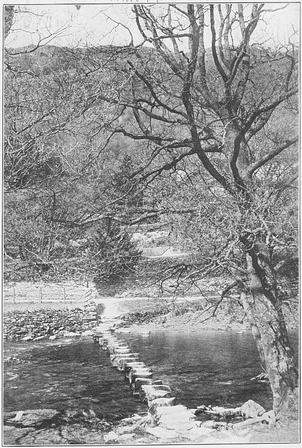 |
| THE STEPPING STONES |
THE LURE OF THE
CAMERA
BY
CHARLES S. OLCOTT
Author of “George Eliot: Scenes and People of
her Novels” and “The Country
of Sir Walter Scott”
ILLUSTRATED FROM PHOTOGRAPHS
BY THE AUTHOR
BOSTON AND NEW YORK
HOUGHTON MIFFLIN COMPANY
The Riverside Press Cambridge
1914
COPYRIGHT, 1914, BY CHARLES S. OLCOTT
ALL RIGHTS RESERVED
Published September 1914
TO MY BOYS
GAGE, CHARLES, AND HOWARD
THIS BOOK IS AFFECTIONATELY
DEDICATED
PREFACE
The difference between a ramble and a journey is about the same as that between pleasure and business. When you go anywhere for a serious purpose, you make a journey; but if you go for pleasure (and don’t take the pleasure too seriously, as many do) you only ramble.
The sketches in this volume, which takes its name from the first chapter, are based upon “rambles,” which were for the most part merely incidental excursions, made possible by various “journeys” undertaken for more serious purposes. It has been the practice of the author for many years to carry a camera on his travels, so that, if chance should take him within easy distance of some place of literary, historic, or scenic interest, he might not miss the opportunity to pursue his favorite avocation.
If the reader is asked to make long flights, as from Scotland to Italy, then back, across the Atlantic, to New England, and thence overland to Wyoming and Arizona, he must remember that ramblers take no account of distance or direction. In this case they must take no account of time, for these rambles are but the chance happenings that have occurred at intervals in a period of more than a dozen years.
People who are in a hurry, and those who in traveling seek to “do” the largest number of places in the shortest number of days, are advised not to travel with an amateur photographer. Not only must he have leisure to find and study his subjects, but he is likely to wander away from the well-worn paths and use up his time in making inquiries, in a fashion quite exasperating to the tourist absorbed in his itinerary.
The rambles here chronicled could not possibly
be organized into an itinerary or moulded
into a guidebook. The author simply invites
those who have inclinations similar to his own,
to wander with him, away from the customary
paths of travel, and into the homes of certain distinguished
authors or the scenes of their writings,
and to visit with him various places of
historic interest or natural beauty, without a
thought of maps, distances, time-tables, or the
toil and dust of travel. This is the real essence
of rambling.
The chapter on “The Country of Mrs. Humphry Ward” was published originally in The Outlook in 1909, and “A Day in Wordsworth’s Country,” in the same magazine in 1910.
CONTENTS
| I. | The Lure of the Camera | 1 | |
| II. | Literary Rambles in Great Britain | 15 | |
| English Courtesy—The George Eliot Country— Experiences in Rural England. Overcoming Obstacles—A London “Bobby”—Carlyle’s Birthplace—The Country of Scott and Burns | |||
| III. | A Day in Wordsworth’s Country | 49 | |
| IV. | From Hawthornden to Roslin Glen | 73 | |
| V. | The Country of Mrs. Humphry Ward | 93 | |
| I. | mrs. ward and her work | 95 | |
| II. | the real robert elsmere | 110 | |
| III. | other people and scenery | 128 | |
| VI. | A Tour of the Italian Lakes | 147 | |
| VII. | Literary Landmarks of New England | 175 | |
| I. | concord | 179 | |
| II. | salem | 196 | |
| III. | portsmouth | 207 | |
| IV. | the isles of shoals | 222 | |
| VIII. | A Day With John Burroughs | 233 | |
| IX. | Glimpses of the Yellowstone | 251 | |
| X. | The Grand Cañon of Arizona | 271 | |
| Index | 297 | ||
ILLUSTRATIONS
| The Stepping Stones | Frontispiece |
| On the River Rothay, near Ambleside, England, and below Fox How, the home of Thomas Arnold of Rugby, grandfather of Mrs. Humphry Ward. One of the scenes in “Robert Elsmere” was suggested by these stones. | |
| A Path in Bretton Woods | 10 |
| White Mountains, N.H. | |
| Profile Lake | 12 |
| Showing the Old Man of the Mountains. In the Franconia Notch, White Mountains, N.H. The profile suggested to Hawthorne the tale of “The Great Stone Face.” | |
| The Grand Saloon, Arbury Hall | 22 |
| Near Nuneaton, England. The original of Cheverel Manor, in George Eliot’s “Mr. Gilfil’s Love Story.” | |
| A School in Nuneaton | 30 |
| Where George Eliot attended school in her eighth or ninth year. | |
| The Bromley-Davenport Arms | 34 |
| In Ellastone, England, the original of the “Donnithorne Arms” of “Adam Bede.” | |
| The Birthplace of Robert Burns | 40 |
| In Ayrshire, Scotland. The poet was born here January 25, 1759. The left of the building is the cottage of two rooms where the family lived. Adjoining, on the right, is the “byre,” or cow-house. | |
| The Burns Monument, Ayrshire | 44 |
| The monument was built in 1820. It is sixty feet high, and almost an exact duplicate of the monument in Edinburgh. | |
| The Brig o’ Doon, Ayrshire | 48 |
| The bridge over which Tam o’ Shanter rode to escape the witches. | |
| Grasmere Lake | 60 |
| “For rest of body perfect was the spot.” | |
| Dove Cottage, Grasmere | 64 |
| Wordsworth’s home for eight years. The view is from the garden in the rear of the cottage. | |
| Wordsworth’s Well | 68 |
| In the garden of Dove Cottage, where the poet placed “bright gowan and marsh marigold” brought from the border of the lake. | |
| Hawthornden | 76 |
| The home of the Drummond family, on the banks of the Esk, Scotland. | |
| The Sycamore | 80 |
| The tree at Hawthornden under which William Drummond met Ben Jonson. | |
| Ruins of Roslin Castle | 86 |
| In Roslin Glen overlooking the Esk. | |
| Mrs. Humphry Ward and Miss Dorothy Ward | 96 |
| At the villa in Cadenabbia, overlooking Lake Como, where Mrs. Ward wrote “Lady Rose’s Daughter.” | |
| “Under Loughrigg” | 100 |
| The view from the study window of Thomas Arnold at Fox How. | |
| The Passmore Edwards Settlement House | 104 |
| Tavistock Place, London. | |
| The Lime Walk | 110 |
| In the garden of Trinity College, Oxford. Referred to in “Robert Elsmere.” | |
| Cottage of “Mary Backhouse” | 114 |
| At Sad Gill, Long Sleddale. The barns and storehouses, on either end, give the small cottage an attenuated appearance. | |
| The Rectory of Peper Harow | 118 |
| In Surrey, England. The original of Murewell Rectory, the house of “Robert Elsmere.” | |
| The Rothay and Nab Scar | 130 |
| From Pelter Bridge, Ambleside, England. | |
| Lake Como | 138 |
| From “the path that led to the woods overhanging the Villa Carlotta.” | |
| Stocks | 144 |
| The home of Mrs. Humphry Ward, near Tring, England. | |
| Lake Maggiore, Italy | 150 |
| According to Ruskin the most beautiful of the Italian Lakes. | |
| Isola Bella, Lake Maggiore | 154 |
| The costly summer home of Count Vitaliano Borromeo in the Seventeenth Century. | |
| The Atrium of the Villa Maria | 170 |
| At Cadenabbia, Lake Como. | |
| “I call this my J. M. W. Turner” | 174 |
| View from the dining-room window of the Villa Maria. | |
| The Old Manse | 180 |
| In Concord, where Emerson wrote “Nature” and Hawthorne lived for three years. | |
| Walden Woods | 184 |
| The cairn marks the site of Thoreau’s hut and “Thoreau’s Cove” is seen in the distance. | |
| House of Ralph Waldo Emerson | 190 |
| Concord, Massachusetts. | |
| The Wayside | 194 |
| House in Concord, where Hawthorne lived in the latest years of his life. | |
| The Mall Street House | 200 |
| Salem, Mass. The room in which Hawthorne wrote “The Scarlet Letter” is in the third floor, front, on the left. | |
| The House of the Seven Gables | 204 |
| The house in Turner Street, Salem, Mass., built in 1669, and owned by the Ingersoll family. | |
| The Bailey House | 208 |
| The house in Portsmouth, New Hampshire, of Thomas Bailey Aldrich’s grandfather, known as “Captain Nutter” in “The Story of a Bad Boy.” | |
| ”Aunt Abigail’s” Room | 212 |
| In the “Nutter” House. | |
| An Old Wharf | 216 |
| On the Piscataqua River, Portsmouth, where Aldrich often played in his boyhood. | |
| Celia Thaxter’s Cottage | 224 |
| On Appledore, where the poet maintained her famous “Island Garden.” | |
| Appledore | 232 |
| Trap-dike, on Appledore, the largest of the “Isles of Shoals.” | |
| John Burroughs at Woodchuck Lodge | 238 |
| The summer home of Mr. Burroughs is near Roxbury, New York, in the Catskill Mountains. When not at work he enjoys “the peace of the hills.” | |
| John Burroughs at Work | 244 |
| The “study” is a barn, where the naturalist sits facing the open doors. He looks out upon a stone wall where the birds and small animals come to “talk with him.” The “desk” is an old hen-coop, with straw in the bottom, to keep his feet warm. | |
| Hymen Terrace | 254 |
| At Mammoth Hot Springs in the Yellowstone National Park. | |
| Pulpit Terrace | 258 |
| A part of Jupiter Terrace, the largest of the formations at Mammoth Hot Springs. | |
| Old Faithful | 264 |
| The famous geyser in the Upper Geyser Basin of the Yellowstone National Park. It plays a stream about one hundred and fifty feet high every sixty-five minutes, with but slight variations. | |
| The Grotto Geyser | 266 |
| A geyser in the Yellowstone National Park notable for its fantastic crater. | |
| The Cañon of the Yellowstone River | 268 |
| The view from Inspiration Point. | |
| The Trail, Grand Cañon | 278 |
| The view shows the upper part of Bright Angels’ Trail, as it appears when the ground is covered with snow. | |
| The Grand Cañon of Arizona | 290 |
| The view from Bright Angels’. The plateau over which the trail leads to the edge of the river is partly covered by a deep shadow. The great formation in the left foreground is known as the “Battleship.” |
I
THE LURE OF THE CAMERA
THE LURE OF THE
CAMERA
I
Two pictures, each about the size of a large postage-stamp, are among my treasured possessions. In the first, a curly-headed boy of two, in a white dress, is vigorously kicking a football. The second depicts a human wheelbarrow, the body composed of a sturdy lad of seven, whose two plump arms serve admirably the purpose of a wheel, his stout legs making an excellent pair of handles, while the motive power is supplied by an equally robust lad of eight, who grasps his younger brother firmly by the ankles.
These two photographs, taken with a camera so small that in operation it was completely concealed between the palms of my hands, revealed to me for the first time the fascination of amateur photography. The discovery meant that whatever interested me, even if no more than the antics of my children, might be instantly recorded. I had no idea of artistic composition, nor of the proper manipulation of plates, films, and printing papers. Still less did I foresee that the tiny little black box contained the germ of 4 an indefinable impulse, which, expanding and growing more powerful year by year, was to lead me into fields which I had never dreamed of exploring, into habits of observation never before a part of my nature, and into a knowledge of countless places of historic and literary interest as well as natural beauty and grandeur, which would never have been mine but for the lure of the camera.
The spell began to make itself felt almost immediately. I determined to buy a camera of my own,—for the two infinitesimal pictures were taken with a borrowed instrument,—and was soon the possessor of a much larger black box capable of making pictures three and a quarter inches square. The film which came with it was quickly “shot off,” and then came the impulse to go somewhere. My wife and I decided to spend a day at a pretty little inland lake, a few hours’ ride from our home. I hastened to the druggist’s to buy another film, and without waiting to insert it in the camera, off we started. Arrived on the scene, our first duty was to “load” the new machine. The roll puzzled us a little. Somehow the directions did not seem to fit. But we got it in place finally and began to enjoy the pleasures of photography.
Our first view was a general survey of the lake, which is nearly twelve miles long, with many bays and indentations in the shore-line, making 5 a rather large subject for a picture only three and a quarter inches square. But such difficulties did not seem formidable. The directions clearly intimated that if we would only “press the button” somebody would “do the rest,” and we expected the intangible somebody to perform his part of the contract as faithfully as we were doing ours. Years afterward, chancing to pass by the British Museum, which stretches its huge bulk through Great Russell Street a distance of nearly four hundred feet, we saw a little girl taking its picture with a “Brownie” camera. “That reminds me of ‘Dignity and Impudence,’” said my wife, referring to Landseer’s well-known painting which we had seen at the National Gallery that afternoon. This is the mistake which all amateurs make at first—that of expecting the little instrument to perform impossible feats.
But to resume my story. We spent a remarkably pleasant day composing beautiful views. We shot at the bays and the rocks, at the steamers and the sail-boats and at everything else in sight except the huge ice-houses which disfigure what would otherwise be one of the prettiest lakes in America. We posed for each other in picturesque attitudes on the rocks and in a little rowboat which we had hired. We had a delightful outing and only regretted when, all too soon, the last film was exposed. But we felt 6 unusually happy to think that we had a wonderful record of the day’s proceedings to show to our family and friends.
That night I developed the roll, laboriously cutting off one exposure at a time, and putting it through the developer according to directions. Number one was blank! Something wrong with the shutter, I thought, and tried the next. Number two was also blank!! What can this mean? Perhaps I haven’t developed it long enough. So into the fluid went another one, and this one stayed a long time. To my dismay number three was as vacant as the others, and so were all the rest of the twelve. Early the next morning I was at the drug store demanding an explanation. The druggist confessed that the film-roll he had sold me was intended for another camera, but “It ought to have worked on yours,” he said. Subsequent investigation proved that on my camera the film was to be inserted on the left, while on the other kind it went in on the right. This difference seemed insignificant until I discovered that in turning the roll to insert it on the opposite side from what was intended, I had brought the strip of black paper to the front of the film, thus preventing any exposure at all! Thus I learned the first principle of amateur photography:—Know exactly what you are doing and take no chances with your apparatus. A young lady, to whom I once attempted 7 to explain the use of the various “stops” on her camera, impatiently interrupted me with the remark, “Well, that’s the way it was set when I got it and I’m not going to bother to change it. If the pictures are no good, I’ll send it back.” It is such people who continually complain of “bad luck” with their films.
It was two or three years after the complete failure of my first expedition before the camera again exerted its spell, except that meanwhile it was faithfully recording various performances of the family, especially in the vacation season. It was in the autumn of 1898. The victorious American fleet had returned from Santiago and all the famous battleships and cruisers were triumphantly floating their ensigns in the breezes of New York Harbor. “Here is a rare opportunity. Come!” said the camera. Taking passage on a steamer, I found a quiet spot by the lifeboats, outside the rail, where the view would be unobstructed. We passed in succession all the vessels, from the doughty Texas, commanded by the lamented Captain Philip, to the proud Oregon, with the laurels of her long cruise around Cape Horn to join in the fight. One by one I photographed them all. Here, at last, I thought, are some pictures worth while. I had been in the habit of doing my own developing—with indifferent success, it must be confessed. These exposures, made under ideal conditions, were too 8 precious to be risked, so I took the roll to a prominent firm of dealers in photographic goods, for developing and printing. Every one was spoiled! Not a good print could be found in the lot. Impure chemicals and careless handling had left yellow spots and finger-marks on every negative! Subsequent investigation revealed the fact that a negro janitor had been entrusted with the work. Here, then, was maxim number two for the amateur—Do your own developing, and be sure to master the details of the operation. The old adage, “If you want a thing well done, do it yourself,” applies with peculiar force to photography.
Another experience, which happened soon after, came near ending forever all further attempts in photography. This time I lost, not only the negatives, but the camera itself. Having accomplished very little, I resolved to try no more. But a year or two later a friend offered to sell me his 4 × 5 plate camera, with tripod, focusing-cloth and all, at a ridiculously low price, and enough of the old fever remained to make me an easy—victim, shall I say? No! How can I ever thank him enough? I put my head under the focusing-cloth and for the first time looked at the inverted image of a beautiful landscape, reflected in all its colors upon the ground glass. At that moment began my real experience in photography. The hand camera is 9 only a toy. A child can use it as well as an expert. It has its limitations like the stone walls of a prison yard, and beyond them one cannot go. All is guesswork. Luck is the biggest factor of success. Artistic work is practically impossible. It is not until you begin to compose your pictures on the ground glass that art in photography becomes a real thing. Then it is amazing to see how many variations of the same scene may be obtained, how many different effects of light and shade, and how much depends upon the point of view. Then, too, one becomes more independent of the weather, for by a proper use of the “stop” and careful application of the principles of correct exposure, it is possible to overcome many adverse conditions.
An acquaintance once expressed surprise that I was willing to spend day after day of my vacation walking about with a heavy camera case, full of plate-holders in one hand, and a bulky tripod slung over my shoulder. I replied that it was no heavier than a bagful of golf-sticks, that the walk took me through an endless variety of beautiful scenery, and that the game itself was fascinating. Of course, my friend could not appreciate my point of view, for he had never paused on the shore of some sparkling lake to study the ripple of the waters, the varying shades of green in the trees of the nearest bank, the pebbly beach with smooth flat stones whitening 10 in the sun, but looking cooler and darker where seen through the transparent cover of the shallow water, the deep purple of the undulating hills in the distance, and above it all the canopy of filmy, foamy cumulus clouds, with flat bases and rounded outlines, and here and there a glimpse of the loveliest cerulean blue. He had never looked upon such scenes as these with the exhilarating thought that something of the marvelous beauty which nature daily spreads before us can be captured and taken home as a permanent reminder of what we have seen.
To catch the charm of such a scene is no child’s play. It requires the use of the best of lenses and other appliances, skill derivable only from long study and experience, and a natural appreciation of the artistic point of view. It requires even more, for the plate must be developed and the prints made, both operations calling for skill and a sense of the artistic.
The underlying pleasure in nearly all sports and in many forms of recreation is the overcoming of obstacles. The football team must defeat a heavy opposing force to gain any sense of satisfaction. If the opponents are “easy,” there is no fun in the game. The hunter who incurs no hardship complains that the sport is tame. A fisherman would rather land one big black bass after a long struggle than catch a hundred perch which almost jump into your boat without an invitation.
| 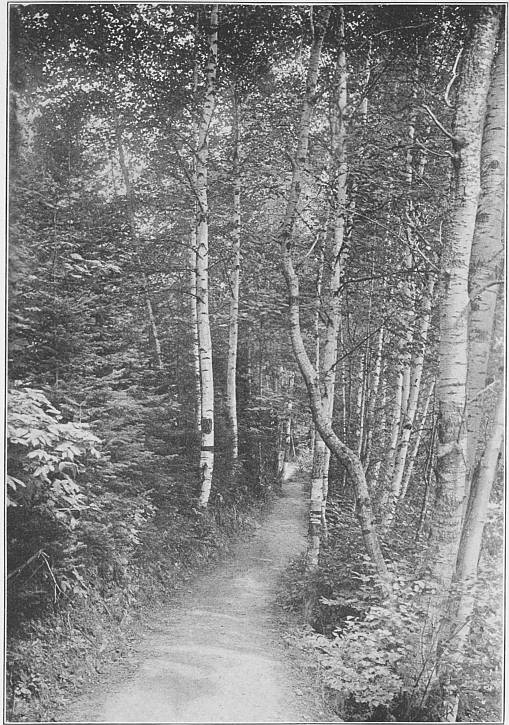 |
| A PATH IN BRETTON WOODS |
Photography as a sport possesses this element in perfection. Those who love danger may find plenty of it in taking snap-shots of charging rhinoceroses, or flash-light pictures of lions and tigers in the jungle. Those who like hunting may find more genuine enjoyment in stalking deer for the purpose of taking the animal’s picture than they would get if they took his life. Those who care only to hunt landscapes—and in this class I include myself—can find all the sport they want in the less strenuous pursuit. There is not only the exhilaration of searching out the attractive scenes,—the rugged mountain-peak; the woodland brook; the shady lane, with perhaps a border of white birches; the ruined castle; the seaside cliffs; the well-concealed cascade; or the scene of some noteworthy historical event,—but the art of photography itself presents its own problems at every turn. To solve all these; to select the right point of view; to secure an artistic “balance” in all parts of the picture; to avoid the ugly things that sometimes persist in getting in the way; to make due allowance for the effect of wind or motion; to catch the full beauty of the drifting clouds; to obtain the desired transparency in the shadows,—these and a hundred other considerations give sufficient exercise to the most alert mind and add to the never-ending fascination of the game.
I have noticed that the camera does not lure 12 one into the beaten tracks which tourists most frequent. It is helpless on the top of a crowded coach or in a swiftly flying motor-car. It gets nervous when too many people are around, especially if they are in a hurry, and fails to do its work. It must be allowed to choose its own paths and to proceed with leisure and calmness. It is a charming guide to follow. I have always felt a sense of relief when able to escape the interminable jargon of the professional guides who conduct tourists through the various show places of Europe, and so far as it has been my fortune to visit such places, have usually left with a vague feeling of disappointment. On the other hand, when, acting under the spell of the camera, I have sought an acquaintance with the owner of some famous house and have proceeded at leisure to photograph the rooms and objects of interest, I have left not only with a sense of complete satisfaction, but with a new friendship to add to the pleasure of future memories.
| 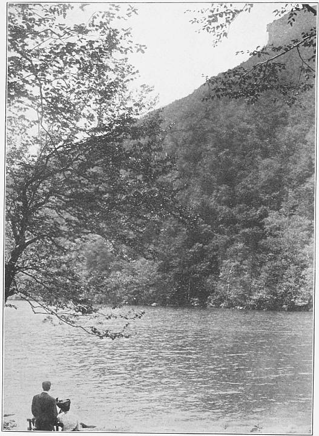 |
| PROFILE LAKE |
To visit the places made famous by their associations with literature and with history; to seek the wonders of nature, whether sublime and awe-inspiring, like the mountain-peaks of Switzerland and the vast depths of the Grand Cañon, or restful in their sweet simplicity like the quiet hills and valleys of Westmoreland; to see the people in their homes, whether stately palaces or humble cottages; to find new beauty daily, whether at 13 home or abroad, in the shady woodland path, in the sweep of the hills and the ever-changing panorama of the clouds; to gain that relief from the cares of business or professional life which comes from opening the mind to a free and full contemplation of the picturesque and beautiful,—these are the possibilities offered by amateur photography to those who will follow the lure of the camera.
II
LITERARY RAMBLES IN GREAT BRITAIN
II
LITERARY RAMBLES IN GREAT BRITAIN
I
Emerson said of the English people, “Every one of these islanders is an island himself, safe, tranquil, incommunicable,” and that “It is almost an affront to look a man in the face without being introduced.” Holmes, on the contrary, records that he and his daughter were “received with nothing but the most overflowing hospitality and the most considerate kindness.” Lowell found the average Briton likely to regard himself as “the only real thing in a wilderness of shams,” and thought his patronage “divertingly insufferable.” On the other hand, he praised the genuineness of the better men of England, as “so manly-tender, so brave, so true, so warranted to wear, they make us proud to feel that blood is thicker than water.” Longfellow met at dinner on two successive days what he called “the two opposite poles of English character.” One of them was “taciturn, reserved, fastidious” and without “power of enjoyment”; the other was “expansive, hilarious, talking incessantly, laughing loud and long.” All of this suggests that in attempting to write one’s impressions of the 18 English or any other people, one must remember, what I once heard a Western schoolmaster declare with great emphasis—“some people are not all alike!”
I have but one impression to record, namely, that, almost without exception, the people whom we met, both in England and Scotland, manifested a spirit of helpfulness that made our photographic work delightful and led to the accomplishment of results not otherwise obtainable. They not only showed an unexpected interest in our work, but seemed to feel some sense of obligation to assist. This was true even of the policeman at the gate of the Tower of London, who, according to his orders, deprived me of my camera before I could enter. But upon my protesting, he referred me to another guardian of the place, and he to another, until, continuing to pass “higher up,” I was at last photographing everything of interest, including the “Beef-Eater” who obligingly carried my case of plates. Whenever difficulties arose, these helpful people always seemed ready with suggestions. It seemed to be more than courtesy. It was rather a friendly sympathy, a desire that I might have what I came for, and a kind of personal anxiety that I should not be disappointed.
An incident which happened at the very outset of our photographic experiences in England, and one which was responsible in large measure 19 for much of the success of that undertaking, will serve as an example of the genial and sympathetic spirit which seemed to be everywhere prevalent. We had started to discover and to photograph, so far as possible, the scenes of George Eliot’s writings, and on the day of our arrival in London, my wife had found in the British Museum a particularly interesting portrait of George Henry Lewes. She learned that permission to copy it must be obtained from the Keeper of the Prints, and accordingly, on the following morning I appeared in the great room of the Museum where thousands of rare prints are carefully preserved.
Sir Sidney Colvin, the distinguished biographer of Robert Louis Stevenson, and the head of this department, was not in, but a polite assistant made note of my name and message, making at the same time an appointment for the next day. At the precise hour named I was present again, revolving in my mind the briefest possible method of requesting permission to copy the Lewes picture. Presently I was informed that Mr. Colvin wished to see me, and I followed the guide, mechanically repeating to myself the little formula or speech I intended to make, and wondering what luck I should have. The formula disappeared instantly as a pleasant-faced gentleman advanced with outstretched hand and genial smile, calling me by name and saying, “I have something 20 I want to show you, if you would care to see it.” Considerably surprised, I saw him touch a button as he resumed,—“It’s a picture of George Eliot,—at least we think it is, but we are not sure,—we bought it from the executor of the estate of Sir Frederic Burton, the artist.” Here the attendant appeared and was instructed to get the portrait. It proved to be a large painting in water-colors of a woman’s face, with remarkably strong, almost masculine features and a pair of eyes that seemed to say, “If any woman in the world can do a man’s thinking, I’m that person.” A letter received subsequently, in answer to my inquiry, from Sir Theodore Martin, who was a lifelong friend of the novelist as well as the painter, definitely established the fact that the newly discovered portrait was a “study” for the authorized portrait which Sir Frederic Burton painted. No doubt the artist came to realize more of the true womanliness of George Eliot’s character, for he certainly softened the expression of those determined-looking eyes.
After we had discussed the picture at some length, my new-found friend inquired about my plans. I told him I meant to visit, so far as possible, the scenes of George Eliot’s novels and to photograph all the various places of interest. “Of course you’ll go to Nuneaton?” he asked. “Yes,” I replied, in a tone of assurance; “I expect to visit Arbury Hall, the original of Cheverel 21 Manor.” “I suppose, then, you are acquainted with Mr. Newdegate,” said he, inquiringly. I had to confess that I did not know the gentleman. Mr. Colvin looked at me in surprise. “Why, you can’t get in if you don’t know him. Arbury is a private estate.” This remark struck me with stunning force. I had supposed I could go anywhere. The game was a new one to me, and here at the very beginning appeared to be an insurmountable barrier. Of course, I could not expect to walk into private houses and grounds to make photographs, and how was I to make the acquaintance of these people? Mr. Colvin seemed to read my thought and promptly solved the problem. “I happen to know Mr. Newdegate well. He was a classmate at Oxford. I’ll give you a letter of introduction.—No, I’ll do better. I’ll write and tell him you’re coming.”
This courtesy, from a gentleman to whom I was a complete stranger, was as welcome as it was unexpected, and nearly caused me to forget the original purpose of my call. But Mr. Colvin did not forget. As I was about to leave, he asked if I wished a copy of the Eliot portrait and added, “Of course, you will have permission to copy the Lewes picture”; and the interview ended with his promise to have the official photographer make me copies of both. I returned to the hotel to report that the Lewes picture had been obtained without even asking for it, and the next morning 22 received a message from the owner of Arbury Hall cordially inviting us to visit him.
Of Arbury itself I knew little, but I had read, somewhere, that the full-length portraits of Sir Christopher Cheverel and his lady by Sir Joshua Reynolds, which George Eliot describes as hanging side by side in the great saloon of Cheverel Manor, might still be seen at Arbury. I was, therefore, eager to find them.
We lost no time in proceeding to Nuneaton, where we passed the night at the veritable tavern which was the scene of Lawyer Dempster’s conviviality. Readers of “Janet’s Repentance” will recall that the great “man of deeds” addressed the mob in the street from an upper window of the “Red Lion,” protesting against the “temptation to vice” involved in the proposition to hold Sunday evening lectures in the church. He brought the meeting to a close by calling for “Three cheers for True Religion”; then retiring with a party of friends to the parlor of the inn, he caused “the most capacious punch-bowl” to be brought out and continued the festivities until after midnight, “when several friends of sound religion were conveyed home with some difficulty, one of them showing a dogged determination to seat himself in the gutter.”
| 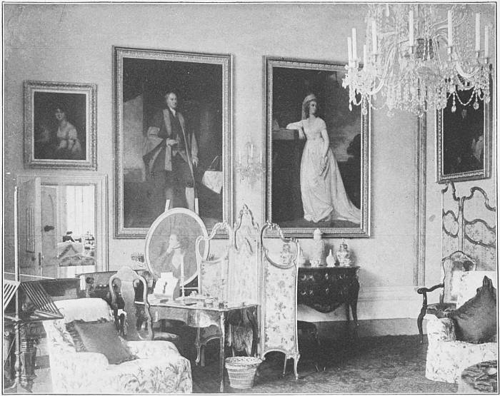 |
| THE GRAND SALOON, ARBURY HALL |
The old tavern, one of the few which still retain the old-fashioned arched doorways through which the coaches used to enter to change horses, 23 boasts of having entertained guests no less distinguished than Oliver Cromwell and the immortal Shakespeare. My wife said she was sure this was true, for the house smelled as if it had not been swept since Shakespeare’s time.
In the morning we drove to Arbury Hall, the private grounds of which make a beautifully wooded park of three hundred acres. The mansion is seen to the best advantage from the opposite side of a little pool, where the surrounding trees and shrubbery are pleasantly reflected in the still water, where marsh-grass and rushes are waving gently in the summer air, and the pond-lilies spread their round green leaves to make a richer, deeper background for their blossoms of purest white. On a green knoll behind this charming foreground stands a gray stone mansion of rectangular shape, its sharp corners softened with ivy and by the foliage at either end. Three great gothic windows in the center, flanked on both ends by slightly projecting wings, each with a double-storied oriel, and a multitude of pinnacles surmounting the walls on every side, give a distinguished air to the building, as though it were a part of some great cathedral. This Gothic aspect was imparted to the mansion something over a hundred years ago by Sir Roger Newdigate, who was the prototype of George Eliot’s Sir Christopher Cheverel, and the novelist describes the place as if in the process of remodeling.
We were cordially welcomed by the present owner, Mr. Newdegate, whose hospitality doubly confirmed our first impressions of British courtesy. After some preliminary conversation we rose to begin a tour of inspection. Our host threw open a door and instantly we were face to face with the two full-length portraits of Sir Christopher and Lady Cheverel, which for so long had stood in my mind as the only known objects of interest at Arbury. They are the work, by the way, not of Sir Joshua Reynolds, but of George Romney. George Eliot wrote from memory, probably a full score of years after her last visit to the place, and this is one of several slight mistakes. These fine portraits, really representing Sir Roger Newdigate and his lady, hang at the end of a large and sumptuously furnished room, with high vaulted ceiling in the richest Gothic style, suggesting in the intricate delicacy of its tracery the famous Chapel of Henry VII in Westminster Abbey. The saloon, as the apartment is called, is lighted chiefly by a large bay window, the very one through which Sir Christopher stepped into the room and found various members of his household “examining the progress of the unfinished ceiling.”
Looking out through these windows, our host noticed some gathering clouds and suggested a drive through the park before the shower. Soon his pony-cart was at the door, drawn by a dainty 25 little horse appropriately named “Lightheart,” for no animal with so fond a master could possibly have a care in the world. We stopped for a few minutes at Astley Castle, the “Knebley Abbey” of George Eliot, an old but picturesque mansion, once the residence of the famous Lord Seymour and his ill-fated protégée, Lady Jane Grey. Then, after a brief pause at the parson’s cottage, we proceeded to Astley Church, a stone building with a square tower such as one sees throughout England.
A flock of sheep pasturing in the inclosure suggested George Eliot’s bucolic parson, the Reverend Mr. Gilfil, who smoked his pipe with the farmers and talked of “short-horns” and “sharrags” and “yowes” during the week, and on Sunday after Sunday repeated the same old sermons to the ever-increasing satisfaction of his parishioners. We photographed this ancient temple on the inside as well as outside, for it contains some curious frescoes representing the saints holding ribbons with mottoes from which one is expected to obtain excellent moral lessons.
Our next objective was the birthplace of George Eliot, a small cottage standing in one corner of the park. We were driving rapidly along one of the smooth roads leading to the place, when the pony made a sudden turn to the right. I was sitting on the rear seat, facing backward, 26 camera and tripod in hand. The cart went down a steep embankment, then up again, and the next instant I was sprawled ignominiously on the ground, while near by lay the tripod, broken into a hundred splinters. Scrambling to my feet, I saw the pony-cart stuck tight in the mud of a ditch not far away, my wife and our host still on the seat, and nobody the worse for the accident except poor Lightheart, who was almost overcome with excitement. He had encountered some men on the road leading a bull, and quickly resolved not to face what, to one of his gentle breeding, seemed a deadly peril.
Leading the trembling Lightheart, we walked back to the house, and in due season sat down to luncheon beneath the high vaulted ceiling of that splendid dining-room, which George Eliot thought “looked less like a place to dine in than a piece of space inclosed simply for the sake of beautiful outline.” A cathedral-like aspect is given to the room by the great Gothic windows which form the distinguishing architectural feature of the building. These open into an alcove, large enough in itself, but small when compared with the main part of the room. The ecclesiastical effect is heightened by the rich Gothic ornamentation of the canopies built over various niches in the walls, or rather it would be, were it not for the fact that the latter are filled with life-size statues in white marble, of a distinctly classical character. 27 Opposite the windows is a mantel of generous proportions, in pure white, the rich decorations of which would not be inappropriate for some fine altar-piece; but Cupid and Psyche, standing in a carved niche above, instantly dissipate any churchly thoughts, though they seem to be having a heavenly time.
After luncheon we sat for a time in the library, in the left wing of the building, examining a first folio Shakespeare, while our host busied himself with various notes of introduction and other memoranda for our benefit. As we sat in the oriel window of this room,—the same in which Sir Christopher received the Widow Hartopp,—we noticed what appeared to be magazines, fans, and other articles on the chairs and sofas. They proved to be embroidered in the upholstery. It is related that Sir Roger Newdigate—“Sir Christopher Cheverel,” it will be remembered—used to remonstrate with his lady for leaving her belongings scattered over his library. She—good woman—was not only obedient, but possessed a sense of humor as well, for she promptly removed the articles, but later took advantage of her lord’s absence to leave their “counterfeit presentment” in such permanent form that there they have remained for more than a century.
The opposite wing of the mansion contains the drawing-room, adjoining the saloon. It is lighted by an oriel window corresponding to that 28 in the library. The walls are decorated with a series of long narrow panels, united at the top by intricate combinations of graceful pointed arches, in keeping with the Gothic style of the whole building. It was curious to note how well George Eliot remembered it, for here was the full-length portrait of Sir Anthony Cheverel “standing with one arm akimbo,” exactly as described. How did the novelist happen to remember that “arm akimbo,” if, as is quite likely, she had not seen the room for more than twenty years?
It was in this room that Catarina sat down to the harpsichord and poured out her emotions in the deep rich tones of a fine contralto voice. The harpsichord upon which the real Catarina played—her name was Sally Shilton—is now upstairs in the long gallery, and here we saw not only that interesting instrument, but also the “queer old family portraits ... of faded, pink-faced ladies, with rudimentary features and highly developed head-dresses—of gallant gentlemen, with high hips, high shoulders, and red pointed beards.”
Mr. Newdegate, with that fine spirit of helpfulness that we had met in his friend Mr. Colvin, informed us that he had invited the Reverend Frederick R. Evans, Canon of Bedworth, a nephew of George Eliot, to meet us at luncheon, but an engagement had interfered. We were invited, however, to visit the rectory at Bedworth, 29 and later did so, receiving a cordial welcome. Mrs. Evans took great delight in showing various mementoes of her husband’s distinguished relative, including a lace cap worn by George Eliot and a pipe that once belonged to the Countess Czerlaski of “The Sad Fortune of the Reverend Amos Barton.” I can still hear the ring of her hearty laugh as she took us into the parlor, and pointing to a painting on the wall, exclaimed, “And here is Aunt Glegg!” There she was, sure enough, with the “fuzzy front of curls” which were always “economized” by not wearing them until after 10.30 A.M. At this point the canon suddenly asked, “Have you seen the stone table?” I had been looking for this table. It is the one where Mr. Casaubon sat when Dorothea found him, apparently asleep, but really dead, as dramatically told in “Middlemarch.” I had expected to find it at Griff House, near Nuneaton, the home of George Eliot’s girlhood, but the arbor at the end of the Yew Tree Walk was empty. We were quite pleased, therefore, when Mr. Evans took us into his garden and there showed us the original table of stone which the novelist had in mind when she wrote the incident.
Among the other things Mr. Newdegate had busied himself in writing, while we sat in his library, was a message to a friend in Nuneaton, Dr. N——, who, he said, knew more about George Eliot than any one else in the neighborhood. We 30 accordingly stopped our little coupé at the doctor’s door, as we drove back to town. He insisted upon showing us the landmarks, and as there was no room in our vehicle, mounted his bicycle and told the driver to follow. In this way we were able to identify nearly all the localities of “Amos Barton” and “Janet’s Repentance.” He also pointed out the schoolhouse where Mary Ann Evans was a pupil in her eighth or ninth year. We arrived just as school was dismissed and a crowd of modern school children insisted upon adding their bright rosy faces to our picture. They looked so fresh and interesting that I made no objection.
| 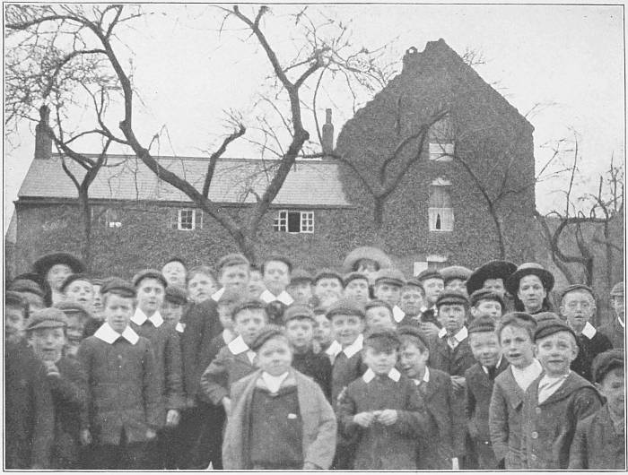 |
| A SCHOOL IN NUNEATON |
On the next evening we were entertained by the doctor and his wife at their home. A picture of Nuneaton fifty years ago attracted my notice. The doctor explained that the artist, when a young girl, had known George Eliot’s father and mother, and had been interested to paint various scenes of the earlier stories. He advised us not to call, because the old lady was very feeble. What was my astonishment when, upon returning to London a few weeks later, I found a letter from this same good lady, expressing regret that she had not met us, and stating that she was sending me twenty-five of her water-color sketches. Among them were sketches of John and Emma Gwyther, the original Amos and Milly Barton, drawn from life many years ago. Later she sent me a portrait 31 of Nanny, the housemaid who drove away the bogus countess. These dear people seemed determined to make our quest a success.
We now turned our attention to “Adam Bede,” traveling into Staffordshire and Derbyshire, where Robert Evans, the novelist’s father and the prototype of Adam Bede, was born and spent the years of his young manhood. Here again we were assisted by good-natured English people. The first was a station agent. Just as the twilight was dissolving into a jet-black night we alighted from the train at the little hamlet of Norbury, with a steamer trunk, several pieces of hand-baggage, a camera, and an assortment of umbrellas. We expected to go to Ellastone, two miles away, the original of Hayslope, the home of Adam Bede, and the real home, a century ago, of Robert Evans. After the train left, the only person in sight was the station agent, who looked with some surprise at the pile of luggage.
In reply to our question, he recommended walking as the best and only way to reach Ellastone. A stroll of two miles, over an unknown and muddy road, in inky darkness, with two or three hundred pounds of luggage to carry, did not appeal to us, particularly as it was now beginning to rain. We suggested a carriage, but there was none. Hotel? Norbury boasted no such conveniences. It began to look as though 32 we might be obliged to camp out in the rain on the station platform. But the good-natured agent, whose day’s work was now done, and who was anxious to go home to his supper, placed the ticket-office, where there was a fire, at our disposal, and a boy was found who was willing to go to Ellastone on his bicycle and learn whether the inn was open (the agent thought not), and if so, whether any one there would send a carriage for us. A long wait of an hour ensued, during which we congratulated ourselves that if we had to sleep on the floor of the ticket-office, it would at least be dryer than the platform. At last the boy returned with the news that the inn was not open, but that a carriage would be sent for us! After another seemingly interminable delay, we finally heard the welcome sound of wheels on the gravel. Our carriage had arrived! It was a butcher’s cart. When the baggage was thrown in, there was but one seat left—the one beside the driver. Small chance for two fairly good-sized passengers, but there was only one solution. I climbed in and took the only remaining seat, while my knees automatically formed another one which my companion in misery promptly appropriated, and away we went, twisting and turning through a wet and muddy lane, so dark that the only visible part of the horse was his tail, the mud flying into our faces from one direction and the rain from another, 33 but happy in the hope and expectation that if the cart did not turn over and throw us into the hedges, we should soon find a better place for a night’s lodging than a country railway station.
In due time we reached the inn, the very one before which Mr. Casson, the landlord, stood and invited Adam Bede to “step in an’ tek somethink.” We were greeted with equal hospitality by the landlord’s wife, who ushered us into the “best parlor,” kindled a rousing fire in the grate (English fires are not usually “rousing”), and asked what we would have for supper. By the time the mud had dried in nice hard lozenges on our clothing, an excellent meal was on the table. It disappeared with such promptness as to bring tears of gratitude to the eyes of the cook—none other than the hospitable landlady herself. We then found ourselves settled for the night in a large, airy, and particularly clean bedroom, the best chamber in the house. “Oh, no, sir, the inn is not open,” explained our good Samaritan, “but we ’re always glad to make strangers comfortable.” These words indicate the spirit of the remark, which we comprehended because helped by the good lady’s eyes, her smile, and her gestures. I cannot set down the exact words for the reasons set forth by Mr. Casson, George Eliot’s landlord of the Donnithorne Arms, who said to Adam: “They ’re cur’ous talkers i’ this country; the gentry’s hard work to hunderstand ’em; I 34 was brought hup among the gentry, sir, an’ got the turn o’ their tongue when I was a bye. Why, what do you think the folks here says for ‘hev n’t you’?—the gentry, you know, says, ‘hev n’t you’—well, the people about here says, ‘hanna yey.’ It’s what they call the dileck as is spoke hereabout, sir.”
| 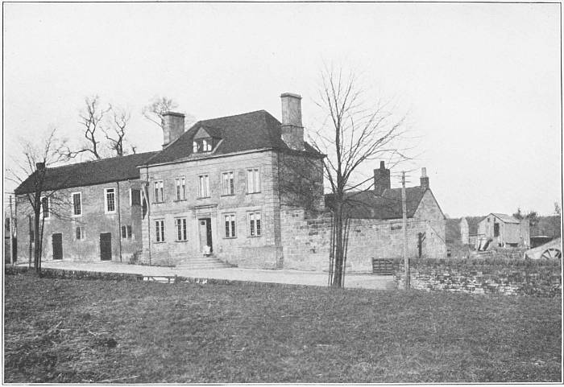 |
| THE BROMLEY-DAVENPORT ARMS |
It was curious to note, when we explored the village the next morning, that Ellastone is even now apparently just the same little hamlet it was in the time of George Eliot’s father. I had never expected to find the real Hayslope. I supposed, of course, that it would be swallowed up by some big manufacturing town. But here it was exactly as represented—except that Adam Bede’s cottage has been enlarged and repainted and a few small houses now occupy the village green where Dinah Morris preached. The parish church, with its square stone tower and clock of orthodox style, still remains the chief landmark of the village as it was on the day in 1801 when Robert Evans married his first wife, Harriet Poynton, a servant in the Newdigate family, by whom the young man was also employed as a carpenter. Mr. Francis Newdigate, the great-grandfather of our friend at Arbury, lived in Wootton Hall and was the original of the old squire in “Adam Bede.” This fine old estate was the Donnithorne Chase of the novel, and therefore we found it worthy of a visit. We found the fine old “hoaks” 35 there, which Mr. Casson mentioned to Adam, and with them some equally fine elms and a profusion of flowers, the latter tastefully arranged about a series of broad stone terraces, stained with age and partly covered with ivy, which gave the place the dignified aspect of some ancient palace of the nobility. Much to our regret the owner was not at home, but the gardener maintained the hitherto unbroken chain of courtesy by showing us the beauties of the place from all the best points of view.
It has not been my intention to follow in detail the events of our exploration of the country of George Eliot, nor to describe the many scenes of varied interest which were gradually unfolded to us. I have sought rather to suggest what is likely to happen to an amateur photographer in search of pictures, and how such a quest becomes a real pleasure when the people one meets manifest a genuine interest and a spirit of friendly helpfulness such as we experienced almost invariably.
II
There were some occasions upon which the chain of courtesy, to which I have previously referred, if not actually broken, received some dangerous strains, when great care had to be taken lest it snap asunder. There are surly butlers and keepers in England as elsewhere, and we 36 encountered one of the species in the Lake District. I had called at the country residence of Captain ——, a wealthy gentleman and a member of Parliament. The place was celebrated for its wonderful gardens and is described in one of the novels of Mrs. Humphry Ward. His High-and-Mightiness, the Butler, was suffering from a severe attack of the Grouch, resulting in a stiffening of the muscles of the back and shoulders. He would do nothing except inform me that his Master was “not at ’ome.” I could only leave a message and say I would return. The next day I was greeted by the same Resplendent Person, his visage suffused with smiles and his spinal column oscillating like an inverted pendulum. “Captain —— is ex-treme-ly sorry he cawnt meet you, sir. He’s obliged to be in Lunnun to-day, sir, but he towld me to sai to you, sir, that you’re to taik everythink in the ’ouse you want, sir.” And then the Important One gave me full possession while I photographed the most interesting rooms, coming back occasionally to inquire whether I wished him to move “hany harticles of furniture,” afterward hunting up the gardener, who in turn conducted me through the sacred precincts of his own particular domain.
At another time, also in connection with Mrs. Ward’s novels, I came dangerously near to another break. It was down in Surrey, whither we had gone to visit the scenery of “Robert Elsmere.” 37 I knocked at the door of a little stone cottage celebrated in the novel, and was shown into the presence of a very old gentleman, who looked suspiciously, first at my card, and then at me, finally demanding to know what I wanted. I explained that I was an American and had come to take a picture of his house. He looked puzzled, and after some further scrutiny of my face, my clothes, my shoes, and my hat, said slowly, “Well, you people in America must be crazy to come all the way over here to photograph this house. I have always said it’s the ugliest house in England, owned by the ugliest landlord that ever lived, and occupied by the ugliest tenant in the parish.” Fortunately he was not possessed of the Oriental delusion that a photograph causes some of the virtue of an individual (or of a house) to pass out into the picture, and upon further reflection concluded that if a harmless lunatic wanted to make a picture of his ugly old house, it wouldn’t matter much after all.
Not infrequently it happened that the keepers in charge of certain places of public interest, while desiring to be courteous themselves, were bound by strict instructions from their superiors. In the year when we were exploring the length and breadth of England and Scotland in search of the scenes of Sir Walter Scott’s writings, we came one day to a famous hall, generously thrown open to the public by the Duke of ——, who 38 owned it. Here we found a rule that the use of “stands” or tripods would not be permitted in the building. Snap-shots with hand-cameras were freely allowed, but these are always more or less dependent on chance, and for interior views, requiring a long time-exposure, are worthless. The duke, apparently, did not mind poor pictures, but was afraid of good ones. I felt that I really must have views of the famous rooms of that house, and we pleaded earnestly with the keeper. But orders were orders and he remained inflexible, but always courteous. He wanted to help, however, and finally conducted me to a cottage near by where I was presented to his immediate superior, a good-looking and good-natured woman. She, too, was willing and even anxious to oblige, but the duke’s orders were imperative. Finally a thought struck me. “You say stands are forbidden—would it be an infraction of the rules if I were to rest my camera on a table or chair?” “Oh, no, indeed!” she quickly replied; then, calling to the keeper, said, “John, I want you to do everything you can for this gentleman.” John seemed pleased. He first performed his duty to the duke by locking up the dangerous tripod where it could do no harm. Then taking charge of us, he conducted us through the well-worn rooms, meanwhile instructing his daughter to look after other visitors and keep them out of our way. I rested my camera on ancient chairs and tables so 39 precious that the visitors were not permitted to touch them, John kindly removing the protecting ropes. We were taken to parts of the house and garden not usually shown to visitors, so anxious was our guide to assist in our purpose. At last we came to a great ballroom, with richly carved woodwork, but absolutely bare of furniture. Here the forbidden “stand” was sorely needed. My companion promptly came to the rescue. “I’ll be the tripod,” said she. The hint was a good one, so, resting the camera upon her shoulder, I soon had my picture composed and in focus. Then, placing the camera on a convenient window-ledge just above my head, and making allowance for the increased elevation, I gave the plate a long exposure and the result was as good an “interior” as I ever made.
This is one of the best parts of the game—the overcoming of obstacles. Without it, photography would be poor fun, something like the game of checkers I once played with a village rustic. He swept off all my men in half a dozen moves and then went away disgusted. I was too easy. A picture that is not worth taking a little trouble to get is usually not worth having. I have even been known to take pictures I really did not need, just because some unexpected difficulties arose.
Another part of the pursuit, which I have always enjoyed, is the quiet amusement one can 40 often derive from unexpected situations. One day in London, when the streets were pretty well crowded with Coronation visitors, we decided to take a picture of the new Victoria Monument in front of Buckingham Palace. I had taken the precaution to secure a permit, so, without asking any questions, proceeded to spread out my tripod and compose my picture. Just as I inserted the plate-holder, a “Bobby,” by which name the London policeman is generally known, appeared, advancing with an air that plainly said, “I’ll soon stop that game, my fine fellow!” I expressed my surprise and said I had a permit, at the same time drawing the slide—an action which, not being a photographer, he did not consider significant. He looked scornfully at the permit, and said it was not good after 10 A.M. Here, again, the assistant photographer of our expedition came to the rescue. She exercised the woman’s privilege of asking “Why?” and “Bobby” moved from in front of the camera to explain. “Click” went the shutter, in went the slide, out came the plate-holder, and into the case went the camera. “Bobby” politely apologized for interfering, and expressed his deep regret at being obliged to disappoint us. I solemnly assured him that it was all right, that he had only done his duty and that I did not blame him in the least! But I neglected to inform him that the Victoria Monument was already mine.
| 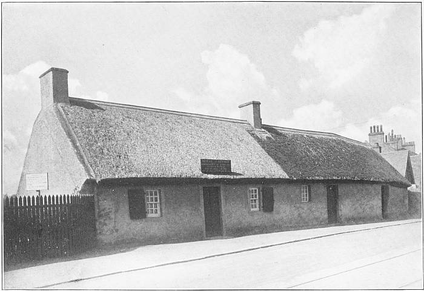 |
| THE BIRTHPLACE OF ROBERT BURNS |
One of the pleasures of rambling with a camera 41 is that it takes you to so many out-of-the-way places, which you would not otherwise be likely to visit. Dorothy Wordsworth in her “Recollections of a Tour in Scotland” complains that all the roads and taverns in Scotland are bad. Dorothy ought to have known, for she and William walked most of the way to save their bones from dislocation by the jolting of their little cart, and their limited resources compelled them to seek the shelter and food of the poorest inns. The modern tourist, on the contrary, will find excellent roads and for the most part hotel accommodations where he can be fairly comfortable. It was something of a rarity, therefore, when, as occasionally happened, we could find nothing but an inn of the kind that flourished a century ago.
On a very rainy morning in May we alighted from the train at the little village of Ecclefechan, known to the world only as the birthplace of Thomas Carlyle. A farmer at the station, of whom we inquired the location of a good hotel, answered in a Scotch dialect so broad that we could not compass it. By chance a carriage stood near by, and as it afforded the only escape from the pouring rain, we stepped in and trusted to luck. The vehicle presently drew up before the door of a very ancient hotel, from which the landlady, whom we have ever since called “Mrs. Ecclefechan,” came out to meet us. She was a frail little woman, well along in years, with thin features, 42 sharp eyes, and a bald head, the last of which she endeavored to conceal beneath a sort of peaked black bonnet, tied with strings beneath her chin, and suggesting the rather curious spectacle of a bishop’s miter above a female face. Her dress was looped up by pinning the bottom of it around her waist, exposing a gray-and-white striped petticoat that came down halfway between the knees and the ankles, beneath which were a pair of coarse woolen stockings and some heavy shoes. A burlap apron completed the costume.
Our hostess, who seemed to be proprietor, clerk, porter, cook, chambermaid, waitress, barmaid, and bootblack of the establishment, was possessed of a kind heart, and she made us as comfortable as her limited facilities would permit. We were taken into the public-room, a space about twelve feet square, with a small open fire at one end, benches around the walls and a table occupying nearly all the remaining space. Across a narrow passage was the kitchen, where the landlady baked her oatmeal cake and served the regulars who came for a “penny’orth o’ rum” and a bit of gossip. In front was another tiny room where were served fastidious guests who did not care to eat in the kitchen. At noon we sat down to a luncheon, which might have been worse, and at five were summoned into the little room again. We thought it curious to serve hard boiled eggs with afternoon tea, and 43 thinking supper would soon be ready, declined them. This proved a sad mistake for Americans with big, healthy appetites, for the supper never came. The eggs were it.
We spent the evening in the public-room sitting near the fire. One by one the villagers dropped in, each man ordering his toddy and spending an hour or two over a very small glass. The evenings had been spent in that way in that place for a hundred years. We seemed to be in the atmosphere of “long ago.” A middle-aged Scotchman, whose name was pronounced, very broadly, “Fronk,” seemed to feel the responsibility of entertaining us. He sang, very sweetly I thought, a song by Lady Nairne, “The Auld Hoose,” and recited with fine appreciation the lines of Burns’s “Lament for James, Earl of Glencairn,” “To a Mouse,” “To a Louse,” and other poems. He related how Burns once helped a friend out of a dilemma. Three women had been buried side by side. The son of one of them wished to put an inscription on his mother’s tombstone, but the sexton could not remember which grave was hers. Burns solved the problem by suggesting these lines:—
| “Here, or there, or thereaboots, Lies the body of Janet Coutts, But here, or there, or whereaboots, Nane can tell Till Janet rises and tells hersel.” |
Our landlady assured us that Fronk “had the bluid o’ Douglas in his veins,” but he was now only a poor “ne’er-do-weel,” picking up “a bit shillin’” now and then. But he loved Bobbie Burns.
After the evening’s entertainment we were shown to a tiny bedroom. Over the horrors upstairs I must draw the veil of charity, only remarking that if I ever go to Ecclefechan again I shall seek out a nice soft pile of old scrap-iron for a couch, rather than risk another night on one of those beds.
Of course we visited the birthplace of Carlyle, which is now one of the “restored” show places, and an interesting one. We also went to the graveyard to see the tomb of Carlyle. Here we were conducted by an old woman, nearly ninety years of age, very poor and feeble, who had lived in the village all her days. We asked if she had ever seen Carlyle. “Oh, yes,” she replied, wearily, “I hae seen ’im. He was a coo-rious mon.” Then brightening she added, with a smile that revealed her heart of hearts, “But we a’ love Bobbie Burns.” And so we found it throughout Scotland. The feeble old woman and the dissipated wanderer shared with the intelligent and cultivated classes a deep-seated and genuine love for their own peasant poet, whom they invariably called, affectionately, “Bobbie.”
| 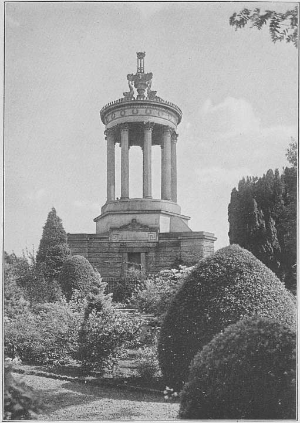 |
| THE BURNS MONUMENT, AYRSHIRE |
It was not long after this that we had occasion 45 to visit the land of Burns, for a trip through Scotland, even when undertaken primarily for the sake of Scott landmarks, as ours was, would scarcely be possible without many glimpses of the places made famous by the elder and less cultured but not less beloved poet. Scott’s intimacy with Adam Ferguson, the son of the distinguished Dr. Adam Ferguson, was the means of his introduction to the best literary society in Edinburgh, and it was at the house of the latter, that Scott, then a boy of fifteen, met Burns for the first and only time. He attracted the notice of the elder poet by promptly naming the author of a poem which Burns had quoted, when no one else in the room could give the information. It is a far cry from the aristocratic quarters of Dr. Ferguson to the tavern in the Canongate where the “Crochallan Fencibles” used to meet, but here the lines crossed again, for to this resort for convivial souls Burns came to enjoy the bacchanalian revels known as “High Jinks,” in the same way as did Andrew Crosbie, the original of Scott’s fictitious Paulus Pleydell.
We went to the old town of Dumfries to see a number of places described by Scott in “Guy Mannering,” “Redgauntlet,” and other novels, and found ourselves in the very heart of the Burns country. In the center of High Street stands the old Midsteeple in one room of which the original Effie Deans, whose real name was 46 Isabel Walker, was tried for child murder. Here the real Jeanie Deans refused to tell a lie to save her sister’s life, afterward walking to London to secure her pardon. Almost around the corner is the house where Burns’s Jean lived, and where “Bobbie” died. In the same town is the churchyard of St. Michaels where Burns lies buried in a handsome “muselum,” as one of the natives informed us.
Out on the road toward the old church of Kirkpatrick Irongray, where Scott erected a monument to Helen Walker, the prototype of Jeanie Deans, is a small remnant of the house once occupied by that heroine. In the same general direction but a little farther to the north, on the banks of the river Nith, is Ellisland, where Burns attempted to manage a farm, attend to the duties of an excise officer, and write poetry, all at the same time. Out of the last came “Tam o’ Shanter,” but the other two “attempts” were failures.
We traveled down to Ayrshire to see the coast of Carrick and what is left of the ancestral home of Robert Bruce, where the Scottish hero landed, with the guidance of supernatural fires, as graphically related by Scott in “The Lord of the Isles.” Here again we were in Burns’s own country. In the city of Ayr we saw the “Twa Brigs” and the very tavern which Tam o’ Shanter may be supposed to have frequented,—
| “And at his elbow, Souter Johnie, His ancient, trusty, drouthy cronie.” |
Of course we drove to Burns’s birthplace, about three miles to the south, a long, narrow cottage with a thatched roof, one end of which was dwelling-house and the other end stable. It was built by the poet’s father, with his own hands, and when Robert was born there in the winter of 1759 probably looked a great deal less respectable than it does now.
Continuing southward, we stopped at Alloway Kirk for a view of the old church where Tam o’ Shanter first saw the midnight dancing of the witches and started on his famous ride. The keeper felt personally aggrieved because I preferred to utilize my limited time to make a picture of the church, rather than listen to his repetition of a tale which I already knew by heart. We traveled over Tam’s route and soon had a fine view of the old “Brig o’ Doon,” where Tam at length escaped the witches at the expense of his poor nag’s tail. I have made few pictures that pleased me more than that of the “auld brig,” which I was able to get by placing my camera on the new bridge near by. Here the memory of Burns is again accentuated by a graceful memorial, in the form of a Grecian temple and very similar to the one on Calton Hill, Edinburgh, but far more beautifully situated. It is surrounded by a garden of well-trimmed yews, shrubbery of 48 various kinds, and a wealth of brightly blooming flowers, and best of all, stands well above the “banks and braes o’ bonnie Doon,” where the poet himself would have been happy to stand and look upon his beloved river.
| 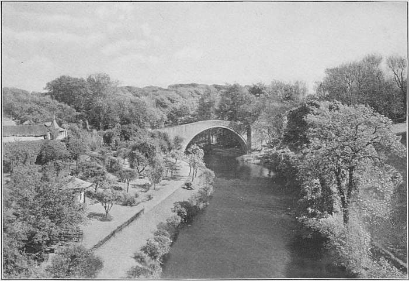 |
| THE BRIG O’ DOON, AYRSHIRE |
Whatever may have been “Bobbie’s” faults, and, poor fellow, they were many and grievous, there is nothing more beautiful than the mantle of love beneath which they have been concealed and forgotten. He touched the hearts of his countrymen as none other ever did, and out of the sordid earth of his shortcomings have sprung beautiful flowers, laid out along well-ordered and graceful paths, a delight and solace to his fellow-men, like the brilliant blossoms that brighten the lovely garden at the base of his memorial overlooking the Doon.
III
A DAY IN WORDSWORTH’S COUNTRY
III
A DAY IN WORDSWORTH’S COUNTRY
Our arrival on Saturday evening at the village of Windermere was like the sudden and unexpected realization of a dream. On many a winter night, under the light of our library lamp at home, we had talked of that vague, distant “sometime” when we should visit the English Lakes. And now—by what curious combination of circumstances we did not try to analyze—here we were with the whole beautiful panorama, in all its evening splendors, spread out before us. Through our minds passed, as in a vision, the whole company of poets who are inseparably associated with these scenes: Wordsworth, whose abiding influence upon the spirit of poetry will endure as long as the mountains and vales which taught him to love and reverence nature; Southey, who, himself without the appreciation of nature, was the first to recognize Wordsworth’s rare power of interpreting her true meaning; Coleridge, the most intimate friend of the greater poet, whom Wordsworth declared to be the most wonderful man he ever met, and who, in spite of those shortcomings which caused his life to end in worldly failure, nevertheless 52 possessed a native eloquence and alluring personality.
Nor should we forget De Quincey, who spent twenty of the happiest years of his life at Dove Cottage, as the successor of the Wordsworths. His most intimate companion was the famous Professor Wilson of Edinburgh, known to all readers of “Blackwood’s Magazine” as “Christopher North.” Attracted partly by the beauty of the Lake Country, but more by his desire to cultivate the intimacy of Wordsworth, whose genius he greatly admired, Professor Wilson bought a pretty place in Cumberland, where he lived for several years. He enjoyed the companionship of the friendly group of poets, but, we are told, occasionally sought a different kind of pleasure in measuring his strength with some of the native wrestlers, one of the most famous of whom has testified that he found him “a very bad un to lick.”
At a later time, Dr. Arnold of Rugby found himself drawn to the Lakes by the same double attraction, and built the charming cottage at Fox How on the River Rothay, where his youngest daughter still resides. He wrote in 1832: “Our intercourse with the Wordsworths was one of the brightest spots of all; nothing could exceed their friendliness, and my almost daily walks with him were things not to be forgotten.”
It was not alone the beauty of the Westmoreland 53 scenery that had attracted this group of famous men. There are lovelier lakes in Scotland and more majestic mountains in Switzerland. But Wordsworth was here, in the midst of those charming displays of Nature in her most cheerful as well as most soothing moods. Nature’s best interpreter and Nature herself could be seen together. For a hundred years this same influence has continued to exercise its spell upon travelers, and we are bound to recognize the fact that this, and nothing else, had drawn us away from our prearranged path, that we might enjoy the pleasure of a Sunday in the country of Wordsworth.
The morning dawned, bright and beautiful, suggesting that splendid day when Wordsworth, then a youth of eighteen, found himself possessed of an irresistible desire to devote his life to poetry:
| “Magnificent The morning rose, in memorable pomp, Glorious as e’er I had beheld—in front, The sea lay laughing at a distance; near, The solid mountains shone, bright as the clouds, Grain-tinctured, drenched in empyrean light; And in the meadows and the lower grounds Was all the sweetness of a common dawn— Dews, vapors, and the melody of birds, And laborers going forth to till the fields. Ah! need I say, dear Friend, that to the brim My heart was full; I made no vows, but vows Were then made for me; bond unknown to me Was given, that I should be, else sinning greatly, A dedicated spirit.” |
We resolved that the whole of this beautiful day should be devoted to catching something of that indefinable spirit of the Westmoreland hills which had made a poet of Wordsworth, and through him taught the love of Nature to countless thousands. A few steps took us away from the town, the inn, and the other tourists, into a quiet woodland path leading toward the lake, at the end of which we stood
“On long Winander’s eastern shore.”
“Winander” is the old form of Windermere. The lake was the scene of many of Wordsworth’s boyhood experiences.
| “When summer came, Our pastime was, on bright half-holidays, To sweep along the plain of Windermere With rival oars; and the selected bourne Was now an Island musical with birds That sang and ceased not; now a Sister Isle Beneath the oaks’ umbrageous covert, sown With lilies of the valley like a field; And now a third small Island, where survived In solitude the ruins of a shrine Once to Our Lady dedicate, and served Daily with chaunted rites. In such a race, So ended, disappointment could be none, Uneasiness, or pain, or jealousy: We rested in the shade, all pleased alike, Conquered and conqueror. Thus the pride of strength, And the vainglory of superior skill, Were tempered.” |
Wordsworth’s boyhood was probably very much like that of other boys. He tells us that he was “stiff, moody, and of a violent temper”—so much so that he went up into his grandfather’s attic one day, while under the resentment of some indignity, determined to destroy himself. But his heart failed. On another occasion he relates that while at his grandfather’s house in Penrith, he and his eldest brother Richard were whipping tops in the large drawing-room. “The walls were hung round with family pictures, and I said to my brother, ‘Dare you strike your whip through that old lady’s petticoat?’ He replied, ’No, I won’t.’ ‘Then,’ said I, ‘here goes!’ and I struck my lash through her hooped petticoat; for which, no doubt, though I have forgotten it, I was properly punished. But, possibly from some want of judgment in the punishments inflicted, I had become perverse and obstinate in defying chastisement, and rather proud of it than otherwise.” Lowell remarks upon this incident: “Just so do we find him afterward striking his defiant lash through the hooped petticoat of the artificial style of poetry, and proudly unsubdued by the punishment of the Reviewers.” When scarcely ten years old, it was his joy
“To range the open heights where woodcocks run.”
He would spend half the night “scudding away from snare to snare,” sometimes yielding to the 56 temptation to take the birds caught in the snare of some other lad. He felt the average boy’s terror inspired by a guilty conscience, for he says:—
| “And when the deed was done, I heard among the solitary hills Low breathings coming after me, and sounds Of undistinguishable motion, steps Almost as silent as the turf they trod.” |
Across the lake from where we stood, and over beyond the hills on the other side, is the quaint old town of Hawkshead, where Wordsworth was sent to school at the age of nine years. The little schoolhouse may still be seen, but it is of small import. The real scenes of Wordsworth’s early education were the woods and vales, the solitary cliffs, the rocks and pools, and the Lake of Esthwaite, five miles round, which he was fond of encircling in his early morning walks, that he might sit
| “Alone upon some jutting eminence, At the first gleam of dawn-light, when the Vale, Yet slumbering, lay in utter solitude.” |
In winter-time “a noisy crew” made merry upon the icy surface of the lake.
| “All shod with steel, We hissed along the polished ice in games Confederate, imitative of the chase And woodland pleasures,—the resounding horn, The pack loud chiming, and the hunted hare. So through the darkness and the cold we flew, And not a voice was idle.” |
Nor were the pleasures of social life lacking. Dances, feasts, public revelry, and
| “A swarm Of heady schemes, jostling each other,” |
all seemed for a time to conspire to lure his mind away from the paths of “books and nature,” which he would have preferred. But, curiously enough, it was after one of these nights of revelry that, on his way home, Wordsworth was so much impressed with the beauties of the dawn that he felt the impulse, previously mentioned, to devote himself to poetry.
No other poet ever gave such an account of the development of his own mind as Wordsworth gives in the “Prelude.” And while he recounts enough incidents like the snaring of woodcock, the fishing for trout in the quiet pools and the cascades of the mountain brooks, the flying of kites on the hilltops, the nutting expeditions, the rowing on the lake, and in the winter-time the skating and dancing, to convince us that he was really a boy, yet he continually shows that beneath it all there was a deeper feeling—a prophecy of the man who was even then developing. No ordinary boy would have been conscious of “a sense of pain” at beholding the mutilated hazel boughs which he had broken in his search for nuts. No ordinary lad of ten would be able to hold
| “Unconscious intercourse with beauty Old as creation, drinking in a pure Organic pleasure from the silver wreaths Of curling mist, or from the level plain Of waters colored by impending clouds.” |
Even at that early age, in the midst of all his pleasures he felt
| “Gleams like the flashing of a shield;—the earth And common face of Nature spake to me Rememberable things.” |
The secret of Wordsworth’s power lay in the fact that, throughout a long life, nature was to him a vital, living Presence—one capable of uplifting mankind to loftier aspirations, of teaching noble truths, and at the same time providing tranquillity and rest to the soul. As a boy he had felt for nature
| “A feeling and a love That had no need of a remoter charm.” |
But manhood brought a deeper joy.
In these noble lines we reach the very summit of Wordsworth’s intellectual power and poetic genius.
We must now retrace our steps to the village and find a carriage to take us on our journey. For we are not like our English friends, who are good walkers, nor do we care to emulate the pedestrian attainments of our poet, who, De Quincey thought, must have traversed a distance of one hundred and seventy-five thousand to one hundred and eighty thousand English miles. So a comfortable landau takes us on our way, skirting the upper margin of the lake, then winding along the river Brathay, pausing for a moment to view the charming little cascade of Skelwith Force, then on again until Red Bank is reached, overlooking the vale of Grasmere. The first glimpse of this placid little lake, “with its one green island,” its shores well fringed with the budding foliage of spring, the gently undulating 60 hills forming as it were a graceful frame to the mirror of the waters, in which the reflection of the blue sky and fleecy white clouds seemed even more beautiful than their original overhead—the first glimpse could scarcely fail to arouse the emotions of the most apathetic and stir up a poetic feeling in the most unpoetic of natures.
To a mind like Wordsworth’s, such a scene was an inspiration, a revelation of Nature’s charms such as could arouse an almost ecstatic enthusiasm in the heart of one who, all his life, had lived amid scenes of beauty and possessed the eyes to see them. He came here first “a roving schoolboy,” on a “golden summer holiday,” and even then said, with a sigh,—
“What happy fortune were it here to live!”
He had no thought, nor even hope, that he would ever realize such good fortune, but only
| “A fancy in the heart of what might be The lot of others never could be his.” |
| 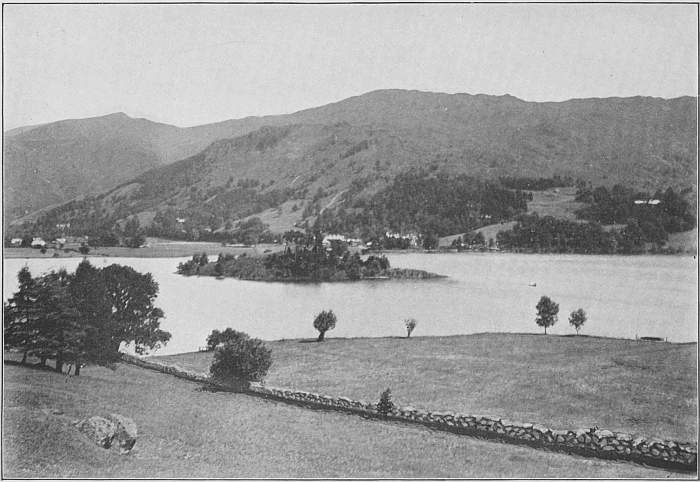 |
| GRASMERE LAKE |
Possibly he may have stood on this very knoll where we were enjoying our first view:—
| “The station whence we looked was soft and green, Not giddy, yet aërial, with a depth Of vale below, a height of hills above. For rest of body perfect was the spot, All that luxurious nature could desire; But stirring to the spirit; who could gaze And not feel motions there?” |
Many years later, in the summer of 1799, Wordsworth and Coleridge were walking together over the hills and valleys of Westmoreland and Cumberland, hoping to find, each for himself, a home where they might dwell as neighbors. Since receiving his degree at Cambridge in 1791 Wordsworth had wandered about in a somewhat aimless way, living for a time in London and in France, visiting Germany, and finally attempting to find a home in the south of England. A small legacy left him in 1795 had given a feeling of independence, and his one consuming desire at this time was to establish a home where his beloved sister Dorothy might be with him and he could devote his entire time to poetry.
A little cottage in a quiet spot just outside the village of Grasmere attracted his eye. It had been a public-house, and bore the sign “The Dove and the Olive Bough.” He called it “Dove Cottage,” and for eight years it became his home. We found the custodian, a little old lady, in a penny shop across the street, and she was glad to show us through the tiny, low-ceilinged rooms. The cottage looks best from the little garden in the rear. The ivy and the roses soften all the harsh angles of the eaves and convert even the chimney-pots into things of beauty. A tangled mass of foliage covers the small back portico and makes a shady nook, where a little bench is invitingly placed. A few yards up the garden walk, 62 over stone steps put in place by Wordsworth and Hartley Coleridge, is the rocky well, or spring, where the poet placed “bright gowan and marsh marigold” brought from the borders of the lake. At the farthest end is the little summer-house, the poet’s favorite retreat. How well he loved this garden is shown in the poem written when he left Grasmere to bring home his bride in 1802:—
| “Sweet garden orchard, eminently fair, The loveliest spot that man hath ever found.” |
Seating ourselves in this garden, we tried to think of the three interesting personages who had made the place their home. Coleridge said, “His is the happiest family I ever saw.” They had one common object—to work together to develop a rare poetic gift. They were poor, for Wordsworth had only the income of a very small legacy, and the public had not yet come to recognize his genius; the returns from his literary work were therefore extremely meager. They got along with frugal living and poor clothing, but as they made no pretensions they were never ashamed of their poverty. Visitors came and went, and at the cost of many little sacrifices were hospitably entertained.
Perhaps the world will never know how much Wordsworth really owed to the two women of his household. They lived together with no sign of jealousy or distrust. The husband and brother 63 was the object of their untiring and sympathetic devotion. They walked with him, read with him, cared for him. Mrs. Wordsworth seems to have been a plain country-woman of simple manners, yet possessed of a graciousness and tact which made everything in the household go smoothly. De Quincey declared that, “without being handsome or even comely,” she exercised “all the practical fascination of beauty, through the mere compensating charms of sweetness all but angelic, of simplicity the most entire, womanly self-respect and purity of heart speaking through all her looks, acts, and movements.” Wordsworth was never more sincere than when he sang,—
“She was a phantom of delight,”
and closed the poem with that splendid tribute to a most excellent wife:—
| “A perfect woman, nobly planned, To warn, to comfort, and command; And yet a spirit still, and bright With something of angelic light.” |
He recognized her unusual poetic instinct by giving her full credit for the best two lines in one of his most beautiful poems, “The Daffodils”:—
| “They flash upon that inward eye Which is the bliss of solitude.” |
To the other member of that household, his sister Dorothy, Wordsworth gave from early boyhood 64 the full measure of his affection. She was his constant companion in his walks, at all hours and in all kinds of weather. She cheerfully performed the irksome task of writing out his verses from dictation. Her observations of nature were as keen as his, and the poet was indebted to Dorothy’s notebook for many a good suggestion. He has been most generous in his acknowledgments of his obligation to her:—
| “She gave me eyes, she gave me ears, And humble cares, and delicate fears, ******* And love, and thought, and joy.” |
In the early days when he was overwhelmed with adverse criticism and brought almost to the verge of despair, it was Dorothy’s helping hand that brought him back to his own.
| “She whispered still that brightness would return; She, in the midst of all, preserved me still A poet, made me seek beneath that name, And that alone, my office upon earth.” |
| 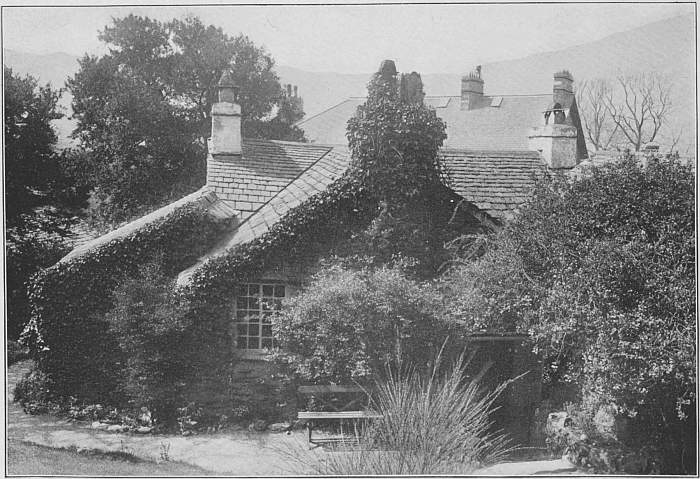 |
| DOVE COTTAGE, GRASMERE |
But it is De Quincey who gives the best statement of the world’s obligation to Dorothy. Said he:—
Whereas the intellect of Wordsworth was, by its original tendency, too stern, too austere, too much enamored of an ascetic harsh sublimity, she it was—the lady who paced by his side continually through sylvan and mountain tracks, in Highland glens, and in the 65 dim recesses of German charcoal-burners—that first couched his eye to the sense of beauty, humanized him by the gentler charities, and engrafted, with her delicate female touch, those graces upon the ruder growths of nature which have since clothed the forest of his genius with a foliage corresponding in loveliness and beauty to the strength of its boughs and the massiveness of its trunks.
Nearly all of Wordsworth’s best poetry was written in this little cottage, or, to speak more accurately, it was composed while he was living here. For it was never his way to write verses while seated at a desk, pen in hand. His study was out of doors. He could compose a long poem while walking, and remember it all afterward when ready to dictate. Thousands of verses, he said, were composed on the banks of the brook running through Easedale, just north of Grasmere Lake. The tall figure of the poet was a familiar sight to farmers for miles around, as he paced the woods or mountain paths, his head bent down, and his lips moving with audible if not distinguishable sounds. One of his neighbors has left on record an impression of how he seemed when he was “making a poem.”
He would set his head a bit forward, and put his hands behind his back. And then he would start in bumming, and it was bum, bum, bum, stop; and then he’d set down, and git a bit o’ paper out, and write a bit. However, his lips were always goan’ whoole time 66 he was upon gress1 walk. He was a kind mon, there’s no two words about that; and if any one was sick i’ the place, he wad be off to see til’ ’em.
In personal appearance—about which, by the way, he cared little—he was not unlike the dalesmen about him. Nearly six feet high, he looked strong and hardy enough to be a farmer himself. Carlyle speaks of him as “businesslike, sedately confident, no discourtesy, yet no anxiety about being courteous; a fine wholesome rusticity, fresh as his mountain breezes, sat well on the stalwart veteran and on all he said or did.”
On our return from Grasmere we took the road along the north shore of Rydal Water—a small lake with all the characteristic beauty of this fascinating region, and yet not so different from hundreds of others that it would ever attract more than passing notice. But the name of Rydal is linked with that of Grasmere, and the two are visited by thousands of tourists year after year. For fifty years the shores of these two lakes and the hills and valleys surrounding them were the scenes of Wordsworth’s daily walks. As we passed we heard the cuckoo—its mysterious sound seeming to come across the lake—and as our own thoughts were on Wordsworth, “the wandering Voice” seemed appropriate. If we could have heard the skylark at that moment, our sense of satisfaction would have been quite complete, 67 and no doubt we should have cried out, with the poet,—
| “Up with me! up with me into the clouds! For thy song, Lark, is strong; Up with me, up with me into the clouds! Singing, singing, With clouds and sky about thee ringing, Lift me, guide me till I find That spot which seems so to thy mind.” |
Just north of the eastern end of the lake, beneath the shadow of Nab Scar, is Rydal Mount, where the poet came to live in 1813, remaining until his death, thirty-seven years later. Increasing prosperity enabled him to take this far more pretentious house. It stands on a hill, a little off the main road, and quite out of sight of the tourists who pass through in coaches and chars-à-bancs. The drivers usually jerk their thumbs in the general direction and say, “There is Rydal Mount,” etc., and the tourists, who have seen only a farmhouse—not Wordsworth’s—are left to imagine that they have seen the house of the poet.
It is an old house, but some recent changes in doors and windows give it a more modern aspect. The unaltered portion is thickly covered with ivy. The ground in front is well planted with a profusion of rhododendrons. A very old stone stairway descends from the plaza in front of the house to a kind of mound or rather a double 68 mound, the smaller resting upon a larger one. From this point the house is seen to the best advantage. In the opposite direction is a landscape of rare natural beauty. Far away in the distance lies Lake Windermere glistening like a shield of polished silver, while on the left Wansfell and on the right Nab Scar stand guard over the valley. In the foreground the spire of the little church of Rydal peeps out over the trees.
At the right of the house is a long terrace which formed one of Wordsworth’s favorite walks, where he composed thousands of verses. From here one may see both Windermere and Rydal Water, with mountains in the distance. Passing through the garden we came to a gate leading to Dora’s Field. Here is the little pool where Wordsworth and Dora put the little goldfishes, that they might enjoy a greater liberty. Here is the stone which Wordsworth saved from destruction by the builders of a stone wall. A little flight of stone steps leads down to another boulder containing the following inscription, carved by the poet’s own hand:—
| Wouldst thou be gathered to Christ’s chosen flock Shun the broad way too easily explored And let thy path be hewn out of the rock The living Rock of God’s eternal WORD 1838 |
| 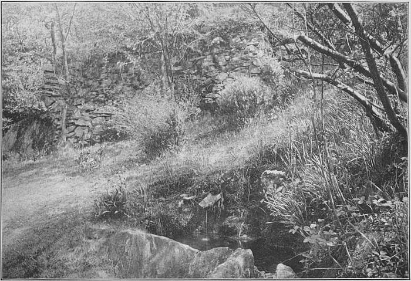 |
| WORDSWORTH’S WELL |
Dora’s field is thickly covered in spring-time with the beautiful golden daffodils, planted by 69 the poet himself. No sight is more fascinating at this season than a field of these bright yellow flowers. We Americans, who only see them planted in gardens, cannot realize what daffodils mean to the English eye, unless we chance to visit England during the early spring. What Wordsworth called a “crowd” of daffodils, growing in thick profusion along the margin of a lake, beneath the trees, ten thousand to be seen at a glance, all nodding their golden heads beside the dancing and foaming waves, is a sight well worth seeing.
| “The waves beside them danced; but they Outdid the sparkling waves in glee; A poet could not but be gay In such a jocund company: I gazed—and gazed—but little thought What wealth the show to me had brought: For oft, when on my couch I lie In vacant or in pensive mood, They flash upon that inward eye Which is the bliss of solitude: And then my heart with pleasure fills, And dances with the daffodils.” |
But now the time had come to return to Windermere, and reluctantly we turned our backs upon these scenes, so full of pleasant memories. The day, however, was not yet done, for after supper we climbed to the top of Orrest-Head, a little hill behind the village. No more charming 70 spot could have been chosen in which to spend the closing hours of this peaceful day. Far below lay the quiet waters of the lake, only glimpses of its long and narrow surface appearing here and there, like “burnished mirrors” set by Nature for the sole purpose of reflecting a magnificent golden sky. It was “an evening of extraordinary, splendor,” like that one which Wordsworth saw from Rydal Mount:—
| “No sound is uttered,—but a deep And solemn harmony pervades The hollow vale from steep to steep, And penetrates the glades.” |
As we stood watching the splendid sunset, the village church rang out its chimes, as if to accompany the inspiring scene with sweet and holy music.
| “How pleasant, when the sun declines, to view The spacious landscape change in form and hue! Here vanish, as in mist, before a flood Of bright obscurity, hill, lawn, and wood; Their objects, by the searching beams betrayed, Come forth and here retire in purple shade; Even the white stems of birch, the cottage white, Soften their glare before the mellow light.” |
The shadows which had been slowly falling upon the scene had now so far enveloped the mountain-side that the narrow roadways and stone fences marking the boundaries of the fields were barely visible. Suddenly in the distance we 71 saw a moving object, a mere speck upon the hillside. It darted first in one direction and then another, like some frightened being uncertain which way to turn. Then a darker speck appeared, and with rapid movement circled to the rear of the whiter one, the latter moving on ahead. Another sudden movement, and a second white speck appeared in another spot. The black speck as quickly moved to the rear of this second bit of white, driving it in the same direction as the first. The white specks then began to seem more numerous. We tried to count—one—two—three—ten—a dozen—perhaps even twenty. There was but one black speck, and he seemed to be the master of all the others, for, darting here and there after the stragglers, he kept them all together. He drove them along the narrow road. Then, coming to an opening in the fence, he hurried along to the front of the procession; then, facing about, deftly turned the whole flock through the gate into a large field. Through this pasture, with the skill of a military leader, he marshaled his troop, rushing backwards and forwards, allowing none to fall behind nor to stray away from the proper path, finally bringing them up in a compact body to another opening in the opposite end of the field. On he went, driving his small battalion along the road, then at right angles into another road, until the whole flock of sheep and the little black dog who commanded 72 them disappeared for the night among the out-buildings of a far distant farm.
The twilight had almost gone, and in the growing darkness we retraced our steps to the village, well content that, through communion with the Spirit of Wordsworth in the presence of that “mighty Being” who to him was the great Teacher and Inspirer of mankind, our own love of nature had been reawakened, and our time well spent on this peaceful, never-to-be-forgotten day at Windermere.
1 Grass.
IV
FROM HAWTHORNDEN TO ROSLIN GLEN
IV
FROM HAWTHORNDEN TO ROSLIN GLEN
| “Roslin’s towers and braes are bonnie— Craigs and water! woods and glen! Roslin’s banks! unpeered by ony, Save the Muse’s Hawthornden.” |
The vale of the Esk is unrivaled, even in Scotland, for beauty and romantic interest. From its source to where it enters the Firth of Forth, the little river winds its way past ancient castles with their romantic legends, famed in poetry and song, and the picturesque homes of barons and lairds, poets and philosophers, forming as it goes, with rocks and cliffs, tall trees and overhanging vines, a bewildering succession of beautiful scenes.
It was to this charming valley that Walter Scott came, with his young wife, in the first year of their wedded life. A young man of imaginative and romantic temperament, though as yet unknown to fame, he found the place an inspiration and delight. A pretty little cottage, with thatched roof, and a garden commanding a beautiful view, made the home where many happy summers were spent. This was at Lasswade, a village which took its striking name from the fact—let us hope it was a fact—that here a 76 sturdy lass was wont to wade the stream, carrying travelers on her back,—a ferry service sufficiently romantic to make up for its uncertainty.
Lockhart tells us that “it was amidst these delicious solitudes” that Walter Scott “laid the imperishable foundation of all his fame. It was here that when his warm heart was beating with young and happy love, and his whole mind and spirit were nerved by new motives for exertion—it was here that in the ripened glow of manhood he seems to have first felt something of his real strength, and poured himself out in those splendid original ballads which were at once to fix his name.”
| “Sweet are the paths, O passing sweet! By Esk’s fair streams that run, O’er airy steep through copsewood deep, Impervious to the sun. ******* Who knows not Melville’s beechy grove And Roslin’s rocky glen, Dalkeith, which all the virtues love, And classic Hawthornden?” |
| 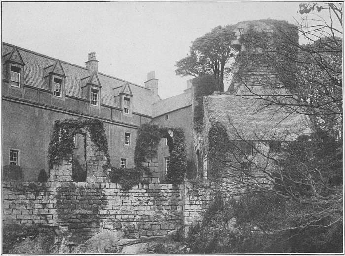 |
| HAWTHORNDEN |
The visitor who would see “Roslin’s rocky glen” may take a coach in Edinburgh and soon reach the spot after a pleasant drive over a well-kept road. But if he would see “classic Hawthornden” in the same day, he must go there first. For the gate which separates the two opens out from Hawthornden and the traveler cannot pass in the opposite direction. We therefore 77 took the train from Edinburgh, and after half an hour alighted at a little station, from which we walked a few hundred yards along a quiet country road, until we reached a lodge marking the entrance to a large estate. Entering here, a few steps brought us to the house of the gardener, who first conducted us to the place that interests him the most—a large and well-kept garden, full of fruits and vegetables, beautiful flowers and well-trained vines. His pride satisfied by our sincere admiration of his handiwork, our guide was ready to reveal to us the glory of Hawthornden, and conducted us to the edge of a precipice known as John Knox’s Pulpit. In front is a deep ravine of stupendous rocks partly bare and partly covered with bushes and pendent creepers. The tall trees on the border, the wooded hill in the distance, and the grand sweep of the river far below, form a scene of majestic grandeur as nearly perfect as one could wish. To the left, on the very edge of a perpendicular rock, is a strong, well-built mansion, so situated that the windows of its principal rooms command a view of the wondrous vale. On the other side of the house are the ivy-covered ruins of an older castle, dating back many centuries.
Since the middle of the sixteenth century, Hawthornden has been the home of a family of Drummonds—a famous Scottish name. William 78 Drummond, the most distinguished of them all, whose name is inseparably associated with the place, was born in 1585. His father was a gentleman-usher at the court of King James VI, and through his association with the Scottish royalty had acquired the Hawthornden property. The boy grew up amid such surroundings, was educated at the University of Edinburgh, and traveled on the Continent for three years before settling down to his life-work, which he then thought would be the practice of law. But scarcely had he returned to Edinburgh for this purpose, when his father died, and young Drummond, at the age of twenty-four, found himself master of Hawthornden with ample means at his command. All thought of the law was abandoned forthwith. The quiet of Hawthornden and the beauty of its natural scenery fitted his temperament exactly. He had already acquired a scholar’s tastes, had read extensively, and possessed a large library in which the Latin classics predominated, though there were many books in Greek, Hebrew, Italian, Spanish, French, and English. He retired to his delightful home to live among his books, and if he found that such surroundings became a tacit invitation from the Muses to keep them company, who could wonder? “Content with my books and the use of my eyes,” he said, “I learnt even from my boyhood to live beneath my fortune; and, dwelling by myself as much as I 79 can, I neither sigh for nor seek aught that is outside me.”
It has been said that Drummond’s three stars were Philosophy, Friendship, and Love. Some three or four years after the poet began his contented life at Hawthornden, the latter star began to shine so brightly as to eclipse the other two. In 1614 he met an attractive girl of seventeen or eighteen, the daughter of Alexander Cunningham, of Barns, a country-seat on a little stream known as the Ore, in Fifeshire, on the opposite side of the Firth of Forth. His poems began at once to reveal the extent to which the loveliness of the fair Euphame had taken possession of him:—
| “Vaunt not, fair Heavens, of your two glorious lights, Which, though most bright, yet see not when they shine, And shining cannot show their beams divine Both in one place, but part by days and nights; Earth, vaunt not of those treasures ye enshrine, Held only dear because hid from our sights, Your pure and burnished gold your diamonds fine, Snow-passing ivory that the eye delights; Nor, Seas, of those dear wares are in you found; Vaunt not rich pearl, red coral, which do stir A fond desire in fools to plunge your ground. Those all more fair are to be had in her: Pearl, ivory, coral, diamond, suns, gold, Teeth, neck, lips, heart, eyes, hair, are to behold.” |
On seeing her in a boat on the Forth he declared her perfection:—
| “Slide soft, fair Forth, and make a crystal plain; Cut your white locks, and on your foaming face Let not a wrinkle be, when you embrace The boat that earth’s perfections doth contain.” |
The river Ore, on the banks of which he first met his lady-love, became to Drummond the greatest river in the world. In one sonnet he compares the tiny stream with every famous river from the Arno to the Nile; and finds that none of them
“Have ever had so rare a cause of praise.”
Unfortunately, his happiness was of brief duration, for on the very eve of the marriage, the young lady died. Drummond’s grief was intense. One can almost imagine him mournfully gazing down the beautiful glen, which she might have enjoyed with him, and exclaiming—
| “Trees, happier far than I, That have the grace to heave your heads so high, And overlook those plains; Grow till your branches kiss that lofty sky Which her sweet self contains. Then make her know my endless love and pains And how those tears, which from mine eyes do fall Helpt you to rise so tall. Tell her, as once I for her sake loved breath So, for her sake, I now court lingering death.” |
| 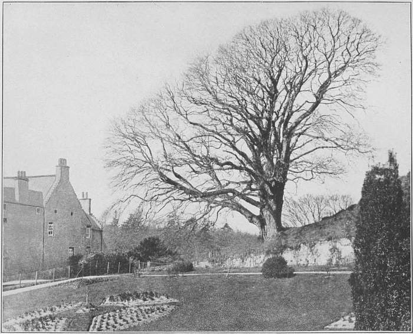 |
| THE SYCAMORE |
For some years after her death, Euphame was to Drummond what Beatrice was to Dante—the inspirer of all that was good in him. Later in life 81 he married Elizabeth Logan, a lady who was said to resemble Euphame Cunningham, and she became the mother of his five sons and four daughters.
In front of the mansion of Hawthornden is a venerable sycamore, said to be five hundred years old. In the month of January, 1619, according to a favorite and oft-told story, Drummond was sitting beneath this tree, when he saw and recognized the huge form of Ben Jonson, as that rollicking hero sauntered toward him along the private road. Jonson had walked all the way from London to see what could be seen in Scotland, and one of the attractions had been an invitation from Drummond, who was now beginning to be known in England, to spend two or three weeks at his home. As he approached, Drummond arose and greeted him heartily, saying,—
“Welcome, welcome, royal Ben!”
To which Jonson quickly replied replied—
“Thankee, thankee, Hawthornden!”
Upon which they both laughed and felt well acquainted at once.
The contrast between these two men, as they stood under the old sycamore, must have been strongly marked. Drummond, quiet, reserved, and gentle in manner—Jonson, boisterous and offensively vulgar: Drummond, well dressed and refined in appearance—Jonson, fat, coarse, 82 and slovenly; Drummond, a country gentleman, accustomed to live well, but always within his means, caring little for society, a man of correct habits and strict piety, and later in life a loving husband and a tender father—Jonson, the dictator of literary London, who waved his scepter in the “Devil Tavern” in Fleet Street, egotistical and quarrelsome, self-assertive, a bully in disposition, his life a perpetual round of dissipation and debt, his means of livelihood dependent on luck or favor, and his greatest enjoyment centering in association with those who, like himself, were most at home in the theaters and taverns of the great bustling city.
Yet both were poets and men of genius, though in different ways. In spite of his peculiarities, Drummond found “rare Ben Jonson” a most interesting companion. He kept a close record of the conversations which passed between them, and might well be called the father of modern interviewing. But unlike the interviewer of to-day, Drummond did not rush to the nearest telegraph station to get his story “on the wire” and “scoop” his contemporaries. There were no telegraphs nor newspapers to call for such effort, and Drummond had too much respect for the courtesy due a guest to think of publishing their private talks. But a portion of the material was published in 1711, long after Drummond’s death, and probably the whole of it in 1832. These 83 conversations with one who knew intimately most of the literary leaders of his time have proved invaluable. They contain Ben’s opinions of nearly everybody—Queen Elizabeth, the Earl of Leicester, King James, Spenser, Raleigh, Shakespeare, Bacon, Drayton, Beaumont, Chapman, Fletcher, and many other contemporaries. Most of all they contain his opinion of himself and his writings, which needless to say is quite exalted.
With no thought of his notes being published, Drummond allowed himself perfect frankness in writing about his guest. His summary of the impression made by Ben’s visit is as follows:—
He is a great lover and praiser of himself; a contemner and scorner of others; given rather to lose a friend than a jest; jealous of every word and action of those about him (especially after drink, which is one of the elements in which he liveth); a dissembler of ill parts which reign in him, a bragger of some good that he wanteth; thinketh nothing well but what either he himself or some of his friends and countrymen hath said or done: he is passionately kind and angry; careless either to gain or keep; vindictive, but, if he be well answered, at himself. For any religion, as being versed in both. Interpreted best sayings and deeds often to the worst. Oppressed with phantasy which hath ever mastered his reason, a general disease in many poets.... He was in his personal character the very reverse of Shakespeare, as surly, ill-natured, proud and disagreeable as Shakespeare, with ten times his merit, was gentle, good-natured, easy, and amiable.
Jonson expressed with equal frankness his opinion of Drummond, to whom he said that he “was too good and simple, and that oft a man’s modesty made a fool of his wit.”
Drummond as a poet was classed by Robert Southey and Thomas Campbell in the highest rank of the British poets who appeared before Milton. His sonnets, which are remarkable for their exquisite delicacy and tenderness, won for him the title of “the Scottish Petrarch.” It has been said that they come as near to perfection as any others of this kind of writing and that as a sonneteer Drummond is surpassed only by Shakespeare, Milton, and Wordsworth among the poets who have written in English.
Before taking leave of the Scottish poet and his picturesque home, we paused for a few minutes to visit the wondrous caverns, cut out of the solid rock upon which the house is built. Antiquarians have insisted that these caves date back to the time of the Picts, at least as far as the ninth or tenth century.
This, too, was the popular understanding before the scientists offered their opinion. In a curious old volume, published in 1753,2 we are told:—
Underneath [the house of Drummond] are the noted Caverns of Hawthorn-Den, by Dr. Stuckely in his Itinerarium-Curiosa, said to have been the King of 85 Pictlands Castle or Palace; which nothing can shew the Doctor’s Credulity more than by suffering himself to be imposed upon by the Tattle of the Vulgar, who in all things they cannot account for, are ascribed to the Picts, without the least Foundation. For those caves, instead of having been a Castle or Palace, I take them either to have been a Receptacle for Robbers, or Places to secure the People and their Effects in, during the destructive Wars between the Picts and English, and Scots and English.
During the contests between Bruce and Baliol for the Scottish crown, these caves became a place of refuge for Bruce and his friends, and one of the rooms is still pointed out as Bruce’s bedchamber.
| “Here, too, are labyrinthine paths To caverns dark and low, Wherein they say King Robert Bruce Found refuge from his foe.” |
In the walls are many square holes, from twelve to eighteen inches deep, supposed to have been used as cupboards. On a rough table near one of the openings is a rude and very much damaged desk, said to have been the property of John Knox.
Leaving these gloomy resorts of ancient heroes—perhaps of ancient robbers—we sought a brighter and more cheerful scene. Descending the path we reached a bridge over the Esk on which is a gate that permitted us to leave Hawthornden, although it does not allow wanderers 86 on the other side to enter. The bridge gave a fine opportunity for a farewell view of the grand old mansion, high in the air at the top of the cliff, which we were now viewing from below.
A delightful stroll along the left bank of the stream for about two miles brought us to Roslin Castle, situated on a rocky promontory high above the river. At the point of the peninsula the river is narrowed by a large mass of reddish sandstone over which it falls. When flooded this becomes a beautiful cascade,—whence the name, “Ross,” a Gaelic word meaning promontory or jutting rock, and “Lyn,” a waterfall,—the “Rock of the Waterfall.” The Esk, where it forms the cascade, is still called “the Lynn.” The view from the promontory is one of the most delightful to be imagined. The banks are precipitous and covered with a luxurious growth of natural wood. The vale seems to be crowded with every possible combination of trees and cliffs, foliage and sparkling stream, that nature can put together to form a region of romantic suggestion.
| 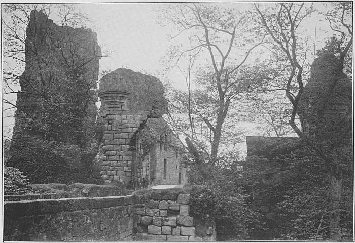 |
| RUINS OF ROSLIN CASTLE |
Little now remains of the ancient castle of Roslin, which was formerly two hundred feet long and ninety feet wide. A few ivy-covered walls and towers may still be seen, in the midst of which is a more modern dwelling rebuilt in 1653. The ancient foundation walls, nine feet thick, still visible below the surface, and the almost inaccessible location of the castle tell the 87 story of its original purpose. A huge kitchen, with the fireplace alone occupying as much space as the entire kitchen of one of our modern houses, suggests the lavish scale upon which the establishment was once conducted.
The castle was built by a family of St. Clairs, whose ancestor, Waldernus de St. Clair, came over with the Conqueror. William St. Clair, Baron of Roslin, Earl of Caithness and Prince of the Orkneys, who flourished in the middle of the fifteenth century, was one of the most famous of these barons. He lived in the magnificence of royal state.
He kept a great court and was royally served at his own table in vessels of gold and silver.... He had his halls and other apartments richly adorned with embroidered hangings. His princess, Elizabeth Douglas, was served by seventy-five gentlewomen, whereof fifty-three were daughters of noblemen, all clothed in velvet and silks, with their chains of gold, and other ornaments; and was attended by two hundred riding gentlemen in all her journeys; and if it happened to be dark when she went to Edinburgh, where her lodgings were at the foot of the Black Friar’s Wynd, eighty lighted torches were carried before her.3
The castle was accidentally set on fire in 1447 and badly damaged, and was leveled to the ground by English forces under the Earl of Hertford, in 88 1544, who was sent to Scotland by Henry VIII to seek to enforce the marriage of his son Edward to the infant Mary of Scotland, the daughter of James V. In 1650 it was again destroyed, during Cromwell’s campaign in Scotland, by General Monk, and rising again, suffered severely at the hands of a mob from Edinburgh in 1688.
It was William St. Clair, the feudal baron above referred to, who built the exquisitely beautiful chapel which stands not far from the castle. The same ancient manuscript, previously quoted, informs us that
His age creeping on him made him consider how he had spent his time past, and how to spend that which was to come. Therefore to the end he might not seem altogether unthankfull to God for the benefices receaved from Him, it came in his minde to build a house for God’s service of most curious work, the which, that it might be done with greater glory and splendour he caused artificers to be brought from other regions and forraigne kingdoms and caused dayly to be abundance of all kinde of workemen present, etc., etc.
The foundation of Roslin Chapel was laid in 1446. It was originally intended to be a cruciform structure with a high central tower. The existing chapel is, therefore, really only a small part of what the church was meant to be. Its style is called “florid Gothic,” but this is probably for want of a better name. There is no other piece of architecture like it in the world. It is a 89 medley of all architectures, the Egyptian, Grecian, Roman, and Saracenic being intermingled with all kinds of decorations and designs, some exquisitely beautiful and others quaint and even grotesque. There are thirteen different varieties of the arch. The owner, who possessed great wealth, desired novelty. He secured it by engaging architects and builders from all parts of Europe. The most beautiful feature of the interior is known as the “’Prentice’s Pillar.” It is a column with richly carved spiral wreaths of beautiful foliage twined about from floor to ceiling. It is said that the master-builder, when he came to erect this column, found himself unable to carry out the design, and traveled to Rome to see a column of similar description there. When he returned he found that his apprentice had studied the plans in his absence and with greater genius than his own, had overcome the difficulties and fashioned a pillar more beautiful than any ever before dreamed of. The master, stung with jealous rage, struck the apprentice with his mallet, killing him instantly. This, at least, is the accepted legend.
The barons of Roslin were buried beneath the chapel side by side, encased in their full suits of armor. There was a curious superstition that when one of the family died, the chapel was enveloped in flames, but not consumed. This and the “uncoffined chiefs” are referred to by Scott in “The Lay of the Last Minstrel.” The lady is lost in 90 the storm while crossing the Firth on her way to Roslin:—
| “O’er Roslin all that dreary night A wondrous blaze was seen to gleam; ’Twas broader than the watch-fire light, And redder than the bright moonbeam. “It glared on Roslin’s castled rock, It ruddied all the copsewood glen; ’Twas seen from Dreyden’s groves of oak, And seen from caverned Hawthornden. “Seemed all on fire that chapel proud Where Roslin’s chiefs uncoffined lie, Each baron, for a sable shroud, Sheathed in his iron panoply. “Seemed all on fire within, around, Deep sacristy and altar’s pale; Shone every pillar foliage-bound, And glimmered all the dead men’s mail. “Blazed battlement and pinnet high, Blazed every rose-carved buttress fair— So still they blaze when fate is nigh The lordly line of high St. Clair. “There are twenty of Roslin’s barons bold Lie buried within that proud chapelle; Each one the holy vault doth hold— But the sea holds lovely Rosabelle.” |
Commemorated by a tablet in the chapel is another interesting legend. Robert Bruce, King of Scotland, in following the chase on Pentland Hills near Roslin, had often started “a white 91 faunch deer” which invariably escaped from his hounds. In his vexation he asked his nobles whether any of them had hounds which would likely be more successful. All hesitated for fear that the mere suggestion of possessing dogs superior to those of the king might be an offense. But Sir William St. Clair (one of the predecessors of the builder of the chapel) boldly and unceremoniously came forward and said he would wager his head that his two favorite dogs Hold and Help would kill the deer before it could cross the March burn. The king promptly accepted the rash wager, and betted the forest of Pentland Moor.
The hunters reach the heathern steeps and Sir William, posting himself in the best situation for slipping his dogs, prayed devoutly to Christ, the Virgin Mary, and St. Katherine. The deer is started, the hounds are slipped; when Sir William spurs his gallant steed and cheers the dogs. The deer reaches the middle of the March-burn brook, the hounds are still in the rear, and our hero’s life is at its crisis. An awful moment; the hunter threw himself from his horse in despair and Fate seemed to sport with his feelings. At the critical moment Hold fastened on the game, and Help coming up, turned the deer back and killed it close by Sir William’s side. The generous monarch embraced the knight and bestowed on him the lands of Kirktown, Logan House, Earnsham, etc., in free forestrie.4
The grateful Sir William erected a chapel to St. Katherine, at the spot, to commemorate the saint’s intervention.
One more tale of Roslin remains to be told. Not far away, on Roslin Moor, occurred one of the famous battles of Scottish history. There were really three battles, all fought in one day, the 24th of February, 1303. Three divisions of the English army, consisting of thirty thousand men, were successively attacked by the valiant Scots with only ten thousand men, who, after overpowering the first division, attacked the second, and then the third, defeating all three in the same day.
And so, with history and legend, poetry and romance, real life and fiction, the glory of nature’s art and the achievements of human handicraft all happily intermingled in our thought and blended into one pleasant memory, we brought to its close our walk through the valley of the Esk, from Hawthornden to Roslin Glen.
2 Maitland’s History of Scotland.
3 From an old manuscript, in the Advocates’ Library, collection of Richard Augustine Hay.
4 Britton’s Architectural Antiquities.
V
THE COUNTRY OF MRS. HUMPHRY WARD
V
THE COUNTRY OF MRS. HUMPHRY WARD
I
MRS. WARD AND HER WORK
“‘Why does any one stay in England who can make the trip to Paradise?’ said the duchess, as she leaned lazily back in the corner of the boat and trailed her fingers in the waters of Como.”
These words from “Lady Rose’s Daughter” came to mind as we glided swiftly in a little motor-boat, late in the afternoon of a perfect April day, over the smooth waters of Como and into the arm of the lake known as Lecco, where we were to enjoy our cup of tea in a little latteria high up on a rocky crag. In the stern sat Mrs. Ward, looking the picture of contentment, a light summer hat with simple trimmings giving an almost girlish aspect to a face in which strong intellectuality and depth of moral purpose were clearly the predominating features. A day’s work done,—for Mrs. Ward goes to Como for work, not play,—this little trip across the lake was one of her favorite recreations, in which, for the time, we were hospitably permitted to share. About 96 us were the scenes “enchanted, incomparable,” which are best described in the words of Mrs. Ward herself:—
When Spring descends upon the shores of the Lago di Como, she brings with her all the graces, all the beauties, all the fine, delicate, and temperate delights of which earth and sky are capable, and she pours them forth upon a land of perfect loveliness. Around the shores of other lakes—Maggiore, Lugano, Garda—blue mountains rise and the vineyards spread their green and dazzling terraces to the sun. Only Como can show in unmatched union a main composition, incomparably grand and harmonious, combined with every jeweled or glowing or exquisite detail. Nowhere do the mountains lean towards each other in such an ordered splendor as that which bends around the northern shores of Como. Nowhere do buttressed masses rise behind each other, to right and left of a blue waterway, in lines statelier or more noble than those kept by the mountains of Lecco Lake as they marshal themselves on either hand, along the approaches to Lombardy and Venetia.
| 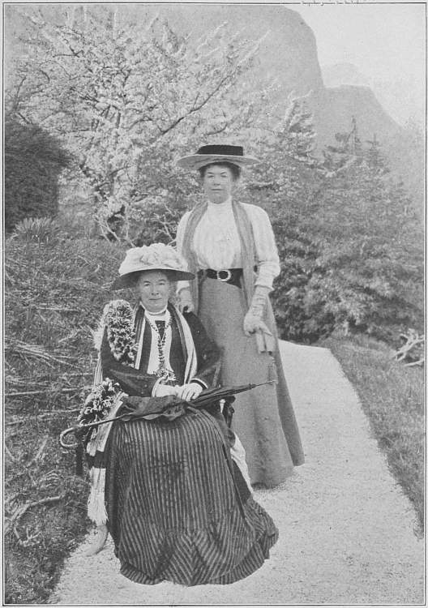 |
| MRS. HUMPHRY WARD AND MISS DOROTHY WARD |
... And within this divine framework, between the glistening snows which still, in April, crown and glorify the heights, and those reflections of them which lie encalmed in the deep bosom of the lake, there’s not a foot of pasture, not a shelf of vineyard, not a slope of forest, where the spring is not at work, dyeing the turf with gentians, starring it with narcissuses, or drawing across it the first golden network of the chestnut leaves; where the mere emerald of the grass is not in itself a thing to refresh the very springs of being; where the peach-blossom and the 97 wild cherry and the olive are not perpetually weaving patterns on the blue which ravish the very heart out of your breast. And already the roses are beginning to pour over the wall; the wistaria is climbing up the cypresses; a pomp of camellias and azaleas is in all the gardens; while in the glassy bays that run up into the hills the primrose banks still keep their sweet austerity, and the triumph of spring over the just banished winter is still sharp and new.
It was in a garden such as this, with a wild cherry tree and olives “perpetually weaving patterns” against the blue sky, that we first met Mrs. Ward. It was a balmy April morning. The scent of spring was in the air, and the birds were adding their melody to the beauty of the landscape. The villa stands well up the slope of a high hill and is reached by a winding path through fragrant trees. A little below the level of the house is a shady nook, well sheltered from the sun, from which the high mountains of the north and the blue glimmer of the lake beneath can be plainly seen. Here we were greeted by the novelist in terms of cordiality that instantly made us “feel at home.” There was no posing, none of that condescension which some writers had led us to expect. We were simply welcomed as friends, with a perfect hospitality that seemed to be born of the tranquil beauty all about us.
Mrs. Ward is a woman of rather more than medium height and of erect and graceful carriage. 98 Her manner is dignified, but it is the dignity of one properly conscious of her own strength and is never repellent. One cannot help feeling that he is in the presence of a distinguished person—one who has justly earned a world-wide fame—and yet one in whom the attributes of true womanliness reign supreme. You are proud of the honor of her friendship, and yet you cannot help thinking what an excellent neighbor she would be.
The instinct which impels Mrs. Ward to seek such scenes of beauty as Lake Como in which to do her writing came to her naturally, for her childhood was spent in one of the most beautiful parts of all England, Westmoreland, the home of Wordsworth and of Ruskin. Here “Arnold of Rugby” made his home in a charmingly situated cottage known as Fox How. “Fox,” in the language of Westmoreland, means “fairy,” and “how” is “hill.” A “fairy hill” indeed it must have seemed to Dr. Arnold’s little granddaughter Mary, when as a child of five she was brought there by her father from far-away Tasmania, where she was born. The English Lakes are famous for their beauty, but there is no more delightful spot in all the region than the valley “under Loughrigg,” and no lovelier river than the Rothay, rippling over the smooth pebbles from Wordsworth’s beloved Rydal Water down to the more pretentious grandeur of Lake Windermere. 99 The impressions of her childhood created in the future novelist an intense love of these streams and mountains, which only increased with her absence and the enlargement of her field of vision. When she was the mother of a little girl of seven and a boy of four, she determined to give to them the same impressions which had delighted her own childhood, and the family made an ever-memorable visit from Oxford, where they were then living, to the vicinity of Fox How—a visit which all children may enjoy who will read the pretty little story of “Milly and Olly.”
Mary Augusta Arnold was born in Tasmania on the 11th of June, 1851. Her father, Thomas Arnold, second son of Dr. Arnold of Rugby and brother of Matthew Arnold, was at that time Inspector of Schools in the far-away island. He had married the granddaughter of Colonel Sorell, a former Governor of Tasmania, and no doubt intended to remain there permanently. But, becoming interested, even at that distance, in the so-called “Oxford Movement” of the middle of the last century, he determined to return to England, where he followed Newman and others into the Roman Catholic Church, accepting a professorship of English Literature in the Catholic University of Dublin. His daughter Mary, the eldest of six, was sent to Ambleside to be educated. In 1865, having renounced the Catholic faith, Mr. Arnold took up his residence at 100 Oxford. Here his eldest daughter, at the age of fourteen, came under the influence of the friendships and associations which were to have so potent an influence upon her future career. The most important of these were Professor Mark Pattison and the Bodleian Library. Professor Pattison strongly urged her to specialize her studies, and acting upon his suggestion, she learned the Spanish language and began a course of study in Spanish literature and history, in which she found the facilities of the Bodleian Library invaluable. In 1872 she became the wife of Mr. Thomas Humphry Ward, then a fellow and tutor in Brasenose College. During the ensuing ten or eleven years Mrs. Ward assisted her husband in his literary work and contributed largely to the “Pall Mall Gazette,” the “Saturday Review,” the “Academy,” and other magazines, besides publishing the little book for children already referred to, “Milly and Olly.”
| 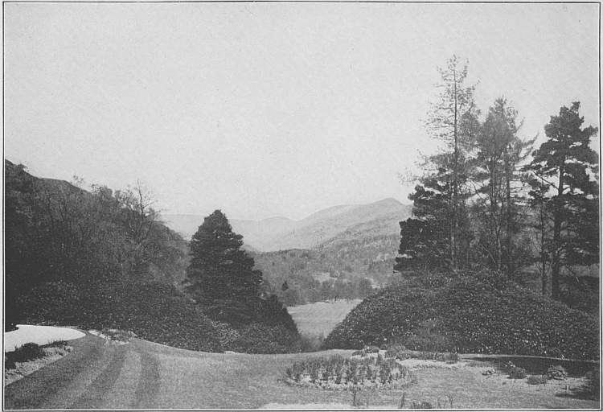 |
| “UNDER LOUGHRIGG” |
In 1881 Mr. Ward accepted a position on the staff of the “Times,” and the family removed to London. For several years they occupied a house in Russell Square, which Mrs. Ward still regards with fond memories, later removing to their present town house, No. 25 Grosvenor Place. But Mrs. Ward’s love of nature is too intense for an uninterrupted residence in London, and she possesses an ideal country home some thirty miles away, near the little village of Aldbury, known 101 as “Stocks.” This large and beautiful estate is ancient enough to be mentioned in “Domesday Book.” Its name does not come from the old “stocks” used as an instrument of punishment, which may still be seen in the village, although this is a common supposition. “Stocks” is derived from the German “stock,” meaning stick or tree, and refers to the magnificent grove by which the house is surrounded.
Before Stocks became a possibility, Mrs. Ward usually managed to choose a summer home in the country, and these choices are most interestingly reflected in her novels. During the Oxford residence Surrey was a favorite resort for seven years, its atmosphere entering largely into the composition of “Miss Bretherton” and “Robert Elsmere.” Two nights spent at a farm on the Kinderscout gave ample material for the opening chapter of the “History of David Grieve.” The lease for a season of Hampden House, in Buckinghamshire, gave the original for Mellor Park in “Marcella,” and a visit near Crewe fixed the scenes of “Sir George Tressady.” “Helbeck of Bannisdale” was the result of a summer spent in the delightful home of Captain Bagot, of Levens Hall, near Kendal. Summers in Italy and Switzerland gave most charming scenery for “Lady Rose’s Daughter” and “Eleanor,” and, to a less degree, “The Marriage of William Ashe.” The cottage of her youngest daughter, 102 Dorothy, near the Langdale Pikes, suggested the home of Fenwick, while Diana Mallory found her home in Stocks itself. Thus the creatures of Mrs. Ward’s fancy have simply lived in the places which she knew the best. They are all scenes of beauty, for Mrs. Ward loves the beautiful in nature, and has spent her life where this yearning could be most fully gratified.
But if Mrs. Ward seeks the country as the best place for literary work, she is not idle when in the city. If any one imagines her to be merely a society woman with a genius for literature, he is making a serious mistake. Outside of society and literature she is a busy woman, bent on the accomplishment of a task which few would have the courage to assume. Her ideal is best expressed in the closing words of “Robert Elsmere”:—
The New Brotherhood still exists, and grows. There are many who imagined that, as it had been raised out of the earth by Elsmere’s genius, so it would sink with him. Not so! He would have fought the struggle to victory with surpassing force, with a brilliancy and rapidity none after him could rival. But the struggle was not his. His effort was but a fraction of the effort of the race. In that effort, and in the Divine force behind it, is our trust, as was his.
These words, written nearly a quarter of a century ago, were truly prophetic. For Mrs. Ward not only possesses the kind of genius from which an Elsmere could be created, but is gifted 103 with a rare capacity for business, which has enabled her to crystallize the ideals of her work of fiction into a substantial and permanent institution for practical benevolence. She was already interested in “settlement” work among the poor of London during the writing of the novel. But in 1891, after the storm of criticism which the book aroused had subsided, its suggestions began to take definite shape in the organization of the Passmore Edwards Settlement, in University Hall, in Gordon Square. In 1898 the work was moved to its present quarters in Tavistock Place, where, under the leadership of Mrs. Ward and through the generosity of herself and the friends whom she had been able to influence, a large and substantial building was erected. Directly in the rear of the building is a large garden owned by the Duke of Bedford, who recently placed it at the disposal of the Settlement, keeping it in order at his own expense, resowing the grass every year to keep it fresh and thick. Here in the vacation season one thousand children daily enjoy the luxury of sitting and walking on the grass, and that in the heart of central London. The garden occupies the site of Dickens’s Tavistock House. One cannot help imagining the author of Little Nell sitting there in spirit while troops of happy London children pass in review. The land here placed entirely at the disposal of Mrs. Ward and the warden 104 of the Settlement is worth not less than half a million dollars. Twenty-seven teachers, under the direction of a competent supervisor, give instruction in organized out-of-door exercises.
This was the first of the recreation schools or play centers. Handwork occupations, such as cooking—both for girls and boys—sewing, knitting, basket-work, carpentering, cobbling, clay modeling, painting and drawing; dancing combined with old English songs and nursery rhymes; musical drill and gymnastics; quiet games and singing games; acting; and a children’s library of story-books and picture-books—these are the provisions which have been made for the fortunate children of that locality.
| 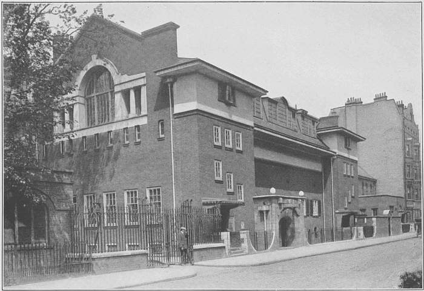 |
| THE PASSMORE EDWARDS SETTLEMENT HOUSE |
The entire purpose of such play centers is to rescue the children of the poor from the demoralization that results from being turned out to play after school hours in the streets and alleyways, where they are subjected to every kind of vile association and influence. The effects already noted by those in charge of the centers are improvement in manners, in thoughtfulness for the little ones, and in unselfishness; increase in regard for truth and honesty; the development of the instinct in all children to “make something”; the teaching that it is more enjoyable to play together in harmony than when obedience to a leader is refused. The success of this first experiment was so marked that gradually other centers 105 were started in different parts of London. Liberal sums of money were placed in the hands of Mrs. Ward, who enlisted the support of the County Council to the extent of securing facilities in the public school buildings. The work has so far progressed that the total attendance last year5 reached an aggregate of six hundred thousand. It is difficult to estimate from these figures how many children were affected, but, taking—at a guess—fifty times as the average attendance of each, this would mean that the lives of at least twelve thousand poor children were directly lifted up by this practical charity, and that as many more hard-working and anxious parents were indirectly benefited.
But Mrs. Ward will not be satisfied until the entire school population of London has been made to feel the influence of these play centers. Private beneficence, as she has plainly pointed out, can never solve the problem. “Private effort,” said she in a well-known letter to the London “Times,” “cannot deal with seven hundred and fifty thousand children, or even with three hundred thousand. If there is a serious and urgent need, if both the physique and the morale of our town children are largely at stake, and if private persons can only touch a fraction of the problem, what remains but to appeal to the public conscience?”
This is Mrs. Ward’s way of “doing things.” She does not appeal to public authority to accomplish an ideal without first finding a way and proving that it can be done. But, having clearly demonstrated her proposition at private expense, she does not rest content with the results so obtained, but pushes steadily forward toward the larger ideal, which can be realized only through public support.
But the recreation school is only a part of the work of the Passmore Edwards Settlement. During the daytime many of the rooms are used by the “Cripple Schools.” Children who are suffering from spinal diseases, heart trouble, and deformities of various kinds which prevent attendance at the regular schools are daily brought to the Settlement in ambulances. Here the little ones do all kinds of kindergarten work, while the older ones are instructed in drawing, sewing, bent-iron work, and other suitable tasks. As an outgrowth of this school twenty-three cripple schools are now in operation in London.
But it is in the evening that the Passmore Edwards Settlement is seen to best advantage. There is a large library containing some three thousand volumes, which are kept in active use. On Monday nights two tables in this room are the centers of busy groups. These represent the “coal club,” a businesslike charity of a very practical kind. The club buys a large quantity 107 of coal in the summer-time, when it can be obtained cheapest. As a large consumer, it usually gets every possible concession. The members of this club can buy the coal in small quantities as wanted, or as they are able to pay for it, at any time during the year, at the summer price of one shilling one and a half pence per hundred weight (twenty-seven cents). If bought during the winter in the ordinary way, they would have to pay perhaps five or six pence more—a very substantial saving. Thrift is encouraged by allowing members to deposit small sums in the summer to apply against their winter purchases. Last year the club transacted a business equal to about $4300.
“The Poor Man’s Lawyer” is another practical part of the work. Once each week free legal advice is given to all who ask it, and considerable money has been saved to people who, from ignorance and poverty, might have been imposed upon. The “Men’s Club,” the “Boys’ Club,” the “Factory Girls’ Club,” and the “Women’s Club” are all actively engaged in performing the usual functions of such organizations. There is a gymnasium where boys and girls, men and women, all have their regular turns of systematic instruction.
An orchestra of a dozen pieces and a choral society of forty members, together with a dramatic society, give opportunity for many to take part in numerous concerts and entertainments. A large hall is the scene nearly every night of some 108 kind of social amusement. The room is decorated with many pictures, all reproductions of the best works of art, while around the walls are placed busts in marble of Emerson, James Martineau, Dickens, Matthew Arnold, Benjamin Jowett, and Sir William Herschel—the gift of Mr. Passmore Edwards. There is a large stage for dramatic performances, drills, etc., with a piano and a good organ. There are tables where the members may play cards, smoke, or have light refreshments. On Sunday nights there are concerts or lectures. The whole atmosphere of the place is attractive to the men and women who frequent it. There is no obtrusive piety, no patronizing air, nothing to offend the pride of the poor man who values his self-esteem, yet all the influences of the place are elevating.
The whole spirit of the Settlement is expressed in these words, displayed in a framed notice at the entrance to the social hall:—
We believe that many changes in the conditions of life and labour are needed, and are coming to pass; but we believe also that men, without any change except in themselves and in their feelings towards one another, might make this world a better and a happier place.
Therefore, with the same sympathies but different experiences of life, we meet to exchange ideas and to discuss social questions, in the hope that, as we learn to know one another better, a feeling of fellowship may arise among us.
To these ends we have a Library, Clubs, Lectures, Classes, Entertainments, etc., and we endeavour to make the Settlement a centre where we may unite our several resources in a social and intellectual home.
In all this work Mrs. Humphry Ward is the inspiration, and a moving, active spirit. Her name stands next to that of the wealthy Duke of Bedford as the most liberal contributor. She is the Honorable Secretary of the Council, a member of the Finance Committee, president of the Women’s Club, etc. But these are only her official positions. Her directing hand is manifest in every branch of the work, and, from the warden down to the humblest member of the Girls’ Club, her name is accorded a respect amounting almost to reverence.
But, as with the play centers, Mrs. Ward is not content with the work of this one institution, splendid as it is. To her it is only the means of ascertaining the way. She feels that she is dealing with a great problem, and her method is to ascertain, first of all, the best solution, and then to use her large influence to induce others to take up the work. Thus the “New Brotherhood” of Robert Elsmere has not only continued to exist for a quarter of a century, but has in it the elements of growth which will make it a vital power in human society long after the real Robert Elsmere, in the person of Mrs. Ward, has ceased to be the directing force.
II
THE REAL ROBERT ELSMERE
In seeking to point out the real persons and places of Mrs. Ward’s novels, it is only fair to the author to begin with her own statement as to the story-teller’s method of procedure:—
An idea, a situation, is suggested to him by real life, he takes traits and peculiarities from this or that person whom he has known or seen, but that is all. When he comes to write ... the mere necessities of an imaginative effort oblige him to cut himself adrift from reality. His characters become to him the creatures of a dream, as vivid often as his waking life, but still a dream. And the only portraits he is drawing are portraits of phantoms, of which the germs were present in reality, but to which he himself has given voice, garb, and action.
| 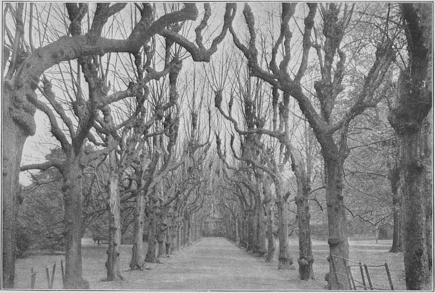 |
| THE LIME WALK |
It is my purpose to point out some of these “germs of reality” in Mrs. Ward’s work, relying for the essential facts, at least, upon information given me personally by the novelist herself. For Mrs. Ward does not hesitate to admit that certain characters were drawn from real life; but she insists upon a proper understanding of the exact sense in which this is true. Because “Miss Bretherton” was suggested by the career of Mary Anderson it does not follow that all that is said of the former is true of the latter. There 111 is a vast difference between a “suggestion” and a “portrait.” The thoughts and feelings or the personal characteristics of a certain individual may suggest a character who in his physical aspects, his environment, and the events of his career may be conceived as an individual totally different. Mrs. Ward’s novels contain no portraits and no history. But they abound in characters suggested by people whom she has known, in incidents and reminiscences of real life, and in vivid word-pictures of scenes which she has learned to love or of places with which she is personally familiar.
A study of the scenery of these novels properly begins in the County of Surrey. About four miles southwest of Godalming is Borough Farm, an old-fashioned brick house, which we reached by a drive over country that seemed in places almost like a desert—so wild and forsaken that one could scarcely believe it to be within a few miles of some of the busiest suburbs of London. But it has a splendid beauty of its own. The thick gorse with its golden blossoms everywhere waves a welcome. There are now and then great oaks to greet you, and graceful patches of white birch. And everywhere is a delightfully exhilarating sense of freedom and fresh air such as only this kind of open country can suggest. Here Mrs. Ward lived for seven summers, finding in the country round about some of the most interesting 112 of the scenes of her first novel, “Miss Bretherton,” and of “Robert Elsmere.”
“Miss Bretherton” was published in 1884. Mary Anderson was at that time the reigning success on the London stage, while Sarah Bernhardt, in Paris, was startling the world with an art of a totally different character. The beauty of the young American actress was the one subject of conversation. Was it her beauty that attracted the crowds to the theater, and that alone? Was she totally lacking in that consummate art which the great Frenchwoman admittedly possessed? These questions suggested to Mrs. Ward the theme of her first attempt at fiction. The beautiful Miss Bretherton is taken in hand by a party of friends representing the highest types of culture. In their effort to give her mind and body much-needed rest from the exactions of London society she is carried away on two notable excursions. The first is to Surrey, the real scene of this outing being a place near Borough Farm called “Forked Pond,” well known to Mrs. Ward and her family while residents at the farm. The other is to Oxford, where, after admiring the colleges, which brought many happy recollections to the gentlemen of the party, Miss Bretherton is taken to Nuneham Park, a beautiful place on the river where a small rustic bridge enhances the romantic character of the surroundings. This, of course, was familiar ground to the author, who 113 spent sixteen happy years in that vicinity as a resident of Oxford. Through the kindness of these friends, and particularly by the influence of Kendal, who becomes her lover, Miss Bretherton is made to take a new view of her art, and is transformed into an actress of real dramatic power.
Although a charming story, “Miss Bretherton” did not prove successful and had little part in making the reputation of the novelist, who is likely to be known as “the author of ‘Robert Elsmere,’” so long as her fame shall endure. For this great book created a sensation throughout the English-speaking world when it appeared, and aroused controversies which did not subside for many years.
The scenery of “Robert Elsmere” combines the Westmoreland which Mrs. Ward learned to love in her childhood with the Oxford of her girlhood and early married life, and the Surrey where so many pleasant summers were spent. Not wishing, for fear of recognition, to describe the country near Ambleside, with which she was most familiar, Mrs. Ward placed the scenes of the opening chapters in the neighboring valley of Long Sleddale, giving it the name of Long Whindale. Whinborough is the city of Kendal, and the village of Shanmoor is Kentmere. Burwood Farm, where the Leyburns lived, is a house far up the valley, which still “peeps through the trees” at the passer-by just as it did in the days 114 when Robert Elsmere first met the saintly Catherine there. A few hundred yards down the stream is a little stone church across the road from a small stone schoolhouse, and next to the school a gray stone vicarage, standing high above the little river, all three bearing the date 1863. At sight of this group of buildings one almost expects to catch a glimpse of the well-meaning but not over-wise Mrs. Thornburgh, sitting in the shade of the vicarage, awaiting the coming of old John Backhouse, the carrier, with the anxiously expected consignment of “airy and appetizing trifles” from the confectioner’s.
| 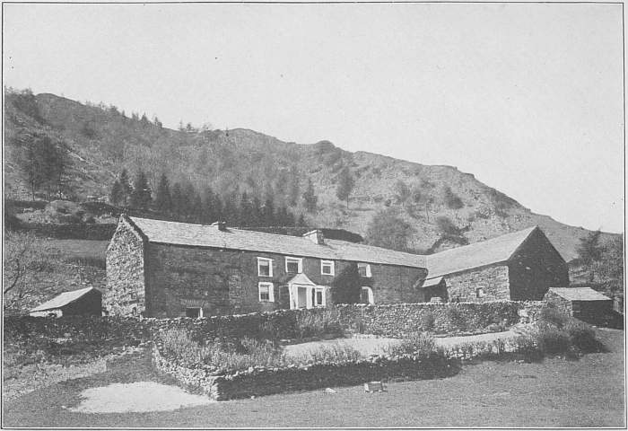 |
| COTTAGE OF “MARY BACKHOUSE” |
At the extreme end of the valley the road abruptly comes to an end. A stone bridge leads off to the left to a group of three small farms. In front no sign of human habitation meets the eye. The hills seem to come together, forming a kind of bowl, and there is no sound to break the stillness save the ripple of the river. It was to this lonely spot that Catherine was in the habit of walking, quite alone, to visit the dying Mary Backhouse. The house of John and Jim Backhouse where Mary died may still be seen. It is the oldest of the three farms above mentioned. A very small cottage, it is wedged between a stable on one side and a sort of barn or storehouse on the other, so that from the road before crossing the bridge it seems to be quite pretentious. The house dates back to 1670. 115 Mary Backhouse never existed except in imagination, but Mrs. Ward, upon seeing the photograph of the house, exclaimed with much satisfaction, “Yes, that is the very house where Mary Backhouse died.” So real to her are the events described in her novels that Mrs. Ward frequently refers to the scenes in this way. Behind the house is a very steep hill, covered with trees and rough stones. It was over this hill that Robert and Catherine walked on the night of Mary Backhouse’s death. Readers of “Robert Elsmere” will remember that poor Mary was the victim of a strange hallucination. On the night of Midsummer Day, one year before, she had seen the ghost or “bogle” of “Bleacliff Tarn.” To see the ghost was terror enough, but to be spoken to by it was the sign of death within a year. And Mary had both seen and been spoken to by the ghost. Her mind, so far as she had one, for she was really half-insane, was concentrated on the one horrible thought—that on Midsummer Night she must die. The night had at last arrived, and Catherine, true to her charitable impulses, was there to comfort the dying girl.
The weather was growing darker and stormier; the wind shook the house in gusts, and the farther shoulder of High Fell was almost hidden by the trailing rain-clouds. But Catherine feared nothing when a human soul was in need, and, 116 hoping to pacify the poor woman, volunteered to go out to the top of the Fell and over the very track of the ghost at the precise hour when she was supposed to walk, to prove that there was nothing near “but the dear old hills and the power of God.” As she opened the door of the kitchen, Catherine was surprised to find Robert Elsmere there, and together they set out, over the rough, stony path, facing the wind and rain as they climbed the distant fell-side. There Robert pleaded his love against Catherine’s stern sense of duty, and won.
When Robert and Catherine were married, they went to live at the Rectory of Murewell, in Surrey. This old house is at Peper Harow, three miles west of Godalming and a mile or so from Borough Farm. It was leased for one summer by Mrs. Ward. A plain, square house of stone, much discolored by the weather, it could hardly be called attractive in itself. But stepping back to the road, with its picturesque stone wall surmounted by foliage, and viewing the house as it appears from there, flanked on the left by a fine spreading elm and on the right by a tall, pointed fir and a cluster of oaks, with a little flower garden under the windows and the gracefully curving walk leading past the door in a semicircle stretching from gate to gate, the ugly house is transformed into a home of beauty, where Robert and Catherine, one can well imagine, 117 might have been quite happy and contented with their surroundings.
In the rear of the house is the garden, famous for its phloxes, the scene of many walks and family confidences. At the farther end is the gate where Langham poured out the story of his life in passionate speech, impelled by the equally passionate sympathy of Rose, only to recall himself a moment later, “the critic in him making the most bitter, remorseless mock of all these heroics and despairs the other self had been indulging in.”
Only a short walk from the Rectory is the little church of Peper Harow, the scene of Robert’s early clerical labors, and further on is the large and beautiful Peper Harow Park, the present home of Lord Middleton. This attractive park is the original of Squire Wendover’s, but the house itself is not described. The fine library owned by the Squire, which so delighted Robert Elsmere with its many rare books, was in reality the famous Bodleian Library of Oxford, with which the author became familiar very early in life.
Three characters from real life, each a man of marked individuality, stand out prominently in the pages of “Robert Elsmere.” These are Professor Mark Pattison, whose strong personality and scholarly attainments suggested Squire Wendover; Professor Thomas H. Green, the original of 118 Mr. Grey; and the melancholy Swiss philosopher, poet, and dreamer Amiel, who was the prototype of Langham.
The theme of the novel is the development of Robert Elsmere’s character and the gradual change of his religious views, brought about through many a bitter struggle. In this the principal influence was that of Roger Wendover, a typical English squire of large possessions, but, in addition, a scholar of the first rank, the possessor of a large library filled with rare and important volumes of history, philosophy, science, and religion, with the contents of which he was thoroughly familiar, and an author of two great books, one of which had stirred up a tremendous excitement in the circles of English religious thought.
The Pentateuch, the Prophets, the Gospels, St. Paul, Tradition, the Fathers, Protestantism and Justification by Faith, the Eighteenth Century, the Broad Church Movement, Anglican Theology—the Squire had his say about them all. And while the coolness and frankness of the method sent a shock of indignation and horror through the religious public, the subtle and caustic style, and the epigrams with which the book was strewn, forced both the religious and the irreligious public to read, whether they would or no. A storm of controversy rose round the volumes, and some of the keenest observers of English life had said at the time, and maintained since, that the publication of the book had made or marked an epoch.
| 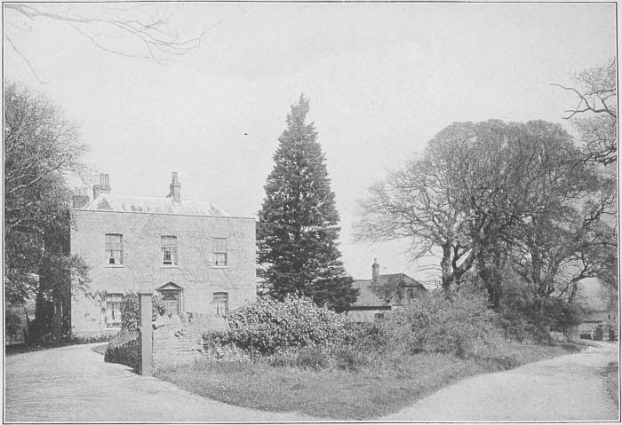 |
| THE RECTORY OF PEPER HAROW |
Against the influence of such a book, and more particularly against a growing intimacy with its author, Robert Elsmere felt himself as helpless as a child. The squire’s talk “was simply the outpouring of one of the richest, most skeptical, and most highly trained of minds on the subject of Christian origins.” His two books were, he said, merely an interlude in his life-work, which had been devoted to an “exhaustive examination of human records” in the preparation of a great History of Testimony which had required learning the Oriental languages and sifting and comparing the entire mass of existing records of classical antiquity—India, Persia, Egypt, and Judea—down to the Renaissance.
Reference has already been made to the influence of Professor Mark Pattison upon the early life of Mrs. Ward. To create the Squire she had only to imagine the house in the great park of Peper Harow, equipped with a library like the Bodleian, and inhabited by a person who might be otherwise like any English squire, but in mental equipment a duplicate to some extent of the Rector of Lincoln. Professor Pattison’s father was a strict evangelical. He gave his son a good education, and the boy early manifested a delight in literature and learning. He soon developed an independence of character, and, refusing to confine his reading to the prescribed books of orthodoxy, 120 delved into the classics extensively as well as the English literature of Pope, Addison, and Swift. He was graduated at Oxford in 1836, and took his M.A. degree in 1840. By this time he had abandoned the evangelical teachings of his youth, and with other young men came under the influence of Newman, in whose house he went to live. When Newman went into the Roman Catholic Church in 1845, Pattison was not so much shocked as others. Indeed, he confessed that he “might have dropped off to Rome himself in some moment of mental and physical depression or under pressure of some arguing convert.” But Pattison, who was now a Fellow at Lincoln College, was thoroughly devoted to his work and was fast gaining a great reputation, not only for his magnetic influence upon young men, but as one of the ablest of college tutors and lecturers. In 1861 he became Rector of Lincoln. He was an indefatigable writer, contributing to many magazines and to the “Encyclopædia Britannica.” An article on “Tendencies of Religious Thought in England, 1688-1750” aroused widespread comment. His literary work was marked by evidences of most painstaking research coupled with a profound scholarship and excellent judgment in the arrangement of his material. He devoted a lifetime to the preparation of a history of learning—a stupendous undertaking of which only a portion was ever 121 completed. He possessed a library said to be the largest private collection of his time in Oxford. It numbered fourteen thousand volumes, and was extraordinarily complete in books on the history of learning and philosophy in the sixteenth, seventeenth, and eighteenth centuries. Of Professor Pattison’s personality his biographer says:—
Under a singularly stiff and freezing manner to strangers and to those whom he disliked he concealed a most kindly nature, full of geniality and sympathy and a great love of congenial and especially of female society. But it was in his intercourse with his pupils and generally with those younger than himself that he was seen to most advantage. His conversation was marked by a delicate irony. His words were few and deliberate but pregnant with meaning and above all stimulating, and their effect was heightened by perhaps too frequent and, especially to undergraduates, somewhat embarrassing flashes of silence.
All these qualities are continually appearing in the Squire. But Professor Pattison’s own definition of a man of learning is the best description of Roger Wendover:—
Learning is a peculiar compound of memory, imagination, scientific habit, accurate observation, all concentrated through a prolonged period on the analysis of the remains of literature. The result of this sustained mental endeavor is not a book, but a man. It cannot be embodied in print; it consists of the living word.
The second in importance of the potent influences upon Robert Elsmere’s character was that of Henry Grey, a tutor of St. Anselm’s (Balliol College), Oxford. Very early in his Oxford career Elsmere was taken to hear a sermon by Mr. Grey, which made a deep impression on his mind. The substance of this sermon, which is briefly summarized in the novel, was taken from a volume of lay sermons by Professor Thomas Hill Green, entitled “The Witness of God.”
The whole basis of Grey’s thought was ardently idealist and Hegelian. He had broken with the popular Christianity, but for him God, consciousness, duty, were the only realities. None of the various forms of materialist thought escaped his challenge; no genuine utterance of the spiritual life of man but was sure of his sympathy. It was known that, after having prepared himself for the Christian ministry, he had remained a layman because it had become impossible to him to accept miracle; and it was evident that the commoner type of Churchmen regarded him as an antagonist all the more dangerous because he was so sympathetic.
All of this, like all the other references to Grey throughout the book, applies perfectly to Professor Green. He was the leading exponent at Oxford of the principles of Kant and Hegel, and attracted many followers. His simplicity, power, and earnestness commanded respect. He associated with his pupils on terms of friendly 123 intimacy, frequently taking some of them with him on his vacations. He was a man of singularly lofty character, and those who knew him were reminded of Wordsworth, whom he resembled in some ways.
When Elsmere is advised by his friend Newcome to solve all the problems of his doubt by trampling upon himself, flinging away his freedom, and stifling his intellect, these words of Henry Grey flash upon his mind:—
God is not wisely trusted when declared unintelligible. Such honor rooted in dishonor stands; such faith unfaithful makes us falsely true.
God is forever reason; and his communication, his revelation, is reason.
The words are taken from the same volume of Professor Green’s sermons.
The death of this dear friend of Robert Elsmere occurred in 1882, and is most touchingly described. An old Quaker aunt was sitting by his bedside:—
She was a beautiful old figure in her white cap and kerchief, and it seemed to please him to lie and look at her. “It’ll not be for long, Henry,” she said to him once. “I’m seventy-seven this spring. I shall come to thee soon.” He made no reply, and his silence seemed to disturb her.... “Thou’rt not doubting the Lord’s goodness, Henry?” she said to him, with the tears in her eyes. “No,” he said, “no, never. Only it seems to be his will; we should be certain of nothing—but 124 Himself! I ask no more.” I shall never forget the accent of these words; they were the breath of his inmost life.
To understand the third of the three characters from real life in “Robert Elsmere,” it is necessary to glance at the story of Henri Frédéric Amiel, a Swiss essayist, philosopher, and dreamer, who was born in 1821 and died in 1881, leaving as a legacy to his friends a “Journal Intime” covering the psychological observations, meditations, and inmost thoughts of thirty years. They represented a prodigious amount of labor, covering some seventeen thousand folio pages of manuscript. This extensive journal was translated into English by Mrs. Ward and published in 1883, five years before the date of “Robert Elsmere.” Her long and exhaustive study of the life of this extraordinary man as revealed by himself made a deep impression upon the mind of the novelist—so much so that she could not refrain from introducing him in the person of the morbid Langham. A brief glance at some of the peculiarities of Amiel will prove the best interpretation of Langham, without which the latter must always remain a mystery.
Amiel’s estimate of the value of his life-work was not a high one. “This Journal of mine,” he said, “represents the material of a good many volumes; what prodigious waste of thought, of strength. It will be useful to nobody, and even 125 for myself it has rather helped me to shirk life than to practice it.” And again, “Is everything I have produced taken together, my correspondence, these thousands of journal pages, my lectures, my articles, my poems, my notes of different kinds—anything better than withered leaves? To whom and to what have I been useful? Will my name survive me a single day? And will it ever mean anything to anybody? A life of no account! When it is all added up, nothing!”
“Amiel,” says Mrs. Ward, “might have been saved from despair by love and marriage, by paternity, by strenuous and successful literary production.”
Family life attracted him perpetually. “I cannot escape from the ideal of it,” he said. “A companion of my life, of my work, of my thoughts, of my hopes; within, a common worship—towards the world outside, kindness and beneficence; education to undertake; the thousand and one moral relations which develop around the first—all these ideas intoxicate me sometimes.”
But in vain. “Reality, the present, the irreparable, the necessary, repel and even terrify me. I have too much imagination, conscience, and penetration, and not enough character. The life of thought alone seems to me to have enough elasticity and immensity to be free enough from the irreparable; practical life makes me afraid. 126 I am distrustful of myself and of happiness because I know myself. The ideal poisons for me all imperfect possession, and I abhor all useless regrets and repentances.”
Mrs. Ward dramatized this strange individuality in the character of Langham. The love-scene in which Langham wins the hand of the beautiful Rose, followed by the all-night mental struggle in which he finally feels compelled to renounce all that he has gained, is almost tragic in its intensity.
Poor Langham, with the prize fairly within his grasp, found that he lacked the courage to retain it. And so the morning after the proposal, instead of the pleasantly anticipated call from her accepted lover, the unfortunate Rose was shocked to receive a pessimistic letter announcing that the engagement had not survived the night. To the casual reader it would seem that such a man as Langham would be impossible. But that Amiel was just such a person his elaborate journal fully reveals. And Professor Mark Pattison has given his testimony that Amiel was not alone in his experiences, for six months after the journal was published he wrote, “I can vouch that there is in existence at least one other soul which has lived through the same struggles mental and moral as Amiel.”
Among the very large number of persons who come upon the stage in the action of this remarkable 127 book, several besides the Squire, Grey, and Langham may have been suggested by persons whom the author knew. But the prototypes of these three are the only ones who really enter, in a vital way, into the actual construction of the novel. “But who was the real Elsmere?” one naturally asks. Many attempts have been made to identify this good preacher or that worthy reformer with the famous character, much to the annoyance of the author, who really created Elsmere out of the influences already described. The real Elsmere would be obviously one whose religious views were moulded by Mark Pattison and Thomas H. Green, and one who was profoundly interested in, if not influenced by, the strange self-distrust of Amiel. The real Elsmere would be also one whose religious convictions led inevitably to the desire to perform some practical service to mankind. Such an Elsmere exists in the person of Mrs. Ward herself, who is to-day regarded by the workers and associates of the Passmore Edwards Settlement, in Tavistock Place, London, with very much the same love and gratitude as Elsmere won from the people of Elgood Street. For this beneficent institution was a direct result of the novel, and owes its existence very largely to Mrs. Ward’s energetic and influential efforts.
III
OTHER PEOPLE AND SCENERY
“The History of David Grieve,” Mrs. Ward’s third novel, is by many considered, next to “Robert Elsmere,” her greatest achievement. David and his sister Louie are the orphan children of a sturdy and high-minded Englishman whose wife was a French woman of somewhat doubtful character. Their development from early childhood to full maturity is traced with a power of psychological analysis seldom equaled. Both are intensely human and fall easy prey to the temptations of their environment, but in the end David overcomes the evil influences, while poor Louie, inheriting more of her mother’s temperament, goes to her death in poverty and disgrace.
The most attractive part of the book is the opening, where the two children are seen roaming the hills of the wild moorland country of their birth. This is the Kinderscout region, in Derbyshire, something over twenty miles southeast of Manchester.
The visitor must take the train to Hayfield, called Clough End in the novel, and then, if he is fortunate enough to have permission from the owner, may drive a distance of four or five miles to what is now called Upper House, the 129 country home of a wealthy merchant of Manchester. This was originally known as Marriott’s Farm, and for several hundred years was owned by a family of that name. Here Mrs. Ward spent two days, when the entire house consisted of what is now the right wing. She walked over the moors and along the top of the Kinderscout with Mr. Marriott as her guide, and thus obtained the knowledge for the most perfect description of pastoral life to be found in any of her novels.
Needham’s Farm, the home of David and Louie, is the only other farm in the neighborhood. It is now known as the Lower House, and is owned by the same Manchester gentleman, but is leased to a family named Needham, who have occupied it for many years. It looks now just as it did when Mrs. Ward described it.
The “Owd Smithy,” where the prayer-meeting was held and Louie wickedly played the ghost of Jenny Crum, is now only remotely suggested by a heap of rocks bearing little resemblance to a building of any kind. Huge mill-stones, partly embedded in the earth, are scattered about here and there. The Downfall, which, when the water is coming over, is visible for miles around, is ordinarily a bare, bleak pile of rocks, for it is usually nearly if not quite dry. But after a heavy rain the water comes over in large volume, and, if the wind is strong, is blown back, presenting a most curious spectacle of a 130 cascade seeming to disappear in the air when halfway to the bottom. Not far away is the Mermaid’s Pool, haunted by the ghost of Jenny Crum. There is a real ghost story connected with this pool, which doubtless formed the basis of Mrs. Ward’s legend. An old farmer named Tom Heys was much troubled by a ghost, of which he could not rid himself. He once shot at it, but without effect except that the bullet-mark is in the old house even now. An old woman once saw the ghost while shearing sheep. She threw the tongs at it. Instantly the room was filled with flying fleece, while the woman’s clothes were cut to pieces and fell off her body. These were some of the troublesome pranks played by the ghost. At length the farmer discovered, somewhere on his place, an old skull, which doubtless belonged to His Ghostship, and carried it to the Mermaid’s Pool, where he deposited it
| “To stay as long as holly’s green, And rocks on Kinderscout are seen.” |
This effectually disposed of the ghost so far as he was concerned, but the spirit still hovers over the Mermaid’s Pool.
| 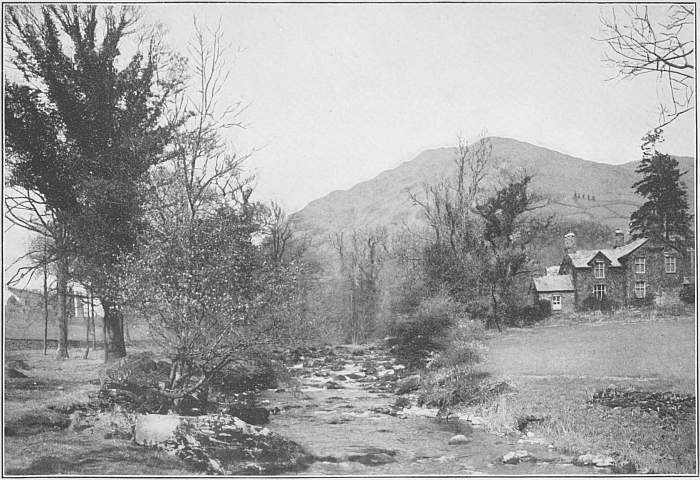 |
| THE ROTHAY AND NAB SCAR |
Market Place, Manchester, where we find David after his flight from the old farm, looks to-day very much the same. Half Street, however, on the east of the cathedral, has disappeared. 131 Purcell’s shop in this street was described from a quaint little book-shop which actually existed at the time.
The Parisian scenes of “David Grieve,” the Louvre, the Boulevards, the Latin Quarter, Fontainebleau, Saint-Germain, and Barbizon, are all too well known to need mention here. The final scenes of the novel, where David’s wife is brought after the beginning of her fatal illness, are in one of the most beautiful localities in the English Lake District. Lucy’s house is supposed to be on the right bank of the river. The house is imaginary (the one on the left bank having no connection with the story), but the location is exactly described. This is just above Pelter Bridge, a mile north of Ambleside, where the river Rothay combines with the adjacent hills to make one of those fascinating scenes for which Westmoreland is famous. Nab Scar looms up before us, and off to the left is Loughrigg. A stroll along the river brings one to the little bridge at the outlet of Rydal Water, where David walked for quiet meditation during his wife’s illness; and still farther northward the larch plantations on the side of Silver How add their touch of beauty to the landscape. This entire region has always been dear to Mrs. Ward’s heart from the associations of her girlhood, and, if Lucy must die, she could think of no more lovely spot for the last sad scenes.
One character in “David Grieve” is drawn from real life—Élise Delaunay, the French girl with whom David falls in love on his first visit to Paris. This is, in some respects, a portrait of Marie Bashkirtseff, a young native of Russia, whose brief career as an artist attracted much notice. Marie was born of wealthy parents in 1860. When she was only ten years old her mother quarreled with her husband and left him, taking the children with her. Marie returned to her father, with whom she traveled extensively. A born artist, the journey through Italy created in her a new and thrilling interest. She resolved to devote her life to art, and in 1877 entered the school of Julian in Paris. She soon showed astonishing capacity, and Julian assured her that her draughtsmanship was remarkable. One of her paintings, “Le Meeting,” was exhibited in the Salon of 1884, and attracted much notice. Reproductions were made in all the leading papers, and it was finally bought by the cousin of the Czar, the Grand Duke Constantino Constantinowitch, a distinguished connoisseur and himself a painter. This picture represents half a dozen street gamins of the ordinary Parisian type holding a conference in the street. Their faces exhibit all the seriousness of a group of financiers consulting upon some project of vast importance.
The peculiarity of Marie’s character is set forth by her biographer in words which enable 133 the reader of “David Grieve” instantly to recognize Élise Delaunay:—
She never wholly yields herself up to any fixed rule of conduct, or even passion, being swayed this way or that by the intense impressionability of her nature. She herself recognized this anomaly in the remark, “My life can’t endure; I have a deal too much of some things and a deal too little of others, and a character not made to last.” The very intensity of her desire to see life at all points seems to defeat itself, and she cannot help stealing side glances at ambition during the most romantic tête-à-tête with a lover, or being tortured by visions of unsatisfied love when art should have engrossed all her faculties.
In the last year of her life Marie achieved an admiration for Bastien-Lepage which, her biographer says, “has a suspicious flavour of love about it. It is the strongest, sweetest, most impassioned feeling of her existence.” She died in 1884, at the early age of twenty-four, assured by Bastien-Lepage that no other woman had ever accomplished so much at her age.
“Marcella” and “Sir George Tressady” are novels of English social and political life—a field in which Mrs. Ward is peculiarly at home, and in which she has no superior. Marcella, who in her final development became one of the most beautiful women of all Mrs. Ward’s characters, was suggested by the personality of an intimate 134 friend, whose name need not be mentioned. Mellor Park, the home of Marcella, is drawn from Hampden House in Buckinghamshire. It is a famous old house, some centuries old, now the country-seat of the Earl of Buckinghamshire, and, with its well-kept gardens and spacious park, is unusually attractive. Twenty years ago, however, it was in a state of neglect. The road leading to it was full of underbrush, the garden was wholly uncared-for, and the house itself much in need of repair. This is the state in which Mrs. Ward describes it—and she knew it well, for she had leased it for a season and made it her summer home. The murder of the gamekeeper, described as taking place near Mellor Park, really happened at Stocks, Mrs. Ward’s present home near Tring.
The village of Ferth, where Sir George Tressady had his home and owned the collieries, is a mining village ten miles from Crewe, known as “Talk o’ the Hill.” The ugly black house to which Tressady brought home his young wife was described from an actual house which the author visited.
“Helbeck of Bannisdale” was written while the author was living at Levens Hall, the handsome country home of Captain Bagot, M.P., which Mrs. Ward leased for a summer. It is a few miles south of Kendal, in Westmoreland, and just on the border of the “Peat Moss” 135 country. The old hall dates back to 1170, the original deed now in possession of Captain Bagot bearing that date. The dining-room has an inlaid design over the mantel with the date 1586. The entrance-hall, dining-room, and drawing-room contain many antique relics. But the most remarkable feature of Levens is the garden, containing about two hundred yews trained and trimmed into every conceivable shape. There is an “umbrella” which has required two hundred years of constant care to reach its present size and shape; a British lion, with perfect coronet; a peacock with correctly formed neck and tail feathers; a barrister’s wig, a kaffir’s hut, and so on through a long list of curious shapes. In front of the house the river Kent, with a bridge of two arches, makes a picturesque scene. This is the “bridge over the Bannisdale River” which marked the end of Laura’s drive with Mason, where at sight of Helbeck the young man made his sudden and unceremonious departure. A spacious park skirts the river, through which runs a grassy road bounded by splendid oaks intertwining their branches high above. Following this path we reached a foot-bridge barely wide enough for one person to cross, on the park end of which is a rough platform apparently built for fishermen. Here Laura kept her clandestine appointment with Mason, and on her way home was mistaken for the ghost of the 136 “Bannisdale Lady,” much to the terror of a poor old man who chanced to be passing, and not a little to her own subsequent embarrassment. A little beyond is the deep pool where Laura was drowned.
The exterior of Bannisdale Hall is not Levens, but Sizergh Castle, some two or three miles nearer Kendal. At the time of the story a Catholic family of Stricklands owned the place, but, like Helbeck, were gradually selling parts of their property, and dealers from London and elsewhere were constantly coming to carry off furniture or paintings. The family finally lost the property, and it was acquired by a distant relative, Sir Gerald Strickland, who was recently appointed Governor of New South Wales, and who now owns but does not occupy it.
The little chapel, high up on a hill, where Laura was buried, is at Cartmel Fell, in Northern Lancashire. A quaint little chapel five or six hundred years old, it is well worth a visit.
The scenes of “Eleanor” are in Italy, and here Mrs. Ward fairly revels in descriptions of “Italy, the beloved and beautiful.” The opening chapters have their setting in the Villa Barberini, on the ridge of the Alban Hills, south of Rome, from the balcony of which the dome of St. Peter’s can be seen in the distance, dominating the landscape by day and seeming at night to be the one 137 thing which has definite form and identity. There is a visit to Nemi and Egeria’s Spring, after which the scene changes to the valley of the Paglia, beyond the hill town of Orvieto, “a valley with wooded hills on either side, of a bluish-green color, checkered with hill towns and slim campaniles and winding roads; and, binding it all in one, the loops and reaches of a full brown river.”
Torre Amiata—the real name of which is Torre Alfina—is a magnificent castle, “a place of remote and enchanting beauty.” Through some Italian friends, Mrs. Ward met the agent of this great estate, who put his house at her disposal for a season. This happy opportunity gave her the intimate acquaintance with the surrounding country which she used with such excellent skill in “Eleanor,” and enabled her, among other things, to discover the ruined convent and chapel which formed the dismal retreat of Lucy and Eleanor in their strange flight from Mr. Manisty.
“Lady Rose’s Daughter,” which followed “Eleanor,” likewise reflects the author’s love of Italy. It was written, in part at least, in the beautiful villa at Cadenabbia, on Lake Como, from which a view of surpassing loveliness meets the eye in every direction. Mrs. Ward never tires of it, and in her leisure moments while there 138 found great delight in reproducing in her sketch-book the charming colors of a landscape which can scarcely be equaled in any other part of the world.
The setting of the novel in its earlier chapters is London. But when Julie Le Breton, worn out by mental anguish, the result of experiences which had nearly ruined her life, could be rescued and brought back to life only by a quiet rest amid pleasant surroundings, Lake Como was the place selected by her kind-hearted little friend the duchess. As her strength gradually returned she daily walked over the hill to the path that led to the woods overhanging the Villa Carlotta.
Such a path! To the left hand, and, as it seemed, steeply beneath her feet, all earth and heaven—the wide lake, the purple mountains, the glories of a flaming sky. On the calm spaces of water lay a shimmer of crimson and gold, repeating the noble splendor of the clouds.... To her right a green hillside—each blade of grass, each flower, each tuft of heath, enskied, transfigured by the broad light that poured across it from the hidden west. And on the very hilltop a few scattered olives, peaches, and wild cherries scrawled upon the blue, their bare, leaning stems, their pearly whites, their golden pinks and feathery gray, all in a glory of sunset that made of them things enchanted, aerial, fantastical, like a dance of Botticelli angels on the height.
| 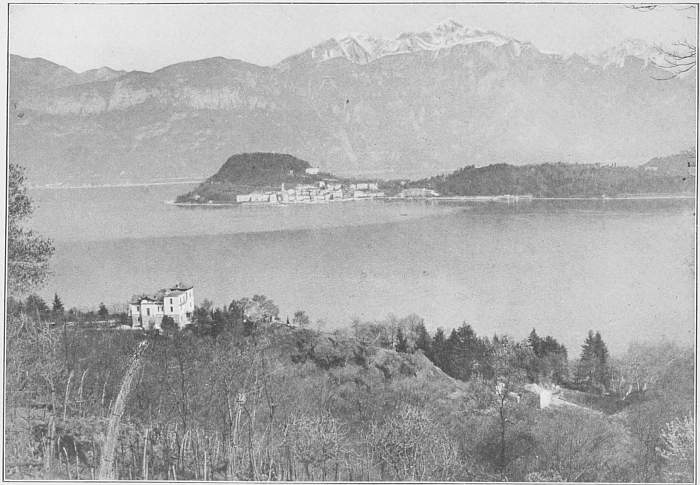 |
| LAKE COMO |
The story opens with a graphic description of Lady Henry’s salon—frequented by the most 139 prominent people in London—where the chief attraction was not the great lady herself, but her maid companion, Julie Le Breton. Everywhere Julie was met with smiles and evidence of eager interest. She knew every one, and “her rule appeared to be at once absolute and welcome.” But one evening Lady Henry was ill and gave orders that the guests be turned away with her apologies. As the carriages drove up, one by one, the footman rehearsed Lady Henry’s excuses. But a group of men soon assembled in the inner vestibule, and Julie felt impelled to invite them into the library, where they were implored not to make any noise. The distinguished frequenters of Lady Henry’s salon were all there. Coffee was served, and, stimulated by the blazing fire and a sense of excitement due to the novelty of the situation, an animated conversation sprang up, which continued till midnight and was at last suddenly interrupted by the unexpected appearance of Lady Henry herself.
Lady Henry’s awakening led to Julie’s dismissal. But her friends did not desert her. A little cottage was found, where Julie was soon comfortably installed.
This much of the story—and little if any more—was suggested by the life of Julie de Lespinasse, a Frenchwoman who figured brilliantly in the Paris society of the middle of the eighteenth century.
In 1754 the Marquise du Deffand was one of the famous women of Paris. Her quick intelligence and a great reputation for wit had brought to her drawing-room the famous authors, philosophers, and learned men of the day. But the great lady, now nearly sixty, was entirely blind and subject to a “chronic weariness that devoured her.” She sought a remedy in the society of an extraordinarily attractive young woman, of somewhat doubtful parentage, named Julie de Lespinasse, whom she took into her home as a companion. Julie became a great social success. For ten years she remained with Madame du Deffand, when a bitter quarrel separated them. Julie’s friends combined to assure her an income and a home, and she was soon established almost opposite the house of her former patron. The Maréchale de Luxembourg presented her with a complete suite of furniture. Turgot, the famous Minister of Louis XVI, and President Hénault were among those who provided funds. D’Alembert, distinguished as a philosopher, author, and geometrician, who was the cause of the quarrel with the marquise, became Julie’s most intimate friend. When she founded her own salon, his official patronage and constant presence assured its success. Her success was, in fact, astonishingly rapid. “In the space of a few months,” says her biographer, the Marquis de Ségur, “the modest room with 141 the crimson blinds was nightly filled, between the hours of six and ten, by a crowd of chosen visitors, courtiers and men of letters, soldiers and churchmen, ambassadors and great ladies, ... each and all gayly jostling elbows as they struggled up the narrow wooden stairs, unregretting, and forgetting in the ardor of their talk, the richest houses in Paris, their suppers and balls, the opera, and the futile lures of the grand world.”
The remarkable career and unique personality of this famous woman furnished the suggestion for Julie Le Breton. But beyond this the resemblance is slight. The subsequent history of the Frenchwoman has no relation to the story of “Lady Rose’s Daughter,” and the personality of the two women differs in many respects.
“The Marriage of William Ashe” is like “Lady Rose’s Daughter” in two important respects: it is a story in which the author reveals an extraordinary knowledge of English politics and familiarity with the social life of the upper classes, and it is one in which a story of real life plays an important part. Indeed, there is far more of real life in this novel than in any other the author has written. William Ashe and his frivolous and erratic wife Kitty are portraits, considerably modified, it is true, but nevertheless real, of William and Caroline Lamb. William 142 Lamb—known to posterity as Lord Melbourne—did not become a distinguished statesman until after he had entered the House of Lords. For twenty-five years he had been a member of the House of Commons, of little influence and almost unknown to the country at large. But soon after the death of George IV he entered the cabinet of Earl Grey as Home Secretary. This was in 1830. Less than four years later he rose suddenly to the highest position in the state. As Premier it was his unique privilege to instruct the young Queen, Victoria, in the duties of her high office—a task which he executed with commendable tact and skill. It is the inconsequential William Lamb of the House of Commons, and not the exalted Lord Melbourne, whom Mrs. Ward had in mind in portraying William Ashe; and it was more particularly his young wife, Caroline Lamb, who furnished the real motive of the novel.
“Lady Caroline,” we are told by Lord Melbourne’s biographer, Dr. Dunckley, “became the mistress of many accomplishments. She acquired French and Latin, and had the further courage, Mr. Torrens tells us, to undertake the recital of an ode of Sappho. She could draw and paint, and had the instinct of caricature. Her mind was brimming with romance, and, regardless of conventionality, she followed her own tastes in everything. In conversation she was both vivacious 143 and witty.” Such was Lady Caroline Ponsonby when she married William Lamb. The marriage proved an extremely unhappy one. Lady Caroline’s whole life was a series of flirtations—deliberately planned, as a matter of fact, and yet entered upon with such mad rushes of passion as to seem merely the result of some irresistible impulse. A son was born to the couple, but he brought no joy, for as he grew up he developed an infirmity of intellect amounting almost to imbecility. The life of the young people was “an incessant round of frivolous dissipation.” The after-supper revels often lasted till daybreak. But this brought no happiness, and both husband and wife came to realize that marriage had been, for them, a troublesome affair. About this time Lord Byron appeared on the scene. “Childe Harold” had brought him sudden fame. He had traveled in the East, was the hero of many escapades, had been sufficiently wicked to win the admiration of certain ladies of romantic tendencies, and altogether created quite a furor through the peculiar charms of his handsome face and dashing ways. He sought and obtained an introduction to Lady Caroline. He came to call the next day when she was alone, and for the next nine months almost lived at Melbourne House. They called each other by endearing names, and exchanged passionate verses. They were constantly together, and the intimacy caused much scandalous comment. It 144 lasted until Byron became tired of it all, and announced his intention of marrying. The marriage to a cousin of Lady Caroline aroused the fierce jealousy of the latter, who proceeded to perform a little melodrama of her own, first trying to jump out of a window and then stabbing herself—not so deep that it would hurt—with a knife.
Such escapades could have but one result. There came a separation, of course; but some traces of the early love remained in both, and when Lady Caroline was dying, William Lamb was summoned from Ireland. The final parting was not without tender affection on both sides, and William felt his loss deeply.
In this brief sketch the reader of Mrs. Ward’s novel will recognize Kitty Ashe in every line. The portraiture is very close. Cliffe takes the place of Lord Byron without being made to resemble him. But he serves to reveal the weakness of Kitty’s character. Even Kitty’s mischievous work in writing a book, which came near ruining her husband’s career, was an episode in the life of Caroline Lamb. She wrote a novel in which Byron and herself were the principal characters, and their escapades were paraded before the world in a thin disguise which deceived nobody.
| 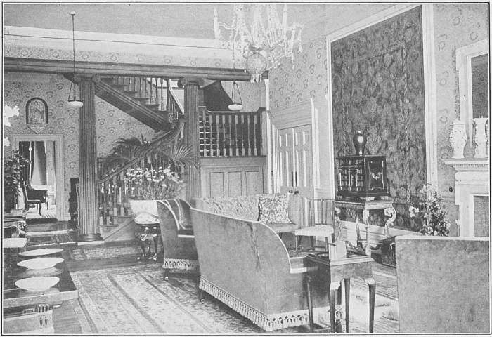 |
| STOCKS |
Of Mrs. Ward’s later books there is little to say, so far as scenes and “originals” are concerned. 145 In “Fenwick’s Career” the little cottage where the artist and his wife lived was in reality the summer home of Mrs. Ward’s daughter Dorothy. It stands on the slope of a hill near the Langdale Pikes in Westmoreland, commanding a view of surpassing loveliness.
In the “Testing of Diana Mallory” the scenery is all taken from the country near Stocks, the summer home of the novelist.
In “Daphne,” or “Marriage à la Mode,” Mount Vernon, Washington, Niagara Falls, and an imaginary English estate supply the necessary scenery, and these are not described with real interest, for the author, contrary to her usual custom, is here writing with a fixed didactic purpose. But a chapter incidentally thrown in reflects the novelist’s impressions of a visit to the White House as the guest of President Roosevelt—an experience which interested her greatly. In “the tall, black-haired man with the meditative eye, the equal, social or intellectual, of any Foreign Minister that Europe might pit against him, or any diplomat that might be sent to handle him,” it is easy to recognize Mr. Root. Secretary Garfield is “this younger man, sparely built, with the sane handsome face—son of a famous father, modest, amiable, efficient.” Secretary Taft, with whom, apparently, the distinguished author did not really become acquainted, is lightly referred to as “this other 146 of huge bulk and height, the hope of a party, smiling already a Presidential smile as he passed.”
It has been said of this book that it does an injustice to America. But such was assuredly far from the author’s intent. Mrs. Ward, who is one of the keenest observers of English and European public men, pays a high compliment in the remark that “America need make no excuses whatever for her best men.... She has evolved the leaders she wants, and Europe has nothing to teach them.” She is attacking the laxity of the divorce laws in certain American States, and in doing so is actuated by motives which every high-minded American must applaud. The English general who berates American institutions is held up to ridicule, and the most agreeable woman in the book—perhaps the only agreeable one—is an American. Daphne, through whom the author condemns the evil, is not a typical American girl, but, with evident intent to avoid offense, is made the daughter of a foreigner.
As a matter of fact, Mrs. Ward’s feelings toward America are of the kindliest nature, and, whatever may be said of the merits of “Marriage à la Mode” as a work of fiction, in condemning an abuse which nobody can defend she has performed a real service.
5 1908.
VI
A TOUR OF THE ITALIAN LAKES
VI
A TOUR OF THE ITALIAN LAKES
We caught our first glimpse of Maggiore from a window in Stresa, late in the afternoon of a charming day in early spring. In spite of the lateness of the hour, with all the enthusiasm of amateurs, we proceeded to make a photograph of the charming scene. Ruskin was right when he declared Maggiore to be the most beautiful of all the Italian lakes;—at least, we felt willing to admit this, even though we had not yet seen the others. In the foreground were the green lawns and white paths of a well-kept park, skirting the lake; then a wide stretch of water, roughened by the wind so that its surface, usually smooth, was now dotted with whitecaps, dancing and sparkling in the afternoon sun; across the water to the left, the village of Pallanza, pushing itself far out into the lake, and thrown into strong relief by the high mountains at its back; far away in the distance, the white-capped summit of some Alpine range; and above it all, the most beautiful of blue Italian skies.
We gazed long upon the scene, until the twilight began to deepen. Soon two figures appeared at the entrance to the park, one a woman 150 in a green velvet gown, the other a man in a long flowing mantle of the style peculiar to Italy. They seemed in earnest conversation, now approaching each other with vigorous but graceful gestures, now falling back a step or two and again advancing. The man would throw his cloak over his left shoulder; then, when his earnestness caused it to slip away, he would throw it back again, repeating the movement over and over. We could almost fancy overhearing Lorenzo say:—
| “In such a night Did Jessica steal from the wealthy Jew, And with an unthrift love did run from Venice As far as Belmont”; |
and hearing Jessica reply:—
| “And in such a night Did young Lorenzo swear he loved her well, Stealing her soul with many vows of faith, And ne’er a true one.” |
The little pantomime seemed all that was needed to complete the romance of the scene, while the gathering twilight lent its aid.
| 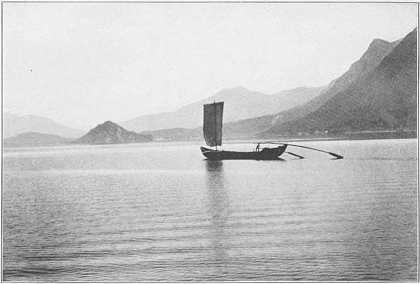 |
| LAKE MAGGIORE, ITALY |
The Lago di Maggiore, known to the Romans as Lacus Verbanus, is the westernmost as well as the largest of three lovely lakes which lie on the southern slope of the Alps, in an area not greater than that of the State of Rhode Island. The Lago di Como, or Lacus Larius, is the easternmost of the group, while the Lago di 151 Lugano, smaller, but not less beautiful, lies between the other two.
There is a peculiar delicacy of beauty about these lakes like an exquisitely tinted rosebud or the perfume of apple blossoms. The ruggedness of aspect common to most mountain lakes is here lost in the soft luxuriance of the green shores, the sparkling waters, and the rich blue sky. The hills are lined with terraces of green vineyards, interspersed with the pink of peach and almond blossoms. Camellias and azaleas brighten the gardens. Mulberry trees, olives, and cypresses, mingling with their sturdy Northern companions, the spruces and pines, cast their varied foliage against the brown of the near-by mountains. In the distance the snow-clad peaks of the Alps interpose their white mantles between the blue of the sky and the warmer tones of the hillsides, while here and there picturesque villages stand out on projecting promontories to lend an additional gleam of whiteness to the landscape.
Mingling with the charm of all this natural beauty and intensifying it are the atmosphere of poetry and romance which one instinctively feels, and the more tangible associations with history, literature, science, art, and architecture which are constantly suggested as one makes the tour of the lakes.
In the morning we found our places on the 152 upper deck of the little steamer that makes a zigzag journey through Maggiore. No sooner had the boat started than we heard sweet strains of music and a chorus of well-modulated male voices. The night before we had had a miniature play for our special benefit. Can it be possible that now we are to have Italian opera? They were only a party of native excursionists, but we were genuinely sorry when they disembarked at the next landing.
Leaving Stresa, famous as the home of Cavour, when that great statesman was planning the creation of a united Italy, we soon came in sight of Isola Bella. As it lay there in the bright sunlight, its green terraces and tropical foliage, its white towers and arcaded walls reflected in the blue waters of the lake, the snowy mountains forming a distant background and a cloudless blue sky surmounting the whole, we thought it beautiful. But in this, it seems, our taste was at fault, and while admiring we ought to have been criticizing. It was like spending an evening with genuine enjoyment at the theater, only to find out the next morning from the critic of the daily newspaper that the play was poor, the acting only ordinary, and the applause merely an act of generosity. Southey wrote of it, “Isola Bella is at once the most costly and the most absurd effort of bad taste that has ever been produced by wealth and extravagance.” A more 153 recent English writer condemns its “monstrous artificialities.” He declares that “the gardens are a triumph of bad taste,” and that “artificial grottoes, bristling with shells, terrible pieces of hewn stone, which it would be an offense to sculpture to term statuary, offend the eye at every turn.” Another says that it is “like a Périgord pie, stuck all over with the heads of woodcocks and partridges,” while some one else thinks it “worthy the taste of a confectioner.”
On the other hand, our own distinguished novelist, Mrs. Edith Wharton, found much to be admired:—
The palace has ... one feature of peculiar interest to the student of villa architecture, namely, the beautiful series of rooms in the south basement, opening on the gardens, and decorated with the most exquisite ornamentation of pebble-work and sea-shells, mingled with delicate-tinted stucco. These low-vaulted rooms, with marble floors, grotto-like walls, and fountains dripping into fluted conches, are like a poet’s notion of some twilight refuge from summer heats, where the languid green air has the coolness of water: even the fantastic consoles, tables, and benches, in which cool glimmering mosaics are combined with carved wood and stucco painted in faint greens and rose-tints, might have been made of mother-of-pearl, coral, and seaweed for the adornment of some submarine palace.
It was the fashion to admire the island before it became the rule to condemn its artificiality. 154 Bishop Burnet visited Maggiore in 1685, fourteen years after the Count Vitaliano Borromeo had transformed the island from a barren slate rock into a costly summer residence. He thought it “one of the loveliest spots of ground in the world,” and wrote, “there is nothing in all Italy that can be compared with it.” At a much later time, Lord Lytton allowed himself to rise to the heights of enthusiasm:—
| “O fairy island of a fairy sea, Wherein Calypso might have spelled the Greek, Or Flora piled her fragrant treasury, Culled from each shore her zephyr’s wings could seek,— From rocks where aloes blow. “Tier upon tier, Hesperian fruits arise: The hanging bowers of this soft Babylon; An India mellows in the Lombard skies, And changelings, stolen from the Lybian sun, Smile to yon Alps of snow.” |
| 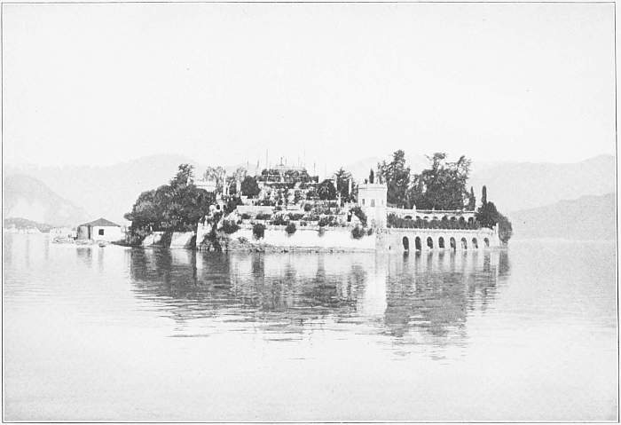 |
| ISOLA BELLA, LAKE MAGGIORE |
The charge of artificiality must be admitted. A bare rock cannot be transformed into a thing of beauty and escape the charge. The ten terraces are a series of walls, built in the form of a pyramid and covered with earth, transported from the mainland at great expense. Orange and lemon trees, amid a profusion of tropical foliage, are thus made to wave their fragrant branches in the face of Alpine snows. Is not this worth while? The truth is that Lake Maggiore 155 is so rich in the kind of beauty which the hand of Nature has provided that the creations of man—the villas, the gardens, the vineyards, the villages nestling close to the water’s edge, and the pilgrimage churches high up on the mountain-sides—seem only to accentuate the charm.
The Isola dei Pescatori, or Island of the Fishermen, lying near the “Beautiful Island,” forms a striking contrast. If distance is needed to lend enchantment and conceal the lavish expenditure of wealth on the Isola Bella, it is needed still more to hide the squalor and avoid the odor of the poor fishermen’s island. Yet the latter, seen from the steamer’s deck, is far more picturesque than its more pretentious neighbor. The third of the Borromean group is known as the Isola Madre. It has seven terraces, surmounted by an unused villa. Its gardens are full of roses, camellias, and all kinds of beautiful plants, lemons, oranges, myrtle, magnolia, and semi-tropical trees in great profusion. Less popular than Isola Bella, it is considered by many far more attractive.
Two villages lying farther south on the western shore of the lake are worthy of at least passing mention:—Belgirate and Arona. The former was the home, in the late years of his life, of the great master of Italian prose, Manzoni, whose novel, “I Promessi Sposi,” was thought by Scott to be the finest ever written. He was a man of 156 the people, greatly beloved by his countrymen for his benevolence, tender sympathy, and warmth of affection. Arona was the home of the patron saint of the Italian lakes, Carlo Borromeo. A colossal statue, sixty-six feet high on a pedestal of forty feet, built to his memory in 1697, is one of the sights of the region. St. Charles was born in 1537. At the age of twenty-three he was made a cardinal by his uncle, Pope Pius IV. Inheriting great wealth, he devoted his revenues to charity, sometimes living on bread and water and sleeping on straw. Traveling as a missionary, he visited the remotest villages and almost inaccessible shepherds’ huts high up on the mountains. He is best remembered for his self-sacrifice and heroic devotion to the people in the great plague at Milan in 1575. But the great saint was a hater of heretics and caused many of them to be put to death. Nor was he without enemies among those of his own faith. A Franciscan monk once fired upon him, but he escaped as if by miracle, the bullet glancing from the heavy gold embroidery of his cope—a demonstration that gold lace is not always a wholly superfluous decoration.
Our little steamer zigzagged back and forth, stopping at many villages, until finally Luino was reached. This busy little town was the birthplace of Bernardino Luini, the illustrious disciple of Leonardo da Vinci, whose frescoes 157 adorn many of the Italian churches. It was also the scene of one of Garibaldi’s brave exploits, though an unsuccessful one. Here we left the steamer for a short ride by tramway to Ponte Tresa, on Lake Lugano, where another little boat was waiting. Although usually regarded as one of the Italian lakes, the greater portion of Lugano is in Swiss territory. Most tourists make it the gateway from the north into Italy, passing through its most populous town, Lugano, which, with its neighbor, Paradiso, lines the shores of a beautiful blue bay, guarded on either side by high mountains, clothed with groves of oak and chestnut set off by vineyards and gardens on the lower slopes. To the front Monte Caprino rises straight up from the water like one huge, solitary rock, keeping stern watch over the soft luxuriance of the towns. San Salvatore is the sentinel on the right, while Monte Bri and Monte Boglia are on duty at the left. Lugano was the home of the Italian patriot, Mazzini, who has been called the prophet of Italian unity, as Garibaldi was its knight-errant and Cavour its statesman.
On the eastern side of the lake and farther to the south is Monte Generoso. We saw it only from the steamer, but it ought to be seen at close range, for it is covered with woods and pastures and commands a view of the chain of lakes that is said to be unsurpassed in all Italy. We maintained 158 our zigzag journey, however, until Porlezza was reached, where another little train stood ready to carry us over to Lake Como.
For kaleidoscopic revelations of Nature’s choicest scenes and rarest beauties, the descent from the highlands to the town of Menaggio could scarcely be equaled. The train moved slowly through the vineyards and gardens, gradually descending, until with a sudden turn the whole northern end of Como burst gloriously into view. Never was sky a lovelier blue and never did water more splendidly reflect its azure hue. Far away the snowy Alps gave a touch of the sublime to a view of surpassing grandeur. In a moment the scene changed, and Bellagio with its white villas stood before us, separating the two arms of the lake. Then Varenna with its solitary tower, and finally, at the edge of the water, the village of Menaggio itself.
| “How blest, delicious scene! the eye that greets Thy open beauties or thy lone retreats,— Beholds the unwearied sweep of wood that scales Thy cliffs: the endless waters of thy vales: Thy lowly cots that sprinkle all the shore, Each with its household boat beside the door.” |
So sang Wordsworth in the days of his youth.
Slowly winding our way down the precipitous slopes, we reached at last the end of the railway, and a third steamer closed the experiences of the day by carrying us safely to Cadenabbia. “That 159 was Italy! and as lovely as Italy can be when she tries.” So the poet Longfellow wrote to James T. Fields in 1868. And every one who has been there can appreciate the poet’s feeling when he wrote:—
| “I ask myself, Is this a dream? Will it all vanish into air? Is there a land of such supreme And perfect beauty anywhere? Sweet vision! Do not fade away; Linger until my heart shall take Into itself the summer day And all the beauties of the lake.” |
Above Cadenabbia and reached by a winding path through terraces of vineyards, there is a bit of woods, made brilliant at this time of the spring by a wealth of wild cherries, peaches, and almonds in full blossom, and by the tall, luxuriant growths of rhododendrons, now covered in thick profusion with huge clusters of splendid pink and purple blossoms. A shady spot near the edge of the woods, where there was a table and some chairs, made a convenient place where we could rest after our climb, and view Longfellow’s vision of “supreme and perfect beauty.” The grand and majestic beauty of Maggiore and the more modest but sweeter loveliness of Lugano were but the preparation for the glorious, satisfying perfection of Como, the most beautiful of all the lakes, “a serene accord of forms and colors.”
Lake Como is famous, not alone for its beauty, but for the many associations of history, science, art, and literature. For centuries its shores have been thickly set with costly villas—the homes of wealth and luxury, and not infrequently of learning and culture. The elder Pliny, whose habits of industry were so great that he worked on his prodigious “Natural History” even while traveling at night in his carriage, was born at the city of Como, as was also his gifted nephew. Volta, the great physicist and pioneer in electrical science, Pope Innocent III, and Pope Clement XIII were all natives of the same place. The Cathedral of Como is one of the most splendid in northern Italy. The churches scattered all along the shores of the lake, as well as the villas, are a delight to students of art and architecture. They are filled with paintings of great interest and valuable works of sculpture.
Historically, although not conspicuous in the great events of the world’s progress, the lake has been the theater of many stirring scenes, particularly in mediæval times. Halfway between Menaggio and the northern end of the lake lies a rocky promontory known as Musso, the site in the sixteenth century of a great and almost impregnable castle. It was the center of the activities of one of the ablest, wickedest, and most picturesque figures in the history of Italy. His name was Gian Giacomo de Medici, although he 161 was not related to the famous Florentine family. He is best known by the name of “Il Medeghino.” He is described as a man of medium stature, broad-chested, and of pallid but good-humoured countenance, and possessed of a keen and searching glance. He was kind to his family and possessed the affection of his soldiers; he was temperate and not given to the indulgence of the senses; and he gave liberally to charity and to the encouragement of art. But he was a murderer, traitor, liar, and all-round villain of the first magnitude. If San Carlo Borromeo was the patron saint of the Italian lakes, his uncle, Il Medeghino, was their presiding demon. He began his career at the age of sixteen by killing another youth—an act for which he was banished from Milan, but which became the stepping-stone to a successful campaign of ambition, based upon crime and bloodshed.
In those days of violence the capacity to do murder was a recommendation, and Il Medeghino soon rose to a position of power. He helped Francesco Sforza, the last of that famous house, to regain the Duchy of Milan by taking the life of a French courier and stealing his documents, for which services he demanded the Castle of Musso. The price asked by the duke was another murder, and the victim this time was a personal friend and fellow soldier. Il Medeghino did not hesitate, but brutally assassinated his friend. The 162 duke, no longer able to refuse, sent him to the castle with a letter to the governor, ordering the latter to turn the fortress over to the young adventurer, but also with a sealed letter requesting the governor to cut his throat. Il Medeghino took no chances on the secret letter. He broke the seal and destroyed this message, presenting the open letter and obtaining possession of the stronghold. Immediately he made his power felt. He strengthened the walls of the fort and made the cliffs inaccessible. He made himself feared and his authority respected. He began a career of piracy and plunder, continuing until he became the master, not only of Lake Como, but of Lugano and much of the adjacent territory. His fleet of seven large ships and many smaller ones swept the lake from end to end.
Although but thirty years of age, he was now a power to be reckoned with. The Spaniards, finding him dangerous and not to be conquered by force, finally succeeded in winning him by concessions. Charles V created him Marquis of Musso and Count of Lecco, and induced him to begin a vigorous warfare against his former master, the Duke of Milan. But the end was near. A great force of Swiss attacked from the north and the Duke of Milan sent a large fleet and great army to subdue the rebel. A battle off Menaggio was lost by the pirate. He made a desperate fight, but was compelled to yield to 163 superior forces. But he nevertheless retired with honors. He was given an enormous sum of money and the title of Marquis of Marignano, together with free pardon for himself and all his followers. The rest of his days were spent in the service of Spain. When he died, in his sixtieth year, his brother, Pope Pius IV, erected a magnificent tomb to his memory in the Cathedral of Milan, where all who feel so disposed may pause to honor this prince of pirates and most unscrupulous of plunderers, conspicuous for his wickedness, even in an age ruled by violence.
It is a relief to turn from the history of one of the wickedest of men to that of one of the noblest of women, by merely crossing the lake to the village of Varenna—a town known to tourists for its milk-white cascade, the Fiume Latte, a waterfall which leaps in spring-time from a height of a thousand feet. Here the remnant of the castle of the good Queen Theodelinda may still be seen.
In the sixth century A.D., the Langobards, or Long-Beards, taking advantage of the weakness and desolation following the long wars against the Goths, descended into Italy to take possession of the land. A powerful race of Teutons, renowned for daring and love of war, they met with little resistance. Their king, soon after, met a tragic death at the hands of his wife, and his successor reigned only two years. After ten years 164 of experiments with a national confederacy, composed of some thirty-five dukes, constantly at war with each other, and resulting in a condition of anarchy, the first real king of the Lombards was chosen, Authari the Long-haired, known also by his Roman name of Flavius. The chief event in the life of this monarch was his courtship and marriage. Having decided, probably for reasons of state, upon the daughter of Garibald, Duke of Bavaria, as his future wife, he sent ambassadors to arrange the union. But becoming possessed of a strange and unaccountable desire to catch a glimpse of the lady before taking the final step, he is said to have accompanied his messengers in disguise. Fortunately for the romance of the incident, he was charmed with her beauty while the princess promptly fell in love with him.
The Christian Theodelinda became the honored queen of the Lombards and so won the confidence of their leaders that after the death of Authari, shortly after their marriage, she was invited to choose her own husband, who would thereupon become the king. She chose Agilulf, Duke of Turin. Through the influence of Theodelinda, the Lombards were brought into the Catholic Church, and the queen herself built at Monza the first Lombard cathedral. Pope Gregory the Great is said to have recognized her services by sending her a precious relic, one of the nails of the Cross, wrought into a narrow band or fillet of 165 iron. Sometime later, probably in the twelfth century, this ancient relic, combined with a broad band of gold set with many jewels, was converted into the celebrated Iron Crown of Lombardy, with which the German Emperors in mediæval times were crowned Kings of Italy. It was used at the coronation of Napoleon at Milan in 1805, and by the present King of Italy upon his accession. Theodelinda’s name was held in reverence by her people, not only for her great public and private charities, but for her kindliness of heart. The castle at Varenna is said to have been her home during the last years of her life.
If this story of the Larian Lake, to use its Roman name, is being told backwards, it is because we first saw it at the northern end, where the interest centers in the events of the Middle Ages. But having jumped from the sixteenth back to the sixth century, it requires no greater agility to skip a few more hundreds of years until we get back to the time of Julius Cæsar, who as governor of Cisalpine Gaul sent five thousand colonists to the shores of the lake to protect the region against the depredations of the Gauls. Five hundred of them settled at the ancient town of Comum. The city never played an important part in the history of Rome, but remained a comparatively quiet yet prosperous municipality.
In the Golden Age of Rome, the shores of the Lacus Larius became lined with costly villas, 166 where wealthy men sought a retreat from the too strenuous life of the Imperial City. The need of such a refuge must be apparent to any one having even the most superficial knowledge of Roman municipal life in the first century of the Christian era. To escape the corruption of official life, the endless feasts of extravagance and immorality, and even the public amusements, where, as in the Flavian amphitheater, 87,000 people were wont to gather to witness vast spectacles of cruelty, obscenity, and bloodshed, there was need enough, and the moral, self-respecting, and refined people of Rome fully realized it. For there were such people, though the fact has been obscured by history, which has to deal chiefly with the excesses of the ruling classes.
The two Plinys and their friends were brilliant examples of the Romans of the better sort. Though an aristocrat, Pliny the younger was a charitable, good-natured man, who loved the quiet of a home where he could combine study with fishing, hunting, and the companionship of congenial friends. He possessed several villas on the shores of Como, but two particularly interested him, one of which, in a somewhat whimsical letter, he called “Tragedy” and the other “Comedy”; the high boot worn by tragedians suggesting the name of the one on a high rock over the lake, while the sock or slipper of the comedian applied to the villa down by the water’s edge. 167 The latter had the great advantage that one might fish from his bedroom, throwing the line out of the window while he lay in bed. Pliny does not tell how many fish he caught under these conditions.
The Villa Pliniana, just above Torno, on the eastern side of the lake, was built in 1570 by Count Giovanni Anguisola, whose claim to distinction lies in his participation in the murder of Pierluigi Farnese. The villa was erected as a safe retreat, where he might escape vengeance. Its feature of greatest interest is a curious stream which flows through the central apartment of the house. Fifteen centuries before the villa was constructed, Pliny described this stream in one of his most interesting letters. “A certain spring,” he writes, “rises in a mountain and runs down through the rocks till it is inclosed in a small dining-parlor made by hand; after being slightly retarded there, it empties itself into the Larian lake. Its nature is very remarkable. Three times a day it is increased or diminished in volume by a regular rise and fall. This can be plainly seen, and when perceived is a source of great enjoyment. You recline close to it and take your food and even drink from the spring itself (for it is remarkably cold): meanwhile with a regular and measured movement, it either subsides or rises. If you place a ring or any other object on the dry ground it is gradually moistened and finally 168 covered over: then again it comes to view and is by degrees deserted by the water. If you watch long enough you will see both of these performances repeated a second and even a third time.”
Another famous villa at the southern end of the lake, near the city of Como, was erected by Cardinal Gallio, the son of a fisherman, who achieved high honors in his Church and amassed great wealth. This villa was later the home of the discarded Queen Caroline, wife of George IV, who gave it the name of Villa d’Este and made great additions to its elegance. It is now a fashionable hotel. Cardinal Gallio seems to have had a passion for extensive villas. His palace at Gravedona, at the head of the lake, was one of the most splendid in Europe. It is said that he could make the journey to Rome, requiring six days, and stop at one of his own palaces every night.
The Villa Carlotta now the property of the Duke of Saxe-Meiningen, is at Tremezzo, a village adjoining Cadenabbia on the south. Its chief beauty lies in the garden, filled with a profusion of plants of every variety—roses, camellias, azaleas, magnolias, oranges, lilies—all arranged in charming walks, with here and there a vista of the lake and Bellagio in the distance, reflecting the bright sunlight from its white walls. Above are the woods and the little round table overlooking the water, where we began our survey of the Larian shores. The interior contains 169 a large collection of sculptures, but most visitors remember only two pieces,—Thorwaldsen’s “Triumphant Entry into Babylon of Alexander the Great,” and Canova’s lovely “Cupid and Psyche.”
After seeing some of these palaces merely as tourists, and learning the history of others of an earlier day, particularly the homes described by Pliny, we could not help wishing to see an Italian palace which is not a show place but a home, and typical of modern life on the shores of this wonderful lake, for so many centuries sought by men of wealth as the place where they could realize their dreams of comfort and delight.
The opportunity of gratifying this desire came sooner than we expected. We had started one morning to make a call at the summer home of Mrs. Humphry Ward, who had leased the Villa Bonaventura for a season. Mistaking the directions, we entered the gate of the Villa Maria, a large house in the classical lines of the Italian Renaissance, standing high above the road and reached by winding paths through a garden of surpassing loveliness. Our ring was answered by the Italian butler, who in response to our inquiries nodded pleasantly, not understanding a word we said, and disappeared. In a few moments we were most cordially greeted by an American gentleman, who assured us he was delighted to see us, and would be happy to 170 show us the villa. In another moment, and before we could make explanations, another ring of the doorbell announced two other callers, who, as it happened, were really expected at the hour of our arrival, by invitation to see the villa. We had made a mistake, and in turn had been mistaken for two other people, but our friendly host insisted that we, too, should see his beautiful home.
| 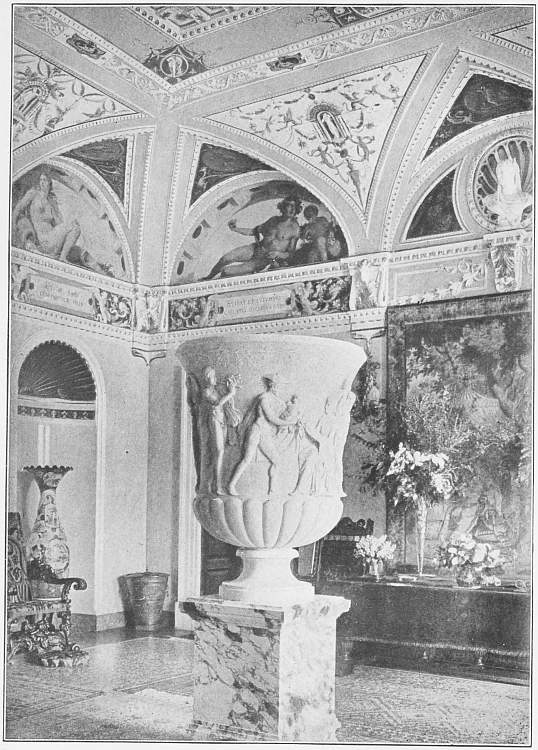 |
| THE ATRIUM OF THE VILLA MARIA |
We were standing in the atrium before a large marble vase—a restoration of the so-called Gaeta vase, by Salpion, a Greek sculptor of the time of Praxiteles. The original was thrown into the Bay of Gaeta, where for centuries it remained partially embedded in the mud. The fishermen of many generations used it as a convenient post for mooring their boats, and did much damage with their ropes. It was finally rescued and taken to a church for use as a baptismal font, and later transferred to the Naples Museum. The theme of the vase is the presentation of the infant Bacchus, by Mercury, to one of the Nymphs—a favorite subject with ancient sculptors. Mr. Haines, our courteous host, was justly proud of this—the first complete restoration of this beautiful work of art. The decoration of the atrium, including the eight lunettes, as well as of the entire villa, are by the hand of Pogliaghi, who now stands at the head of the Lombard decorators. He is the young sculptor who in 1895 was commissioned 171 to design the magnificent bronze doors of the Cathedral of Milan, a work requiring seven years.
One striking feature of the villa is its harmony of color. Glance out the doorway, from the atrium across the lake, or from the dining-room toward Menaggio, or through the library windows into the garden, and everywhere you see the blue Italian sky, the brown of the distant mountains, the green of the freshly budding trees, the sparkle of the lake, and the brilliant tints of the camellias, hyacinths, and cineraria, combining to make a scene of splendor rarely equaled in this good old world of ours. Then, glancing back into the rooms of the villa, you find the same tints and shadings in the walls and ceilings, the paintings, tapestries, and upholstery. Perfect harmony with Nature at her best seems to have been Pogliaghi’s motive.
Passing to the right of the atrium, we entered the music saloon, decorated and furnished in the style of Louis XIV, a large and beautiful room, noteworthy, not only for its acoustic properties, but also for extreme richness and harmony of design and color. An arched opening reveals a portion of a fine piece of tapestry by Giulio Romano, dating from the sixteenth century, which covers the rear wall of the dining-room. This tapestry, formerly owned by the Duke of Modena, is a representation of the old Greek 172 legend of the presentation of Bacchus, the same theme as that of the Gaeta vase. Indeed, it was the possession of this tapestry which suggested to Mr. Haines the idea of obtaining a restoration of the famous vase. A striking feature of the dining-room is the frieze of Poliaghi representing young Bacchantes in the midst of fruit and flowers, so cleverly painted that it seems to be done in high relief, completely deceiving the eye.
On the left of the atrium is the library, with two life-size portraits by De La Gandara, one of Mr. Haines and the other of his wife. Mrs. Haines was an accomplished musician as well as an enthusiastic collector of works of art. The Villa Maria was designed by her as a fitting shrine for her valuable collections as well as with a view to musical entertainments. Since her death, in 1899, Mr. Haines, with equal enthusiasm and taste, has added to the collections and improved the villa. His study is in the rear of the library. Its distinguishing feature is a life-size portrait of the children of Catherine de Medici, by Federico Zuccheri. This painting is seven hundred years old, but the colors are still fresh, and although life-size it has the exactness of a miniature. It was formerly in the Borghese collection.
Ascending the marble stairway we were ushered into the “Porcelain” room, containing the most unique and valuable portion of the art treasures of the villa. There are four cabinets 173 in the style of Louis XV, containing what is probably the best collection to be found in Europe of rare Ancienne, Porcelain de Saxe, Old Chelsea, Nymphenberg, Dresden, Meissen, Ludwigsburg, and Sèvres pieces in endless variety and bewildering richness of design. There are fans painted by Nicolas Poussin, and others by French and Italian artists of the seventeenth and eighteenth centuries. There is a fine portrait of the Duchess de Chevreuse by La Guillière and an original painting of Louis le Grand by Le Fèvre. A rare clock of the period of Louis XV, made about 1750, with miniature allegorical paintings, surrounded by pearls, stands upon a Louis XIV desk, ornamented with elaborate carved bronzes by Reisinger. On either side of the clock is a fine old Bohemian vase, while near by is a miniature of Napoleon by Isabey. The decoration of the room is completed by a fine old piece of Gobelin tapestry, bearing the signature of Boucher and the date 1747, originally presented by Louis XV to one of the queens of Spain.
These are a few of the treasures shown to us in a very brief visit to the Villa Maria. The enthusiasm of its owner for art goes hand in hand with a love of nature. If the interior decorations have been done with the eye of a discriminating artist, no less has the exterior received the same careful attention. The fine fountain, just within the gates, the flower-beds with their 174 well-harmonized tints, the olives and cypresses, the camellias, the cherry tree in full blossom, all add their charm to a view which would be unsurpassed even without their aid. For the villa is situated at one of the loveliest points on beautiful Como, commanding on all sides a panorama of distant mountains, with here and there a snow-capped peak, of peaceful water glistening in the warm April sun, of little white villages dotting the shores of the lake, of quaint little chapels in nooks and corners of the mountains, of peach trees and almonds adding a touch of pink to the landscape, of blue skies and fleecy clouds surmounting the whole like a brilliant canopy. No wonder that our genial host, after showing all the beauties of his palace, stood by the open window and waving his hand exclaimed, “I call this my J. M. W. Turner.” But the window framed a lovelier work of art than the hand of man will ever paint.
| 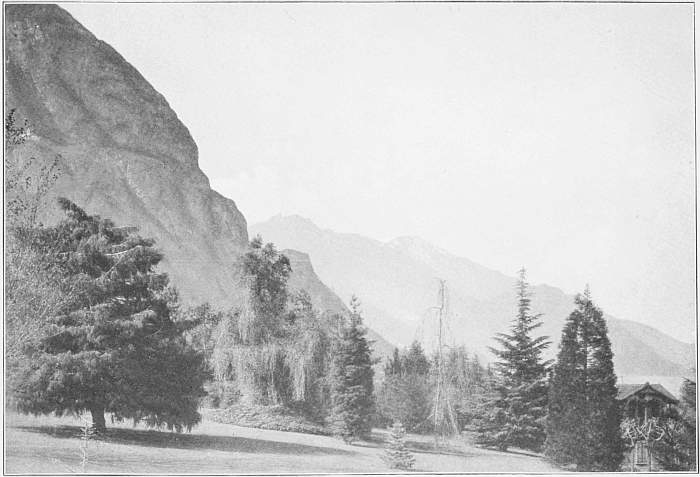 |
| “I CALL THIS MY J. M. W. TURNER” |
VII
LITERARY LANDMARKS OF
NEW ENGLAND
VII
LITERARY LANDMARKS OF NEW ENGLAND
The quest for literary landmarks is always a fascinating pursuit, particularly to the amateur photographer who likes to take pictures that mean something. I have always found a certain exhilaration in seeing for myself and reproducing photographically the places made memorable by some favorite author. To look into the ground glass of my camera and see the reflected image of some lovely scene that has been an inspiration to poet or novelist, is like suddenly coming into possession of a prize that had ever before been thought unattainable. It brings the author of a by-gone generation into one’s own time. It deepens the previous enjoyment—makes it more real. When I stand before the house in which some great author has lived, I seem to see more than a mere dwelling. The great man himself comes out to meet me, invites me in, shows me his study, presents me to his wife and children, walks with me in his garden, tells me how the surroundings of his home have influenced his literary work, and finally sends me away with a peculiar sense of intimacy. I go home, reach 178 out my hand for a certain neglected book on my shelves, and lo! it opens as with a hidden spring, a new light glows upon its pages, and I find myself absorbed in conversation with a friend.
I
CONCORD
For this kind of hunting I know of no better place in America than New England, and no better town in which to begin than the sleepy old village of Concord, twenty miles northwest of Boston. On the occasion of a recent visit, we walked out Monument Street and made our first stop at a point in the road immediately opposite the “Old Manse.” A party of school-children were just entering. Had we been looking at the grove on the hillside, at the opposite end of the town, where Hawthorne used to walk to and fro, composing the “Tanglewood Tales,” we might have supposed they had come to catch a few echoes of the famous story-teller’s voice, and I should have made a photograph with the children in it. But here they did not seem so appropriate, and we waited until they had gone. When all was quiet again, it did not require a very vigorous imagination to look down the vista of black-ash trees seen between the “two tall gate-posts of rough-hewn stone,” and fancy a man and woman walking arm in arm down the avenue toward the weather-stained old parsonage, its dark sides scarcely visible beneath the shadows of the overarching trees. The man is of medium height, broad-shouldered, and walks with a vigorous 180 stride, suggesting the bodily activity of a young athlete. His hair is dark, framing with wavy curves a forehead both high and broad. Heavy eyebrows overhang a pair of dark blue eyes, that seem to flash with wondrous expressiveness, as he bends slightly to speak to the little woman at his side. His voice is low and deep, and she responds to what he is saying with an upward glance of her soft gray eyes and a happy smile that clearly suggest the sunshine which she is destined to throw into his life.
Thus Nathaniel Hawthorne and Sophia Peabody, his bride, on a day in July, 1842, passed into the gloomy old house where they were to begin their honeymoon. I say “begin” because it was not like the ordinary honeymoon that ends abruptly on the day the husband first proposes to go alone on a fishing excursion. Nor was it like that of a certain “colored lady” whom I once knew. On the day following the wedding she left William to attend to his usual duties in the stable and the garden while she started on a two weeks’ “honeymoon” trip to her old Virginia home, explaining afterward that she “couldn’t afford to take dat fool niggah along, noway.”
| 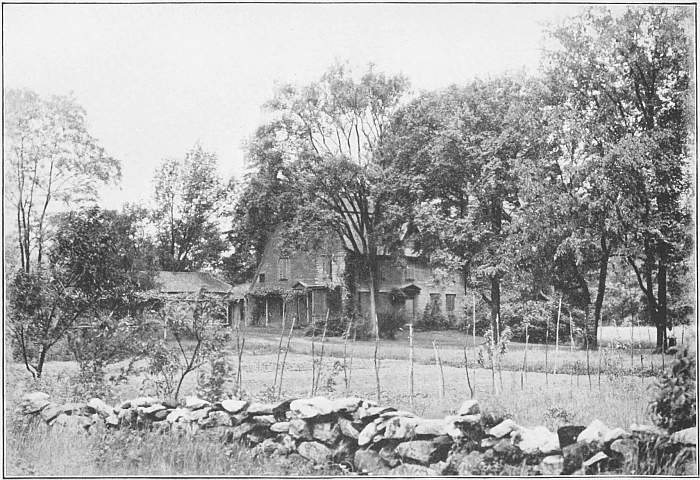 |
| THE OLD MANSE |
The Hawthorne honeymoon was one of that rare kind which begins with the wedding bells and has no ending. They were married lovers all their days. Hawthorne had seen enough of 181 solitariness in his bachelorhood to appreciate the rare companionship of his gifted wife, and he wanted nothing more. The dingy old parsonage was a Paradise to them and the new Adam and Eve invited no intrusions into their Eden. Some of their friends came occasionally, it is true, but Hawthorne records that during the next winter the snow in the old avenue was marked by no footsteps save his own for weeks at a time. And his loving wife, though she had come from the midst of a large circle of friends, found only happiness in sharing this solitude.
During the three years in which Hawthorne lived in this “Old Manse,” he seldom walked through the village, was known to but few of his neighbors, never went to the town-meeting, and not often to church, though he lived in a house that had been built by a minister and occupied by ministers so long that “it was awful to reflect how many sermons must have been written there.”
Let us peep through the windows of the parlor at the end of the dark avenue and indulge in another flight of fancy. It is an unusual day at the Manse, for two visitors have called to greet the new occupant. The elder of the two, a man in his fortieth year, is Ralph Waldo Emerson, who lives in the other end of the town in a large, comfortable, and cheery house, which we expect to see a little later. He knows the Old 182 Manse well. His grandfather built it shortly before the outbreak of the Revolution and witnessed the battle of Concord from a window in the second story. This good man, who was the Revolutionary parson of the village, died in 1776 at the early age of thirty-three, and a few years later his widow married the Reverend Ezra Ripley, who maintained, for more than sixty years, the reputation of the Manse as a producer of sermons, being succeeded by his son, Samuel, also a minister. In October, 1834, Emerson came there with his mother and remained a year, during which he wrote his first, and one of his greatest essays, “Nature.”
The other visitor is Henry D. Thoreau, a young man of twenty-five, then living with the Emersons. The two guests and their host are sitting bolt upright in stiff-backed chairs. The host speaks scarcely a word except to ask, for the sake of politeness, a few formal questions, which Thoreau answers with equal brevity. Emerson alone talks freely, but his words, however much weighted with wisdom, are those of a monologuist and do not beget conversation. Yet there is something in the manner of all three that seems to betray the unspoken thought. Hawthorne’s observing eyes seem to be saying, “So this is Emerson, the man who, they say, is drawing all kinds of queer and oddly dressed people to this quiet little village,—visionaries, 183 theorists, men and women who think they have discovered a new thought, and come to him to see if it is genuine. Perhaps he might help solve some of my problems. What a pure, intellectual gleam seems to be diffused about him! With what full and sweet tones he speaks and how persuasively! How serene and tranquil he seems! How reposeful, as though he had adjusted himself, with all reverence, to the supreme requirements of life! Yet I am not sure I can trust his philosophy. Let me admire him as a poet and a true man, but I shall ask him no questions.”
Then while Thoreau is talking, Emerson gazes at Hawthorne and reflects: “This man’s face haunts me. His manner fascinates me. I talk to him and his eyes alone answer me; and yet this seems sufficient. He does not echo my thoughts. He has a mind all his own. He says so little that I fear I talk too much. Yet he is a greater man than his words betray. I have never found pleasure in his writings, yet I cannot help admiring the man. Some day I hope to know him better. I have much to learn from him.”
Meanwhile Hawthorne’s gaze has turned upon the younger visitor. “What a wild creature he seems! How original! How unsophisticated! How ugly he is, with his long nose and queer mouth. Yet his manners are courteous and even his ugliness seems honest and agreeable. I understand 184 he drifts about like an Indian, has no fixed method of gaining a livelihood, knows every path in the woods and will sit motionless beside a brook until the fishes, and the birds, and even the snakes will cease to fear his presence and come back to investigate him. He is a poet, too, as well as a scientist, and I am sure has the gift of seeing Nature as no other man has ever done. Some day I must walk with him in the woods.”
Every man in the room loves freedom, and hates conventionalities. The ordinary formalities of polite society are unendurable. Therefore the four walls seem oppressive and the straight-back chairs produce an agonizing tension of the nerves. They are all glad when the call is over.
| 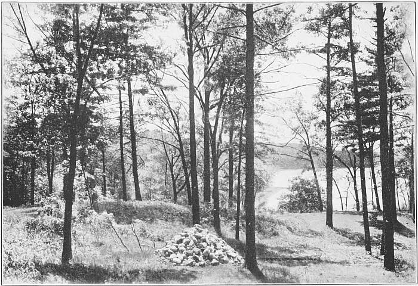 |
| WALDEN WOODS |
Now let the scene change. It is winter and the river behind the house is frozen. In the glory of the setting sun, its surface seems a smooth sea of transparent gold. The edges of the stream are bordered with fantastic draperies, hanging from the overarching trees in strange festoons of purest white. Once more our three friends appear, but the four walls are gone and the wintry breeze has blown away all constraint. All three lovers of the open air are now on skates. Thoreau circles about skillfully in a bewildering series of graceful curves, for he is an expert at this form of sport and thinks nothing of skating up the river for miles in pursuit of a fox or other 185 wild creature. Emerson finds it harder; he leans forward until his straight back seems to parallel the ice and frequently returns to the shore to rest. Hawthorne, if we may recall the words of his admiring wife, moves “like a self-impelled Greek statue, stately and grave,” as though acting a part in some classic drama, yet fond of the sport and apparently indefatigable in its pursuit.
Once more let the scene change. Summer has come again. The icy decorations have given place to green boughs and rushes and meadow-grass which seem to be trying to crowd the river into narrower quarters. A small boat is approaching the shore in the rear of the old house. In the stern stands a young man who guides the craft as though by instinct. With scarcely perceptible motions of the single paddle, he makes it go in whatsoever direction he wills, as though paddling were only an act of the mind. The boat is called the Musketaquid, after the Indian name of the river. Its pilot, who is also its builder, quickly reaches the shore, and we recognize the man of Nature, Thoreau. Hawthorne, who has been admiring both the boat and steersman, now steps aboard and the two friends are soon moving slowly among the lily-pads that line the margin of the river. Hawthorne is rowing. He handles the oars with no great skill, and as for paddling, it would be impossible for him to make 186 the boat answer his will. Thoreau plucks from the water a white pond-lily, and remarks that “this delicious flower opens its virgin bosom to the first sunlight and perfects its being through the magic of that genial kiss.” He says he has “beheld beds of them unfolding in due succession as the sunrise stole gradually from flower to flower”; and this leads Hawthorne to reflect that such a sight is “not to be hoped for unless when a poet adjusts his inward eye to a proper focus with the outward organ.” We fancy that under these conditions their talk “gushed like the babble of a fountain,” as Hawthorne said it did when he went fishing with Ellery Channing.
But we must not linger at the gate of the Old Manse indulging these dreams, for we have other pleasures in store. A hundred yards beyond, we turn into the bit of road, at right angles with the highway, now preserved because it was the scene of the famous Concord fight. A beautiful vista is made by the overarching of trees that have grown up since the battle, and in the distance we see the Monument, the Bridge, and the “Minute Man.” The Monument marks the spot where the British soldiers stood and opened fire on the 19th of April, 1775, while the “Minute Man” stands at the place where the Americans received their order to return the fire. The Monument was dedicated on the sixty-first anniversary of the battle, Emerson offering his 187 famous “Concord Hymn,” the opening stanza of which, thirty-nine years later, was carved on the pedestal of the Minute Man, erected in commemoration of the centennial of the event:—
| “By the rude bridge that arched the flood, Their flag to April’s breeze unfurled, Here once the embattled farmers stood, And fired the shot heard round the world.” |
The bridge is of no significance. It is a recent structure of cement, the wooden bridge over which the Minute Men charged having disappeared more than a century ago.
Hawthorne took little interest in the battlefield, though he did express a desire to open the graves of the two nameless British soldiers, who lie buried by the roadside, because of a tale that one of them had been killed by a boy with an axe—a fiendish yarn which we may be glad is not authenticated. The great romancer confessed that the field between the battlefield and his house interested him far more because of the Indian arrow-heads and other relics he could pick up there—a trick he had learned from Thoreau.
On our way back to the village we made a turn to the left, for a visit to Sleepy Hollow Cemetery. Never was such a place more appropriately named. An elliptical bowl, bordered by grassy knolls, with flowering shrubs and green groves, forms a perfect cradle among the hills in which sleep 188 generation after generation of the inhabitants of old Concord. On the opposite side of the hollow, well up the slope of the hill and shaded by many trees, we came to the graves of the Emersons, the Thoreaus, and the Hawthornes, in neighborly proximity. The Emerson grave seemed eminently satisfactory. A rough-hewn boulder at the foot of a tall pine marks the resting-place of a strong, sincere, and unpretentious character, who lived close to Nature. By his side lies Lidian, his wife, with an inscription on her tombstone, which few, perchance, stop to read, but which ought to be read by all who can appreciate this rare tribute to a woman’s worth:—
In her youth an unusual sense of
the Divine Presence was granted her
and she retained through life
the impress of that high Communion.
To her children she seemed in her
native ascendancy and unquestioning
courage, a Queen, a Flower in
elegance and delicacy.
The love and care for her husband and
children was her first earthly interest
but with overflowing compassion
her heart went out to the slave, the sick
and the dumb creation. She remembered
them that were in bonds as bound with them.
Thoreau’s grave is not quite so satisfactory. It creates the impression that the poet and naturalist who brought fame to his family was only 189 one of a considerable number of children and died in infancy with all the rest. It is marked with a small headstone and the single name, Henry. In the center of the lot a larger stone records the names of all the members of the family who lie buried there.
The Hawthorne grave is wholly unsatisfactory. It is not easily found by a stranger, even after careful directions. The small lot is inclosed by an ugly fence, only partially concealed by a poorly kept hedge. By making an effort one can peep through and see a simple headstone with the name Hawthorne. The most conspicuous object in the inclosure is a big sign warning the public not to pluck the leaves, etc., and ending with the curt injunction, “Have respect for the living if not for the dead.” The unsightly fence and the rudeness of the sign clang discordantly upon the sensibilities of those who have been taught to admire the gracious hospitality and courteous disposition of the man. We came to gaze reverently upon the grave of a man whom we had seemed to know for many years as a personal friend, but found ourselves treated with contempt as if we were merely vulgar seekers for useless souvenirs! Let us get back to the village and see the things of life.
Next to the Old Manse, the most interesting house in Concord is Emerson’s. It is southeast of the public square, at the point where the 190 Cambridge Turnpike joins the Lexington Road. When Emerson bought it in 1835, it was on the outskirts of the village and not prepossessing. He said, himself, “It is in a mean place, and cannot be fine until trees and flowers give it a character of its own. But we shall crowd so many books and papers, and, if possible, wise friends into it, that it shall have as much wit as it can carry.” In September of that year, Emerson went to Plymouth and was married to Miss Lydia Jackson, in a colonial mansion belonging to the bride, who suggested that they remain there. But Concord had charms which the poet could not sacrifice, so the couple established themselves in the big house at the southern edge of the village, where, ere long, the philosopher was dividing time between his study and the vegetable-garden, while Lidian, as her husband preferred to call her, set out her favorite flowers transplanted from the garden at Plymouth.
| 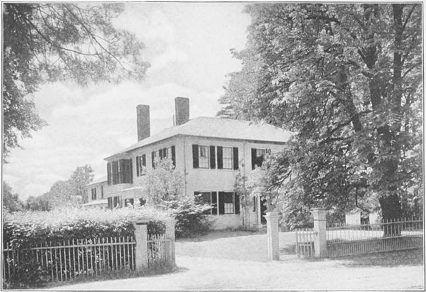 |
| HOUSE OF RALPH WALDO EMERSON |
The first thing that strikes your eye, as you pass the Emerson house, is the row of great horse-chestnuts shading its front. Mr. Coolidge, of Boston, who built the house in 1828, remembered the lofty chestnuts of his boyhood home in Bowdoin Square and promptly set to work to duplicate them when he completed his new country house. Emerson added to his original two acres until he had nine, and planted an orchard of apple trees and pear trees, on which Thoreau 191 did the grafting. “When I bought my farm,” said Emerson, “I did not know what a bargain I had in the bluebirds, bobolinks, and thrushes, which were not charged in the bill. As little did I guess what sublime mornings and sunsets I was buying, what reaches of landscape, and what fields and lanes for a tramp.” To appreciate the full extent, therefore, of Emerson’s domain, we must next visit the favorite objective of his Sunday walks, Walden Pond, only a mile or two away.
Walden Pond is a pretty sheet of water, about half a mile long, completely inclosed by trees, which grow very near to the water’s edge. I fancy the visitors who go there may be divided into two classes: first, those who go for a swim in the cool, deep waters, as Hawthorne liked to do; and second, those who go to lay a stone upon the cairn that marks the site of Thoreau’s hut. It is well worth a pilgrimage, in these days, to see the place where a man actually built a dwelling-house at a cost of $28.12½ and lived in it two years at an estimated expense of $1.09 a month. One of his extravagances was a watermelon, costing two cents, and this was classified in his summary among the “Experiments which failed!” The site of the hut was admirably chosen. It overlooks a little cove or bay, and the still surface of the pond, glimpses of which could be seen through the trees, reflecting the blue sky overhead, made a beautiful picture.
We must now return to the village, for there are two more houses to be seen, both on the Lexington Road. The first is the Alcott house, now restored to something like its original condition and preserved as a memorial to the author of “Little Women.” A. Bronson Alcott came to live in Concord in 1840, having visited there for the first time five years earlier. Emerson at once hailed him as “the most extraordinary man and the highest genius of his time.” He marveled at the “steadiness of his vision” before which “we little men creep about ashamed.” The “Sage of Concord” was too modest and time failed to justify his enthusiasm for the new neighbor. He came to admit that Alcott, though a man of lofty spirit, could not be trusted as to matters of fact; that he did not have the power to write or otherwise communicate his thoughts; and that he was like a gold-ore, sometimes found in California, “in which the gold is in combination with such other elements that no chemistry is able to separate it without great loss.”
Alcott was a “handy man” with tools, could construct fanciful summer-houses or transform a melodeon into a bookcase, as a piece of his handiwork in the “restored” house will testify. But in intellectual matters he fired his bullets of wisdom so far over the heads of his fellow men that they never came down, and therefore penetrated nobody’s brain.
This lack of practical wisdom came near bringing disaster to the family. But his daughter came to the rescue with “Little Women,” a book that has had an astonishing success from the first. Originally published in 1868, it has had a circulation estimated at one million copies and is still in demand.
In the winter of 1862-63, Louisa M. Alcott marched off to war, carrying several volumes of Dickens along with her lint and bandages, determined that she would not only bind up the soldiers’ wounds, but also relieve the tedium of their hospital life during the long days of convalescence. When she was ready to start, Alcott said he was sending “his only son.” Girl visitors to the old “Orchard house” take great delight in the haunts of Meg, Amy, Beth, and Joe, and particularly in Amy’s bedroom, where the young artist’s drawings on the doors and window-frames are still preserved.
Just beyond the Alcott house is a pine grove on the side of a hill and then the “Wayside,” Hawthorne’s home for the last twelve years of his life. When Hawthorne left the Old Manse, he went to Salem, then to Lenox, and for a short time to West Newton. In the summer of 1852, he returned to Concord, having purchased the “Wayside” from Alcott.
While living in Lenox he had written “The Wonder-Book,” which so fascinated the children, 194 including their elders as well, that his first task upon settling in the new home was to prepare, in response to many urgent demands, a second series of the same kind to be known as “The Tanglewood Tales.”
| 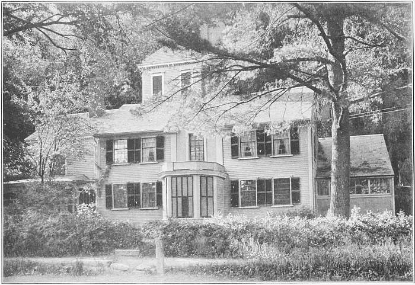 |
| THE WAYSIDE |
In the following spring the family sailed for Liverpool, where Hawthorne was to be the American Consul, and from this journey he did not return until 1860, seven years later. He was then at the height of his fame as the author of “The Scarlet Letter,” “The House of the Seven Gables,” and “The Marble Faun.” As soon as his family was settled in the Wayside, he began extensive alterations, the most remarkable of which is the tower, which not only spoiled the architecture of the building, but failed, partially at least, to serve its primary purpose as a study. It was a room about twenty feet square, reached by a narrow stairway where the author could shut himself in against all intrusion. A small stove made the air stifling in winter, and the sun’s rays upon the roof made it unbearable in summer. Nevertheless, Hawthorne managed to make some use of it and here he wrote “Our Old Home.” I fancy he must have composed most of it while walking back and forth in the seclusion of the pine grove which he had purchased with the house. And here in this pleasant grove we must leave him for the present, while we go back to Boston and thence to Salem, to search out a 195 few more old houses, which would fall into decay and finally disappear without notice, like hundreds of others of the same kind, but for the one simple fact that the touch of Hawthorne’s presence, more than half a century ago, conferred upon these dingy old buildings a dignity and interest that draw to them annually a host of visitors from all parts of the United States.
II
SALEM
On arrival at Salem we inquired of a local druggist whether he could direct us to any of the Hawthorne landmarks. He promptly pleaded ignorance, but referred us to an old citizen who chanced to be in the store and who admitted that he knew all about the town, having been “born and raised” there. Did he know whether there was a real “House of Seven Gables”? Well, he had heard of such a place, but it was torn down long ago. Could he direct us to the Custom House? Oh, yes, right down the street: he would show us the way. Any houses where Hawthorne had lived? Well, no,—he hadn’t “followed that much.” Had any of his family ever seen Hawthorne, or spoken of him? Yes—but he didn’t amount to much: kind of a lazy fellow. People here didn’t set much store by him.
We were moving away, fearing that the old fellow would offer to accompany us and thereby spoil some of our anticipated enjoyment of the old houses, when he called after us—“Say, there’s an old house right down this street that I’ve heard had something to do with Hawthorne. I don’t know just what, but maybe the folks there can tell you. It’s just this side of the graveyard.” We thanked the old man, and following 197 his directions, soon stood before an old three-story wooden house, with square front, big chimneys, and its upper windows considerably shorter than those below—a type common enough in Salem and other New England towns. It stood directly on the sidewalk and had a small, inclosed porch, with oval windows on each side, through which one could look up or down the street. In all these details it agreed exactly with Hawthorne’s description of the house of Dr. Grimshawe. Adjoining it on the left was the very graveyard where Nat and little Elsie chased butterflies and played hide-and-seek among the quaint old tombstones, which had puffy little cherubs and doleful verses carved upon them. That corner room, no doubt, that overlooks the graveyard, was old Dr. Grim’s study, so thickly festooned with cobwebs, where the grisly old monomaniac sat with his long clay pipe and bottle of brandy, with no better company than an enormous tropical spider, which hung directly above his head and seemed at times to be the incarnation of the Evil One himself.
How could Hawthorne, in his later years, conceive such horrible suggestions in connection with a house which must have been associated in his mind with the happiest memories of his life? For here lived the Peabody family, Dr. Nathaniel Peabody and his highly cultivated wife, their three sons, only one of whom lived to maturity, and their three remarkable daughters—Elizabeth 198 Palmer, who achieved fame as one of the foremost kindergartners of America and died at a ripe old age; Mary, who became the wife of Horace Mann; and the gentle, scholarly, and high-minded Sophia, who refused to come down to see Hawthorne, on plea of illness, the first time he called at the house, but fell in love with him at a subsequent visit. The calls were frequent enough after that, and before the family left the old house to reside in Boston, the lovers were engaged to be married.
During the period of the courtship, Hawthorne lived with his mother and two sisters in a house on Herbert Street not far distant, and the two families came into close neighborly relations. Of course, we walked over to Herbert Street to find this house, but what remains of it has been remodeled into an ordinary tenement house and no longer resembles the house to which Sophia Peabody once sent a bouquet of tulips for Mr. Hawthorne, only to have it quietly appropriated by his sister Elizabeth, who thought her brother incapable of appreciating flowers, though she kindly permitted him to look at them! In the rear of this building, fronting on Union Street, is the plain, two-story-and-a-half house, with a gambrel roof, where Hawthorne was born.
When the Hawthornes returned to Salem, after their residence in the Old Manse, they occupied the Herbert Street house, with Madam Hawthorne 199 and her two daughters, Elizabeth and Louisa. This proved inconvenient for so large a family and they moved into a three-story house on Chestnut Street, well shaded by some fine old elms. This was only a temporary arrangement, and soon afterward, the family took a large three-story house on Mall Street, where the mother and sisters occupied separate apartments. Hawthorne’s study was on the third floor—near enough his own family for convenience, but sufficiently remote for quiet. It was to this house that he returned one day in dejected mood and announced that he had been removed from his position at the Custom House. “Oh! then, you can write your book!” was the unexpectedly joyous reply of his wife, who knew that he had a story weighing on his mind. And then she produced the savings which she had carefully hoarded to meet just such an emergency. “The Scarlet Letter” was begun on the same day.
It was to this same house that James T. Fields came in the following winter and found Hawthorne in despondent mood sitting in the upper room huddled over a small stove. The preceding half-year had been the most trying period in his life. Discouragement over the loss of his position and the prospect of meager returns for his literary work was followed by serious pecuniary embarrassment, for Mrs. Hawthorne’s store of gold was, after all, a tiny one. The illness and death 200 of his mother had left him in a nervous state from the great strain of emotion, and this was followed by the sickness of every member of the household, himself included. The story of how Fields left the house with the manuscript of “The Scarlet Letter” in his pocket is well known. The immediate success of the novel proved to be the tonic that restored the author to health and happiness, and when he left Mall Street in the following spring he was no longer the “obscurest man of letters in America.”
The old Salem Custom House is the best-known building in the town. As we stood before it and looked upon the great eagle above the portico, with “a bunch of intermingled thunderbolts and barbed arrows in each claw” and a “truculent attitude” that seemed “to threaten mischief to the inoffensive community,” it seemed as though we might fairly expect the former surveyor, or his ghost, to open the door and walk down the old granite steps.
| 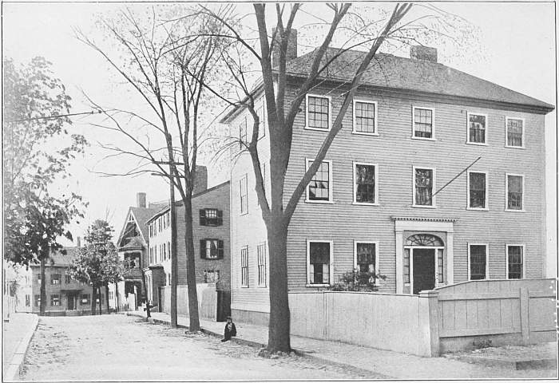 |
| THE MALL STREET HOUSE |
I have already mentioned the apparent indifference toward Hawthorne of a certain old citizen of Salem—a feeling which characterizes a large part of the population, particularly those whose ancestors have lived longest in the town. One would naturally expect Salem to be proud of her most distinguished citizen, to delight in honoring him, and to extend a cordial welcome to thousands of strangers who come to pay him homage. 201 Shakespeare is the principal asset of Stratford-on-Avon, Scott of Melrose, Burns of Ayr, and Wordsworth of the English Lakes. Every citizen is ready to talk of them. Not so of Hawthorne and Salem. The town is quite independent, and would hold up its head if there had never been any Hawthorne. The later generation, it is true, recognize his greatness, but the prejudice of the older families is sufficient to check any manifestation of enthusiasm.
This old Custom House upon which we are looking furnishes the explanation. When Hawthorne took possession as surveyor, he found offices ornamented with rows of sleepy officials, sitting in old-fashioned chairs which were tilted on their hind legs against the walls. These old gentlemen made an irresistible appeal to his sense of humor, such that he could scarcely have avoided the impulse to write a description of their whimsicalities. After his “decapitation” he yielded to the impulse and prepared in the best of good humor the amusing description of his former associates in the “Introduction” to “The Scarlet Letter.” It brought the wrath of Salem upon his head. These old fellows did not fancy being caricatured as “wearisome old souls,” who “seemed to have flung away all the golden grain of practical wisdom which they had enjoyed so many opportunities of harvesting, and most carefully to have stored their memories with the 202 husks.” Especially enraged were the family of the Old Inspector of whom Hawthorne said nothing worse than that he remembered all the good dinners he had eaten. “There were flavors on his palate that had lingered there not less than sixty or seventy years, and were still apparently as fresh as that of the mutton chop which he had just devoured for his breakfast,” said Hawthorne with fine humor. “He called one of them a pig,” said a Salemite to me, indignantly.
After all, Salem never really knew Hawthorne. Though the town was his birthplace, he had little liking for it, and was seldom there. During the four years of his incumbency of the Custom House, he kept aloof from the townspeople, most of whom had no knowledge whatever of his literary efforts. When the fame of “The Scarlet Letter” had made Hawthorne’s name a familiar one throughout America and England, the author was no longer a resident of Salem, for immediately after the publication of his first and most famous novel, he was glad to seek relief from the gloomy memories of Mall Street in the fresh mountain air of the Berkshires.
Hawthorne, though apparently glad to escape, still allowed his thought to dwell in Salem, for in the same year of the completion of “The Scarlet Letter” and his removal to Lenox, Massachusetts, he began “The House of the Seven Gables.” The identity of this house has long been 203 a matter of curiosity. Three old Salem houses, two of which have since disappeared, have been pointed out as originals, the authenticity of all of which has been denied by George Parsons Lathrop, Hawthorne’s son-in-law, who maintains that the author’s statement, that he built his house only of “materials long in use for constructing castles in the air,” must be taken literally.
It must not be supposed that an author need ever describe such a building in detail or provide for its future identification. He may do as Scott often did, put the details of three or four houses into one structure, taking his material, not “out of the air,” but from recollections of many places he has seen. It does not detract from the supposed “original” to find that the author has made material, even radical, departures from the original plan. The real point of interest is to know whether the old landmark suggested anything to the author, and if so, how much.
To those who follow this line of reasoning, an old house at the foot of Turner Street, now commonly known as “The House of the Seven Gables,” has many points of interest. It is a weather-stained old building dating back to 1669, and contains so many gables that you are reasonably content to accept seven as the number, though I believe it has eight, not counting the one over the rear porch, recently added.
The identification of this house as the one 204 which, more than any other, suggested to Hawthorne the idea of a house of seven gables, rests upon two facts. The first is that in 1782 it came into the possession of Captain Samuel Ingersoll, whose wife was a niece of Hawthorne’s grandfather. It passed, later, to their only surviving daughter, Susannah. Her portrait, which now hangs in the parlor of the old house, shows that, as a young woman, she was not unattractive. An unfortunate love affair caused her to withdraw from society and to live a life of solitude in the old house, from which all male visitors were rigidly excluded. An exception seems to have been made in favor of her cousin Nathaniel Hawthorne, who, it is said, was a frequent visitor and listened with interest to the legends of the house as told by his elder cousin.
| 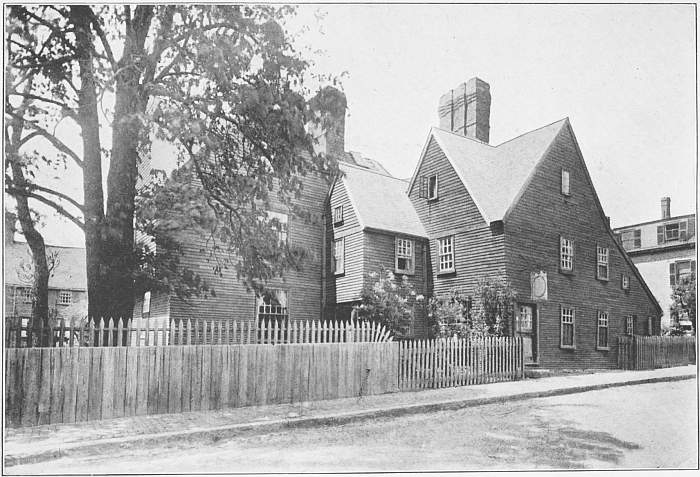 |
| THE HOUSE OF THE SEVEN GABLES |
The second fact of identification rests upon more recent evidence. The building was purchased in 1908 by a generous resident of Salem and turned into a settlement house. This lady, who possesses the highest antiquarian instincts, determined to restore the house to its original form. In doing so she discovered traces of four gables which had been removed. These, with three that remained, made the desired seven, but, unfortunately, about the same time an old plan was unearthed which proved that the house at one time must have had eight gables! So the house has been restored to its full quota of eight. 205 When Hawthorne was calling there it had only three gables, and his elderly kinswoman must have told traditions of the time when it had seven or eight, as the case may be. And so the question of gables becomes as bewildering as Tom Sawyer’s aunt’s spoons.
Aside from this not very profitable speculation, the house is an interesting survival of the time when Salem was a seaport town of some importance. A secret staircase has been reconstructed according to the recollections of the man who took it down a quarter of a century ago. It opens by a secret spring in a panel of the wall in the third-story front room, now known as “Clifford’s chamber,” and ascends through a false fireplace in the dining-room. It will be remembered how Clifford mysteriously disappeared from his room, and as mysteriously reappeared in the parlor where Judge Pyncheon sat in the easy-chair, dead. Perhaps he came down this secret stairway, though Hawthorne forgot to mention it.
A little shop, where real gingerbread “Jim Crows” are sold, makes the present “House of the Seven Gables” seem real, so that when the bell tinkles as you open the door, you would not be at all surprised if Hepzibah Pyncheon herself should appear, entering from the quaint little New England kitchen on the right. A sunny chamber upstairs now called “Phœbe’s room,” and a pleasant little garden in the rear, still 206 further heighten the illusion and make one feel that if this is not the real “House of the Seven Gables,” it certainly ought to be.
The conditions under which “The House of the Seven Gables” was written were quite the reverse of those which brought forth “The Scarlet Letter.” Instead of obscurity, ill health, and financial difficulties, the author was now in the full flush of his fame, reveling in the friendship of the most distinguished men of letters, enjoying the best of health himself, and happy in the consciousness that his dear wife was also well, and living amid the most delightful surroundings, free from care and taking no anxious thought for the morrow.
The people of Salem are now preparing to make ample amends for any neglect of Hawthorne in the past. A committee of prominent citizens has been at work for several years upon a plan to erect a handsome statue upon the Common, the design for which has been made by a well-known artist, and a portion of the funds collected. With this monument before them, we may reasonably hope that future generations will be able to forgive the frankness which irritated their ancestors, though it was kindly meant, and eventually open their hearts to adopt Hawthorne as their very own, just as Stratford does Shakespeare, acknowledging the full extent of their obligation for the luster which his brilliant genius has shed upon their town.
III
PORTSMOUTH
If Thomas Bailey Aldrich were living to-day and could enter the front door of his grandfather’s house in Court Street, Portsmouth, New Hampshire, he would be likely to have a strange feeling of suddenly renewed youth, for his eyes would rest upon the same rooms and many of the same furnishings as those which greeted him in 1849, when he returned to the old house, a lad of twelve, to enter upon those happy boyish experiences so pleasantly related in “The Story of a Bad Boy.” And then, as he passed from room to room and gazed once more upon the old familiar sights, he would experience a deeper and richer joy—a sense of pride, mingled with love and gratitude, for this unique and splendid tribute to his memory, from his faithful wife and many loyal friends.
In the summer of 1907, following the death of Mr. Aldrich, which occurred in the spring of that year, it was suggested in a local newspaper of Portsmouth, New Hampshire, that the old Bailey house, where “Tom Bailey” lived with his “Grandfather Nutter,” should be purchased by the town and refurnished as a permanent memorial to its distinguished son. The response was instant and hearty. The Thomas Bailey Aldrich 208 Memorial Association was at once formed, and a fund of ten thousand dollars was raised by popular subscriptions, in sums varying from one dollar to one thousand dollars. The house, which had fallen into alien hands and had not been kept in good repair, was purchased and restored to its original condition, and the heirs gladly gave back all that had been taken away at the death of Grandfather Bailey. On June 30, 1908, the restored house was formally dedicated by a distinguished representation of Aldrich’s friends, including Richard Watson Gilder, William Dean Howells, Hamilton Wright Mabie, Thomas Wentworth Higginson, Thomas Nelson Page, Samuel L. Clemens, and many others whose names are well known.
| 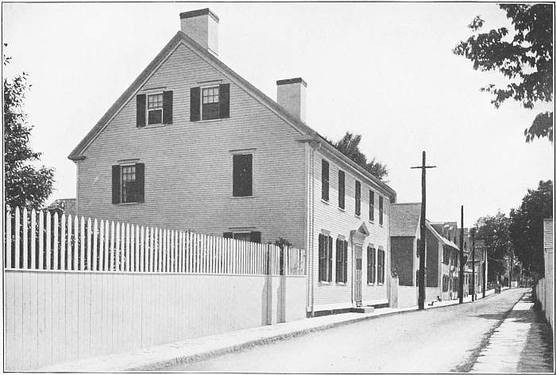 |
| THE BAILEY HOUSE |
The “Nutter” house, or the “Aldrich Memorial” as it is officially known, impresses one with a sense of perfect satisfaction. I have seen memorials that are barn-like in their emptiness, so difficult has it been to secure a sufficient number of relics to furnish the rooms; others impress me like shops for the sale of souvenirs; others have the cold, touch-me-not aspect of a museum; and some are overloaded with busts, pictures, and inscriptions intended to convey an impression of the greatness of the former occupant. The Nutter house, on the contrary, looks as though Tom and his grandfather had gone off to the village an hour before, and Aunt Abigail 209 and Kitty Collins, after “tidying” the rooms to perfection, had slipped away to gossip with the neighbors. The visitor has a feeling that real people are living there and is surprised to learn that at a certain hour each day the attendants go away and lock it up for the night.
Mrs. Aldrich told us that when her husband took her there for the first time, as his bride, the old house made such a strong impression upon her mind that when she came to restore the place, many years afterward, she remembered distinctly where every piece of furniture used to stand. The perfection of her work is seen in the hundreds of little touches—the shawl thrown carelessly over the back of a chair, the fan lying on the sofa, the books on the center table, the music on the old-fashioned square piano, grandfather’s Bible and spectacles on his bedroom table, the embroidered coverlet in the “blue-chintz room,” the netting over Aunt Abigail’s bed, the clothing in the closets, and even the night-clothes carefully laid out on each corpulent feather bed. I fancy the most loving touches of all were given to the little hall bedroom where Tom Bailey slept. There is the little window out of which Tom swung himself, with the aid of Kitty Collins’s clothes-line, at the awful hour of eleven o’clock, and tumbled into a big rosebush, on the night before “the Fourth.” The “pretty chintz curtain” may not be the one Tom knew, but it is 210 very like it; and there is a very good imitation of the original wall-paper, on which Tom counted two hundred and sixty-eight birds, each individual one of which he admired, although no such bird ever existed. He knew the exact number because he once counted them when laid up with a black eye and dreamed that the whole flock flew out of the window. The little bed has “a patch quilt of more colors than were in Joseph’s coat,” and across it lies a clean white waistcoat waiting for Tom to put it on, as though to-morrow would be Sunday. Above the head of the bed are the two oak shelves, holding the very books that Tom loved. In front of the window is the “high-backed chair studded with brass nails like a coffin,” and on the right “a chest of carved mahogany drawers” and “a looking-glass in a filigreed frame.” A little swallow-tailed coat, once worn by Tom, hangs over the back of a chair, ready to be worn again. Surely Tom Bailey is expected home to-night!
Even the garret is ready in case to-morrow should be stormy. “Here meet together, as if by some preconcerted arrangement, all the broken-down chairs of the household, all the spavined tables, all the seedy hats, all the intoxicated-looking boots, all the split walking-sticks that have retired from business, weary with the march of life.” One slight liberty has been taken, in placing “The Rivermouth Theater” in one corner 211 of the attic, next to Kitty Collins’s room, but this may be forgiven in view of the fact that the barn, where the “Theater” really was, has disappeared.
In our anxiety to see Tom’s room and the attic, we have rushed upstairs somewhat too rapidly. Let us now go down and inspect the other rooms with more leisure.
In the front of the house, on the second floor, and at the left of the tiny bedroom which Tom occupied, is Grandfather Nutter’s room. It was too near for Tom’s convenience, and that is why the young gentleman lowered himself from the window by a rope—at least, that was the reason he doubtless argued to himself in favor of the more romantic mode of exit, although as a matter of fact grandfather was a sound sleeper and Tom might have walked boldly downstairs without awakening him. Still he would have had to pass the door of Aunt Abigail’s room at the head of the stairs, and if the old lady had suddenly appeared, Tom could scarcely have escaped a dose of “hot drops,” which his aunt considered a certain cure for any known ailment, from a black eye to a broken arm. Aunt Abigail, it will be remembered, was the maiden sister of Captain Nutter, who “swooped down on him,” at the funeral of the captain’s wife, “with a bandbox in one hand and a faded blue cotton umbrella in the other.” Though apparently intending to stay 212 only a few days, she decided that her presence was indispensable to the captain, and whether he wished it or not she kept on staying for seventeen years, and might have stayed longer had not death released her from the self-imposed duty.
On the right of Tom’s room is “the blue-chintz room, into which a ray of sun was never allowed to penetrate.” But it was “thrown open and dusted, and its mouldy air made sweet with a bouquet of pot-roses” on the occasion of Nelly Glentworth’s visit, and a very delightful room Nelly must have found it, if it looked as well then as it does now, under the skillful direction of Mrs. Aldrich.
Across the hall from Aunt Abigail’s room is the guest chamber. An old-fashioned rocking-chair by the window, with a Bible and candle conveniently placed on a stand close by, offer the visitor every opportunity to get himself into a proper frame of mind before taking a plunge into the depths of the snow-white mountain of feathers, hospitably piled up to an enormous height for his comfort.
| 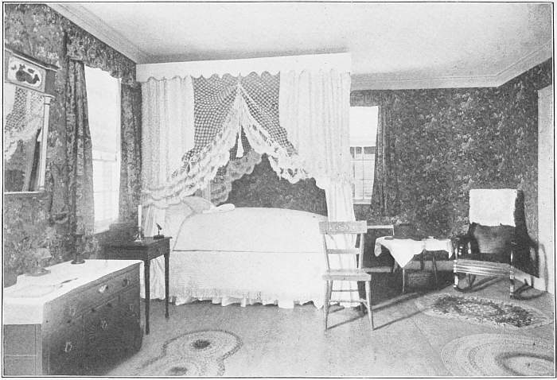 |
| “AUNT ABIGAIL’S” ROOM |
Descending now to the main floor (for we are inspecting this house exactly contrary to the usual order), we step into the large corner room at our left. Here visions arise of Tom sitting disconsolately on the haircloth sofa, in the evening, driven to distraction by the monotonous click-click of 213 Aunt Abigail’s knitting-needles, but sometimes happily diverted by the spectacle of grandfather going to sleep over his newspaper and setting fire to it with the small block-tin lamp which he held in his hand.
Across the hall is the parlor, which was seldom open except on Sundays, and was “pervaded by a strong smell of center table.” Here again we fancy Tom sitting in one corner, “crushed.” All his favorite books are banished to the sitting-room closet until Monday morning. There is nothing to do and nothing to read except Baxter’s “Saint’s Rest.” “Genial converse, harmless books, smiles, lightsome hearts, all are banished.” It was no fault of the room, however, that Tom felt doleful, for there is a fine, wide, open fireplace with big brass andirons from which a wonderful amount of cheer might have been extracted, while a piano in one corner and some shelves of books in another were capable of providing boundless entertainment, had the room been accessible on any other day than Sunday.
Passing down through the hall we enter a door on the left, into the dining-room. Do you remember how Captain Nutter tormented poor Tom at the breakfast table, on the morning of the Fourth of July, by reading from the Rivermouth “Barnacle” an account of the burning of the stage-coach the night before? “Miscreants unknown,” read the grandfather, while Tom’s hair stood 214 on end. “Five dollars reward offered for the apprehension of the perpetrators. Sho! I hope Wingate will catch them,” continued the old gentleman, while Tom nearly ceased to breathe. And the sly old fox knew all about it and had already settled Tom’s share of the damages!
We now cross the hall into the kitchen, which we ought to have visited first, as everybody else does. A more delightful New England kitchen could scarcely be imagined. This was the only place where Sailor Ben felt at home—and no wonder, for how could any room have a more inviting fireplace? Here Tom sought refuge when oppressed by the atmosphere of the sitting-room and found relief in Kitty Collins’s funny Irish stories. And here Sailor Ben gathered the whole family around the table while he spun his yarn “all about a man as has made a fool of hisself.”
This is the delightful fact about the Nutter house of to-day—every room brings back memories of Tom Bailey, Grandfather Nutter, Aunt Abigail, Kitty Collins, and Sailor Ben. The furnishings are so perfect that we should not have been surprised if any one of these old friends had suddenly confronted us. Our minds were concentrated upon their personalities and upon “The Story of a Bad Boy.” The illusion is so complete that we scarcely gave a thought to the author of the tale until we entered the Memorial building 215 at the rear. Suddenly Tom Bailey vanished and with him all the other ghosts of the old house. We stood in the presence of Thomas Bailey Aldrich, the poet, the writer of a multitude of delightful tales, and the man of genial personality. Here, in a single large room, are brought together the priceless autographs, manuscripts, first editions, and pictures which Aldrich had found pleasure in collecting. Here is the little table on which he wrote “The Story of a Bad Boy,” and there are cases containing countless presents, trophies, and expressions of regard from his friends. The walls are hung with manuscripts, framed in connection with portraits of their distinguished writers, as Aldrich loved to have them. At the end of the room is a handsome oil painting of Aldrich himself. Everything tends to suggest the exquisite taste of the man, his genial nature, his varied attainments, and the extent of his wide circle of distinguished friends. Above all, the room speaks in eloquent terms of the affectionate loyalty to his memory that has led his family to bring together the material for a memorial unsurpassed in variety of interest and tasteful arrangement of details.
Even the garden in the rear of the house is made to sing its song in memory of Aldrich, for here are growing all the flowers mentioned in his poetry, blending their perfumes and uniting harmoniously their richness of color in one 216 graceful tribute to the beauty and delicacy of his verse.
| 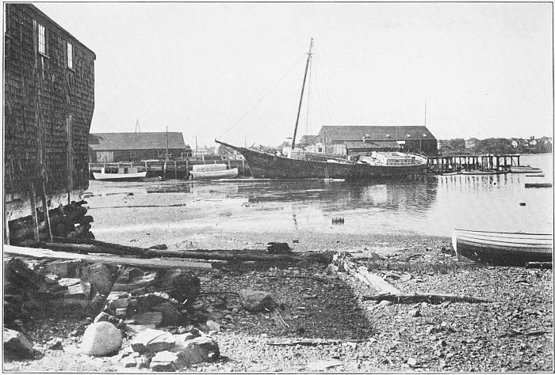 |
| AN OLD WHARF |
After living over again the scenes of “The Story of a Bad Boy,” in so far as they were suggested by the Nutter house, it was only natural that we should wish to stroll about the “Old Town by the Sea” in the hope of identifying some of the out-of-door scenes of “young Bailey’s” exploits. The first house on the right, as we walked toward the river, is the William Pitt Tavern. In the early days of the Revolution it was an aristocratic hotel, much frequented by the Tories, and kept by a certain astute landlord named John Stavers. He had formerly kept a tavern on State Street, known as the “Earl of Halifax,” and when it became necessary to move to the newer house in Court Street, he carried sign and all with him. But the patriots, whose resort was the old Bell Tavern, kept a jealous eye on the Earl of Halifax, and in 1777 attacked it, seriously damaging the building. Master Stavers, being at heart neither Tory nor patriot, but primarily an innkeeper, promptly changed both his politics and his sign. The latter became “William Pitt,” in honor of the colonists’ English friend and supporter, and the thrifty landlord began to entertain the leaders of the Revolution at his house. John Hancock, Elbridge Gerry, and Edward Rutledge decorated with their autographs the pages of his register as well as the 217 Declaration of Independence. General Knox was a frequent visitor and Lafayette came there in 1882. Moreover, the old tavern has had the honor of entertaining the last of the French kings, Louis Philippe, who came there with his two brothers during the French Revolution, and the first American President, who was a guest in 1789.
All this glory had long since departed in Aldrich’s day, and his chief interest in the old tavern lay in the fact that he could climb up the dingy stairs to the top floor and listen for hours to the stories of the olden times, as told by Dame Jocelyn, with whom, as she asserted, Washington had flirted just a little, though in a “stately and highly finished manner”!
Continuing down the street, we found the empty old warehouses and rotting wharves among which Aldrich spent so many hours of his boyhood, and we took a picture of one old crumbling dock, which we felt sure must have been very like the one upon which the boys of the Rivermouth Centipedes fired a broadside from “Bailey’s Battery.” The old abandoned guns, twelve in all, were cleaned out, loaded, provided with fuses, and set off mysteriously at midnight, much to the astonishment of the Rivermouthians, who thought the town was being bombarded or that the end of the world had come. The old wharf possessed a singular fascination for me because I still recall how vividly the incident impressed 218 me in my boyhood and how fervently I envied Tom Bailey his unusual opportunities. Nor did it mar my enjoyment in the least to learn that the wharf I was looking at was not the right place, the real one, where the guns were stored, having been removed some time ago. It was near the Point of Graves, the spot where the boys went in bathing and where Binny Wallace’s body was washed ashore after the ill-fated cruise of the Dolphin. The real Binny, by the way, was not drowned at all. The author, here, deviated from the facts to make his story more dramatic.
Point of Graves takes its name from the old burying-ground, occupying a triangular space near the river’s edge. It has quaint old tombstones dating back as far as 1682, with curious epitaphs, skulls, and cherubs carved upon them. Here is the place where Tom Bailey, disappointed in love and determined to become “a blighted being,” used to lie in the long grass, speculating on “the advantages and disadvantages of being a cherub”—the disadvantages being that the cherub, having only a head and wings, could not sit down when he was tired and could not possess trousers pockets!
A stroll through this part of the town, which in olden times was the center of its trade and commerce, is like walking through some of the old English villages. Every house, nearly, has its history, and I fancy the streets have not greatly 219 changed their appearance since the days of Aldrich’s boyhood.
On the corner of Fleet and State Streets we came to an old house, which has an interesting connection with our story. A part of it was occupied as a candy store for nearly sixty years. On the Fourth of July, after Tom had treated the boys to root-beer, a single glass of which “insured an uninterrupted pain for twenty-four hours,” they came here for ice-cream. It is said that one of the ringleaders subsequently celebrated every third of July, until his death, by eating ice-cream in the same room. The story was based upon an incident that really happened in 1847, in which, of course, Aldrich could have had no part, as he was not then living in Portsmouth. I am inclined to doubt whether the real event was half so delightful as the tale which Aldrich tells, of the twelve sixpenny ice-creams, “strawberry and verneller mixed,” and how poor Tom was left to pay for the whole crowd, who slipped out of the window while he was in another room ordering more cream!
No doubt we might have coupled many other places in Portsmouth with “The Story of a Bad Boy”—for it is a very real story, though not to be taken literally in every detail. It is interesting to think of the town, also, as the scene of “Prudence Palfrey.” The old Bell Tavern, where Mr. Dillingham boarded, ceased to exist as a public 220 house in 1852 and was destroyed by fire fifteen years later. It is pleasant also to follow Aldrich in a walk through the streets, with a copy of “An Old Town by the Sea” for a guide, and note all the fine old houses he so charmingly describes.
But we must not devote our entire time to Aldrich, for an older poet has a slight claim to our attention. The opening scene of Longfellow’s “Lady Wentworth,” in the “Tales of a Wayside Inn,” is laid in State Street.
| “One hundred years ago and something more, In Queen Street, Portsmouth, at her tavern door,”— |
is the way the poem opens. Queen Street was the old name for State Street, and the tavern was the old Earl of Halifax before Master Stavers carried the sign over to the new house in Court Street. It has long since disappeared. It was before this house that the barefooted and ragged little beauty, Martha Hilton, was rebuked by Dame Stavers for appearing on the street half-dressed and looking so shabby, to which she quickly replied:—
| “No matter how I look: I yet shall ride In my own chariot, ma’am.” |
The house to which she did drive in her own chariot, many a time in later days, as the wife of Governor Wentworth, is one of the most pleasantly situated of all the houses in Portsmouth. 221 It is at Little Harbor, on one of the many peninsulas that jut out into the Piscataqua, below the town, and commands a fine view of the beautiful river and its many islands. The house is a large wooden building containing forty-five rooms, though originally it had fifty-two. Architecturally it is unattractive, external beauty of design having been sacrificed to utility.
| “Within, unwonted splendors met the eye, Panels and floors of oak, and tapestry; Carved chimney pieces, where on brazen dogs Reveled and roared the Christmas fires of logs.” |
The historic building, with its great Chamber where the Governor and his Council met for their deliberations, still remains in almost its original state.
One could spend many days in Portsmouth investigating its connection with the history of the country, from the early explorations in 1603 of Martin Pring and the visit in 1614 of Captain John Smith, down through the settlements of David Thomson and Captain John Mason, the Indian wars and massacres, the incidents of the Revolution, and the rise and fall of the town’s commerce, and find plenty of old landmarks to give zest to the pursuit. But our search, at present, is for literary landmarks. We, therefore, take passage on the little steamer that plies to and from the Isles of Shoals for a pilgrimage to the Island Garden of Celia Thaxter.
IV
THE ISLES OF SHOALS
It is a pleasant sail down the Piscataqua, past the old “slumberous” wharves, where “the sunshine seems to lie a foot deep in the planks”; past the long bridges; the numerous clusters of islands; the white sails of the yacht club, hovering like gulls about the huge battleships, moored to the docks of the navy yard; the ruins of Fort Constitution, formerly Fort William and Mary, famed in history, but more interesting to us as the place where Prudence Palfrey came near surrendering her heart to the infamous Dillingham; the ancient town of Newcastle with its old-fashioned dwellings mingling with pretty new summer cottages, the whole dominated by the white walls of a huge hotel; Kittery Point, birthplace of Sir William Pepperell, the famous Governor and Indian fighter: and at last, the broad Atlantic, stretching to the eastward with nothing to obstruct the view save a few tiny specks, dimly visible in the distance. These are the Isles of Shoals, looking so small that they seem to be only rocks jutting a few feet above the sea, upon which it would be impossible to land.
As we approach Appledore, the islands still seem to be only a cluster of barren rocks, with a few scattered buildings. The charm which they undoubtedly 223 exert upon those who come year after year does not immediately manifest itself to the stranger. He must spend a night there, breathing the pure sea air, watching in the early evening the glistening lights on the far-off shore, and finally falling asleep to dream that he is in mid-ocean, on one of the steadiest of steamers, enjoying the luxury of absolute rest, for which there is no better prescription than an ocean voyage. In the morning, he must walk around the island—it can be done in an hour or two—threading the narrow paths through the huckleberry bushes and picking his way over the high rocks that present their front to the full force of the waves, on the side of Appledore that faces the sea. Here he will see artists spreading their easels and canvases for a day’s work and less busy people settling down in various shady nooks, to read, to chat, to knit, to dream.
To get the real spirit of the islands it is advisable to find one of these quiet nooks and read Celia Thaxter’s “Among the Isles of Shoals,” a book of sketches for which the author needlessly apologizes, but of which Mrs. Annie Fields says, “She portrays, in a prose which for beauty and wealth of diction has few rivals, the unfolding of sky and sea and solitude and untrammeled freedom, such as have been almost unknown to civilized humanity in any age of the world.” Celia Thaxter is herself the Spirit of the Isles of 224 Shoals, and if we are to know and love them, we must take her as our guide. She will be found an efficient one and there is no other.
| 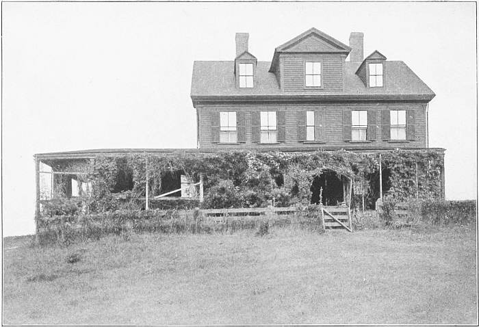 |
| CELIA THAXTER’S COTTAGE |
With this purpose in mind, we began our tour of the islands, book in hand, stopping first at the cottage of Mrs. Thaxter. One room is maintained somewhat as she left it, with every square foot of wall space covered by her pictures. But the flower-garden is sadly neglected. Only the vines that still clamber over the porch, and a few hollyhocks that stubbornly refuse to die, remain to suggest the dooryard where the garden flowers used to “fairly run mad with color.” The salt air and some peculiar richness of the soil seem to impart unusual brilliancy to the blossoms and strength to the roots of all kinds of flowers, whether wild or cultivated. Celia Thaxter was one of those people for whom flowers will grow. They responded with blushing enthusiasm to the constant manifestations of her love and tender care. Flowers have a great deal of humanity about them after all. They refuse to display their real luxuriance for cold, careless, or indifferent people, just as babies and dogs know how to distinguish between those who love them and those who love only themselves.
| “More dear to me than words can tell Was every cup and spray and leaf; Too perfect for a life so brief Seemed every star and bud and bell.” |
Celia Thaxter loved her flowers with a devotion born of the hours of solitude when they were her sole companions. “The little spot of earth on which they grow is like a mass of jewels. Who shall describe the pansies, richly streaked with burning gold; the dark velvet coreopsis and the nasturtiums; the larkspurs, blue and brilliant as lapis-lazuli; the ‘ardent marigolds’ that flame like mimic suns? The sweet peas are of a deep, bright rose-color, and their odor is like rich wine, too sweet almost to be borne, except when the pure fragrance of mignonette is added,—such mignonette as never grows on shore. Why should the poppies blaze in such imperial scarlet? What quality is hidden in this thin soil, which so transfigures all the familiar flowers with fresh beauty?”
Unfortunately, the mysterious quality hidden in the soil, assisted by the warm sunshine and the salt air, with all their powers could not maintain the island garden after the loving hands of its owner were withdrawn, and the little inclosure is now a mass of weeds.
Celia Laighton was brought to the Isles of Shoals as a child of five, and lived with her parents in a little cottage on White Island where her father was the keeper of the lighthouse. She grew to womanhood in the companionship of the rocks, the spray of the ocean, the seaweeds, the shells and the miniature wild life she discovered among them, the tiny wild flowers which her 226 sharp young eyes could find in the most secret crannies, and the marigolds, “rich in color as barbaric gold,” which she early learned to cultivate in “a scrap of garden literally not more than a yard square.” She shouted a friendly greeting to the noisy gulls and kittiwakes that fluttered overhead, chased the sandpipers along the gravelly beach, made friends and neighbors of the crabs, the sea-spiders and land-spiders, the sea-urchins, the grasshoppers and crickets, and set in motion armies of sandhoppers, that jumped away like tiny kangaroos when she lifted the stranded seaweed. And then the birds came to see her. The swallows gathered fearlessly upon the window-sills and built their nests in the eaves, seeming to know that the loving eyes watching their movements could mean no evil. Now and then a bobolink, an oriole, or a scarlet tanager would be seen. The song sparrows came in flocks to be fed every morning. With them, at times, came robins and blackbirds, and occasionally yellowbirds and kingbirds. Sometimes, in hazy weather, they would fly against the glass of the lighthouse with fatal results. “Many a May morning,” says Mrs. Thaxter, “have I wandered about the rock at the foot of the tower mourning over a little apron brimful of sparrows, swallows, thrushes, robins, fire-winged blackbirds, many-colored yellowbirds, nuthatches, catbirds, even the purple finch and scarlet tanager and golden oriole, and 227 many more beside—enough to break the heart of a small child to think of.”
It is no wonder that such a sympathetic soul could even summon the birds to keep her company—as she frequently did with the loons. “I learned to imitate their different cries; they are wonderful! At one time the loon language was so familiar that I could almost always summon a considerable flock by going down to the water and assuming the neighborly and conversational tone which they generally use: after calling a few minutes, first a far-off voice responded, then other voices answered him, and when this was kept up a while, half a dozen birds would come sailing in. It was the most delightful little party imaginable; so comical were they that it was impossible not to laugh aloud.”
To her love of birds and flowers, Mrs. Thaxter added a love of the sea itself, finding delight equally in the sparkle of the calm waves of summer or the wild beating of the surf in winter. She developed a marvelous ear for the music of the sea—something akin to that which enables John Burroughs to name a bird correctly from its notes, even when the songster is trying to imitate the call of another bird as the little impostors sometimes do. She says: “Who shall describe that wonderful voice of the sea among the rocks, to me the most suggestive of all the sounds in nature? Each island, every isolated 228 rock, has its own peculiar note, and ears made delicate by listening, in great and frequent peril, can distinguish the bearings of each in a dense fog.”
Equally well did she know humanity. The daily life of the fishermen, the kind and quantity of the fish they caught, the adventures they experienced, the stories they told, the hardships they endured, the little domestic tragedies that now and then took place in their humble cottages, the sufferings from illness or accident, were all matters of everyday knowledge to her and enlisted her profound sympathy.
Everything in nature appealed to her—the sea and sky, the sunrise and the sunset, the winds and storms, the birds and flowers, the butterflies and insects, the sea-shells and kelp, the fishes and all the lower forms of life—all were objects of careful observation in which she took delight; and to these must be added a deep interest in humanity, particularly of the kind which she met in fishermen’s cottages, where her good common sense and knowledge of simple remedies enabled her to render, again and again, a service in time of need when no other assistance could be obtained.
Such was the unique character whose spirit dominates the islands even to-day,—a lover of nature worthy to stand with Gilbert White, Thoreau, or Burroughs, a poet, an artist, a friendly neighbor, and a womanly woman.
It was a part of our good fortune to have the actual guidance in our tour of the islands of the only surviving brother of Mrs. Thaxter, Mr. Oscar Laighton. In his little motor boat he took us to the tiny island known as Londoners, where for many winters he was the sole inhabitant. Although advancing years have now made it inexpedient for him to live in solitude, the little cottage still remains ready for occupancy at any moment. We stepped inside expecting to see, in so desolate a spot, only such rude furnishings as might be found in some mountain cabin or hunter’s lodge. To our astonishment we found it a veritable little bower, a model of neatness and order, and every room, including the kitchen, filled with well-chosen pictures and books, as though some dainty fairy, of literary tastes, had planned it for her permanent abode. Among the highly prized ornaments were many pieces of china, painted by Mrs. Thaxter. To our minds, the most valuable article in the house—valuable because of the lesson it teaches—is a typewritten card, hanging conspicuously over the kitchen stove, with this cordial greeting to the uninvited guest:—
“Welcome to any one entering this house in shipwreck or trouble. You will find matches in the box on the mantel. The key to the wood-house is in this box. Start a fire in the stove and make yourself comfortable. There are some cans of food on shelf in the 230 pantry. Blankets will be found in the chamber on lower floor. There is a dory ready to launch in the boat-house.”
Three times have shipwrecked men entered the house and taken advantage of this kindly welcome.
Our next visit was to White Island, where, after much difficulty in getting ashore, we climbed to the top of the lighthouse. This is a very different structure from the old wooden building of Celia Thaxter’s childhood and only a small part of the original dwelling remains. But the landing is very much as she describes it. “Two long and very solid timbers about three feet apart are laid from the boat-house to low-water mark, and between those timbers the boat’s bow must be accurately steered.... Safely lodged in the slip, as it is called, she is drawn up into the boat-house by a capstan, and fastened securely.” Our boat was not drawn up, and we had to walk up the steep, slippery planks—with what success I shall not attempt to describe. Here, at night, the little Celia used to sit, with a lantern at her feet, waiting in the darkness, without fear, for the arrival of her father’s boat, knowing that the “little star was watched for, and that the safety of the boat depended in a great measure upon it.”
Haley’s Island, or “Smutty Nose,” as it was long ago dubbed by the sailors because of its long 231 projecting point of black rocks, lies between Appledore and Star Island. Of the two houses now remaining, one is the original cottage of Samuel Haley, an energetic and useful citizen, who once owned the island. Nearby fourteen rude and neglected graves tell a pathetic tale. The Spanish ship Sagunto was wrecked on Smutty Nose, during a severe snowstorm on a January night. The shipwrecked sailors saw the light in Haley’s cottage and crept toward it, benumbed with cold and overcome with the horror and fatigue of their experience. Two reached the stone wall in front of the house, but were too weak to climb over, and their bodies were discovered the next morning, frozen to the stones. Twelve other bodies were found scattered about the island. How gladly the old man would have given these poor sailors the warmth and comfort of his home could he have known the tragedy that was happening while he slept soundly only a few yards away!
Star Island, once the site of the village of Gosport, was in early days the most important of the group. Before the Revolution a settlement of from three to six hundred people carried on the fisheries of the island, catching yearly three or four thousand quintals of fish. All this business is now a thing of the past. The great shoals of mackerel and herring, from which the islands took their name, have disappeared—driven away 232 or killed by the steam trawlers. The old families departed long since, and new ones have never come to take their places, save a few lobster fishermen, who with difficulty eke out a bare living. A quaint little church of stone is perched upon the highest rocks of Star Island, but I fear the attendance is small, even in the summer time.
We found our way back to Appledore, content to spend the remaining days of our visit on this the largest and most inviting of the group.
| “A common island, you will say; But stay a moment; only climb Up to the highest rock of the isle, Stand there alone for a little while, And with gentle approaches it grows sublime, Dilating slowly as you win A sense from the silence to take it in.” |
Lowell was right. The greatest charm of the islands is felt when you stand on “the highest rock of the isle,” looking out upon the ever sparkling sea that stretches
| “Eastward as far as the eye can see— Still Eastward, eastward, endlessly”; |
and feeling the restful quietude of the spot. I fancy Celia Thaxter stood upon this rock when she sang—
| “O Earth! thy summer song of joy may soar Ringing to heaven in triumph. I but crave The sad, caressing murmur of the wave That breaks in tender music on the shore.” |
| 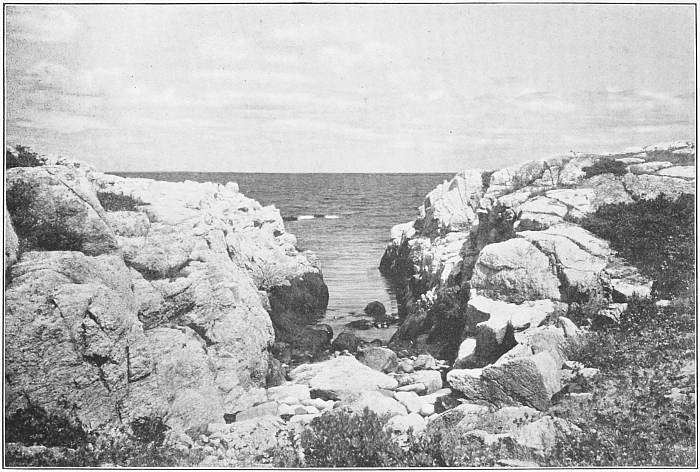 |
| APPLEDORE |
VIII
A DAY WITH JOHN BURROUGHS
VIII
A DAY WITH JOHN BURROUGHS
“Oh, everybody here calls him Uncle John,” was the quick reply to one of my queries of the man who drove me to the country house of John Burroughs, near Roxbury, New York. He had been saying many pleasant things about the distinguished naturalist, dwelling particularly upon his kind heart and genial nature. I noticed that he never referred to him as “Dr.” Burroughs, nor “Mr.” Burroughs, nor even as “Burroughs,” but always as “John” or “good old John,” or most often, “Uncle John.” So I asked by what name the people called him, and the answer seemed to me the most sincere compliment that could have been paid.
When a man has received many honorary degrees which the great universities have felt proud to confer, it is an indication that those most competent to judge have appreciated his intellectual attainments or public services, or both. When the people of his native village bestow upon him the title of “Uncle,” it is an indication that the achievement of fame has not eclipsed the lovable qualities in his character nor dimmed the affectionate regard of the neighbors who have learned 236 to know him as a man. There is a certain friendliness implied in the title of “Uncle,” while it also suggests respect. If you live in a small town you call everybody by his first name. But one of your number becomes famous. To call him “John” seems too familiar. It implies that you do not properly appreciate his attainments. To call him “Mister” or “Doctor” seems to make a stranger of him, and you would not for the world admit that he is not still your friend. “Uncle” is often a happy compromise, particularly if he still retains the neighborly qualities of his less distinguished years.
I do not know that the people of Roxbury ever followed this line of reasoning, but it does seem quite appropriate that they should call their most distinguished fellow citizen “Uncle John.” He was born on a farm near this little village in the Catskills on the 3d of April, 1837, in the very time of the return of the birds. Perhaps this is why he is so fond of them and particularly of Robin Redbreast, that fine old-fashioned democrat, who is one of his prime favorites. He spent his boyhood here, and now, in the fullness of his years, quietly returns each summer to the old familiar haunts, living the same simple life as of yore, except that the pen is now his tool instead of the farming implements.
The little red schoolhouse, where Burroughs and Jay Gould went to school together, may still 237 be seen in the valley, standing in the open country with one of those rounded hilltops in the background which form the characteristic feature of the Catskills. Near by is the Gould birthplace, now a comfortable-looking farmhouse, glistening with a fresh coat of white paint. “Take away the porch and the back extension, and the top story and the paint,” said my driver, “and you will have the original ‘birthplace.’” He said that when he first began the livery business in Roxbury many people came to see the birthplace of Jay Gould, but no one mentioned Burroughs. Now it is just the other way, and the number of visitors increases yearly, all anxious to see the home of the famous philosopher. Yet these two men, one of whom seems to have belonged to the generations of the past while the other is a part of the ever-living present, were boys together in the same schoolhouse more than sixty years ago.
As my conveyance drew up to the door, Mr. Burroughs came out with a hearty welcome. He was alone, for during the summer, when he retires to this place for work, he prefers to do his own housekeeping in his own way. “I am a good cook,” said he, “but a poor housekeeper.” I did not agree with the latter part of the statement, for as I looked around I thought he had about all he needed and everything was clean. Moreover, things were where he could get at them, and 238 from a man’s point of view what better housekeeping could anybody want?
The house which he now occupies is a plain-looking farmhouse, built in 1869 by Mr. Burroughs’s elder brother. Its most distinctive feature is the rustic porch, a recent addition, which serves the purposes of living-room, library, and bedroom. Mr. Burroughs is a believer in fresh air and during the summer likes to sleep out of doors. He has a rustic table, covered with favorite books. When he is not at work, he likes to sit on the porch and enjoy what he calls “the peace of the hills.” Across the road there is a field, broad and long and crossed by numerous stone walls. In the distance are the hills of his well-loved Catskills, their smoothly undulating lines giving a sense of repose. At the right of the house I noticed a small patch of green corn, in front of which were some rambling cucumber vines. In the rear and at the left were a few old apple trees, and farther back, capping the summit of a ridge, a fine grove of trees, standing in orderly array, like an army ready for action. Mr. Burroughs has named the place, in characteristic fashion, “Woodchuck Lodge,” “because,” he said, “I can sit here and count the woodchucks, sometimes eight or ten at a time.”
| 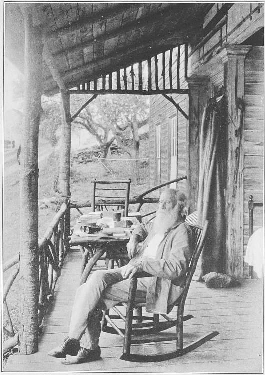 |
| JOHN BURROUGHS AT WOODCHUCK LODGE |
Not wishing to interfere with his plans, I expressed the hope that I was not interrupting him, when he quickly replied, “O, my work for 239 to-day is all done. I rise at six and usually do all my writing before noon.” “You are like Sir Walter Scott, then,” said I, “who always began early and, as he said, ‘broke the neck of the day’s work’ before the family came down to breakfast and was ‘his own man before noon.’” “Ah, he was a wonderful man,” replied Mr. Burroughs. Then, after a pause and with a little sigh—“I wish I could invest these hills with romance as he did the hills of Scotland.” “But you have invested them with romance,” I said, “although of a different kind.” “Yes,” he replied, with brightening eyes, “with the romance of humanity and of nature, the only kind to which they are entitled.”
I could not help thinking how wonderfully like Wordsworth this seemed. The romance of humanity and nature! Is it not this, which, since Wordsworth’s time, has given a new charm to the hills and valleys of Westmoreland and Cumberland, causing every visitor to seek the dwelling-places of the poet? And are not those who spend their summers in the Catskills finding a new delight in those beautiful mountains because of the spell which John Burroughs has thrown upon them?
Wordsworth wrote the history of his own mind and called it “The Prelude,” intending it to be but the introduction to a greater poem to be entitled “The Recluse,” which should be a broad 240 presentation of his views on Man, Nature, and Society. “The Excursion” was to be the second part, but the third was never written. He conceived that this great work would be like a Gothic church, the main body of which would be represented by “The Recluse,” while “The Prelude” would be but the ante-chapel. All his other poems, when properly arranged, would then be “likened to the little cells, oratories, and sepulchral recesses, ordinarily included in those edifices.”
Burroughs is far too modest to compare his writings to a cathedral, but he has nevertheless, like Wordsworth, written himself into nearly all of them. Following the English poet’s simile in a modified form, we may think of the product of his pen, not as a cathedral, but as a mansion of many rooms, each furnished with beautiful simplicity and charming taste to represent some different phase of the author’s mind, and each equipped, so to speak, with a mirror, possessing all the magic but without the unpleasant duty of the one in Hawthorne’s tale, so arranged as to reflect the very soul of its builder with perfect fidelity.
So sincere is Burroughs that you feel certain he is constantly revealing his true self. Therefore, when he praises Wordsworth as the English poet who has touched him more closely than any other, you begin to realize the bond of sympathy. When he says that Wordsworth’s poetry has the 241 character of “a message, special and personal to a comparatively small circle of readers,” you know that he is one of the few who have taken the message to heart.
Wordsworth’s love of Nature was of the same kind as the American poet’s. “Nature,” says Burroughs, “is not to be praised or patronized. You cannot go to her and describe her; she must speak through your heart. The woods and fields must melt into your mind, dissolved by your love for them. Did they not melt into Wordsworth’s mind? They colored all his thoughts; the solitude of those green, rocky Westmoreland fells broods over every page. He does not tell us how beautiful he finds Nature, and how much he enjoys her; he makes us share his enjoyment.” Substitute Burroughs for Wordsworth, and Catskill for Westmoreland, and you have in this passage a fine statement of the reason why John Burroughs is winning the gratitude of more and more people every year.
Wordsworth thought of Nature as an all-pervading Presence, something mysterious and sublime, a supreme Being,—
| “The anchor of my purest thoughts, the nurse, The guide, the guardian of my heart, and soul Of all my moral being.” |
Burroughs does not rise to such ethereal heights, but recognizes that the passion for Nature is “a form of, or closely related to, our 242 religious instincts.” He lives closer to Nature than Wordsworth ever did. His knowledge of her secrets is far deeper and more intimate. He is a naturalist and scientist, as well as a man of poetic temperament. He has a trained eye that sees what others would miss. “There is a great deal of byplay going on in the life of Nature about us,” he says, “a great deal of variation and outcropping of individual traits, that we entirely miss unless we have our eyes and ears open.”
Probably no other man has a keener ear for the music of the birds. He possesses that “special gift of grace,” to use his own expression, that enables one to hear the bird-songs. Not only can he distinguish the various species by their songs, but he instantly recognizes a new note. He once detected a robin, singing with great spirit and accuracy the song of the brown thrasher, and on another occasion followed a thrush for a long time because he recognized three or four notes of a popular air which the bird had probably learned from some whistling shepherd boy. He loves to put words into the mouths of the birds to fit their songs and to fancy conversations between husband and wife upon their nest. The sensitiveness of his ear for bird-music is wonderfully illustrated in his story of a new song which he heard on Slide Mountain in the Catskills. “The moment I heard it, I said, ‘There is a new 243 bird, a new thrush,’ for the quality of all the thrush songs is the same. A moment more and I knew it was Bicknell’s thrush. The song is in a minor key, finer, more attenuated, and more under the breath than that of any other thrush. It seemed as if the bird was blowing into a delicate, slender, golden tube, so fine and yet so flute-like and resonant the song appeared. At times it was like a musical whisper of great sweetness and power.” I do not believe that Wordsworth or any other poet, however passionate his love of Nature, ever heard such a bird-song or could describe its qualities with so keen a discernment.
Mr. Burroughs made me think of Wordsworth again when, as we sat looking over toward the Catskills, he explained his residence at Woodchuck Lodge by referring to his enjoyment of the open country and the peace and quiet of the scene. For, says Wordsworth,—
| “What want we? Have we not perpetual streams, Warm woods, and sunny hills, and fresh green fields And mountains not less green, and flocks and herds And thickets full of songsters, and the voice Of lordly birds, an unexpected sound Heard now and then from morn to latest eve, Admonishing the man who walks below Of solitude and silence in the sky?” |
After an hour of pleasant conversation my host arose, saying he would build his fire and we would have our dinner. In due course we sat 244 down to a repast that would have gladdened the heart of General Grant himself. The old veteran, as many will remember, after his return from a tour of triumph around the world, in which he had been banqueted by kings and emperors, dukes, millionaires, and public societies, once slipped into a farmer’s kitchen for a dinner of corned beef and cabbage, declaring that he was glad to get something good to eat. Our meal did not consist of corned beef and cabbage, but of corn cakes, made of fresh green corn plucked not a couple of yards from the kitchen door and baked on a griddle by one of the foremost literary men of America. There were other good things, plenty of them, but those delicious cakes with maple syrup of the genuine kind exactly “touched the spot,” as old-fashioned folks used to say. Mine host must have noticed the unusual demands upon his crop of corn and marveled to see the rapid disappearance of the cakes, but he did not seem displeased. On the contrary, as he brought in, time after time, a fresh pile of the steaming flapjacks, his face beamed with the smile that betokens genuine hospitality. Our conversation at table was mostly on politics, in which Mr. Burroughs takes keen interest and upon which he is a man of decided convictions; but this is a subject which he must be allowed to elucidate in his own way.
| 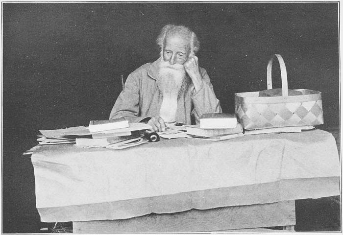 |
| JOHN BURROUGHS AT WORK |
After dinner, Mr. Burroughs laughingly remarked 245 that his study was the barn, and we walked up the road to visit it. “I cannot bear to be cramped by the four walls of a room,” said he, “so I have moved out to the barn. I enjoy it greatly. The birds and the small animals come to see me every day and often sit and talk with me. The woodchucks and chipmunks, the blue jays and the hawks, all look in at me while I am at work. A red squirrel often squats on the stone wall and scolds me, and the other day an old gray rabbit came. He sat there twisting his nose like this” (here Mr. Burroughs twisted his own nose in comical fashion), “and seemed to be saying saying—
| ‘By the pricking of my thumbs Something wicked this way comes.’” |
Arrived at the barn, Mr. Burroughs seated himself at his “desk.” With twinkling eyes he explained that it was an old hen-coop. The inside was stuffed with hay to keep his feet warm, and if the weather happens to be chilly, he wears a blanket over his shoulders. A market-basket contains his manuscript and a few books complete the equipment. The desk is just inside the wide-open doors of the barn, and he sits with his face to the light. “There is a broad outlook from a barn door,” said he, smilingly.
Beyond the low stone wall, where his animal friends seat themselves for the daily conversations, is an apple orchard, and in the distance are 246 the rounded summits of the Catskills—a view as peaceful and refreshing as the one from the house. Here Mr. Burroughs is never lonely. One day a junco, or slate-colored snowbird, came on a tour of inspection. She decided to build her nest in the hay. She scorned all the materials so close at hand and brought everything from outside. Her instinct had taught her to find certain materials for a nest, and she could not suddenly learn to make use of the convenient hay. Mr. Burroughs, in speaking of this, told me of a phœbe who built her nest over the window of his house. She brought moss to conceal it, but as the moss did not match the color of the house, she succeeded only in making her nest more conspicuous. Since the evolution of the species, phœbes have built their nests on the sides of cliffs, using moss of the color of the rocks to conceal them. The little bird who, like the junco, followed her instincts, failed to note the difference between the house and the rocks.
In conversation of this kind, Mr. Burroughs turned the hours into minutes, and I was surprised to look up and see the team approaching which was to carry me away. After a reluctant farewell, we drove over the brow of a hill and stopped for a few moments before the farmhouse which was the birthplace of John Burroughs. A comical incident took place. It was raining hard when we arrived and we drove into the barn, 247 directly across the road from the house. An old dog and a young one were here, keeping themselves dry from the shower. I set up my camera in the barn, to take a picture of the house. As I did so, I noticed the old dog walk deliberately out in the rain and perch himself upon the doorstep, where he turned around once or twice as if trying to strike the right attitude. This point determined, he stood perfectly still until I had taken the picture, and when I started to put away the camera, came trotting back to the barn. I do not know what instinct, if any, prompted the dog to wish his picture to be taken, but he was no more foolish than many people,—men, women, and children,—who have insisted upon getting into my pictures, though they knew there was no possibility of their ever seeing them.
Mr. Burrough’s permanent home is at West Park, on the Hudson River, a few miles south of Kingston. Here he has a farm mostly devoted to the cultivation of grapes. He occupies a comfortable stone house, pleasantly situated and nearly surrounded by trees of various kinds. Back of the house and near the river is the study or den, a little rustic building on the slope of the hill, where Mr. Burroughs can write undisturbed by the business of the farm. The walls are partly lined with bookshelves, well crowded with favorite volumes. Near by is a small rustic summer house from which a delightful view of the river 248 may be seen for miles to the north and to the south. This is why the place is called “Riverby”—simply “by-the-river.” It has been the author’s home for many years.
Even the study, however, did not satisfy Mr. Burroughs’s longing for quiet, and so he built another retreat about a mile and a half west of the village which he calls “Slabsides.” It is reached by walking up a hill and passing through a bit of hemlock woods which I found quite charming. Slabsides is a rustic house like many camps in the Adirondacks. It is roughly built, but sufficiently comfortable, and has a pleasant little porch, at the entrance to which a climbing vine gives a picturesque effect which is greatly enhanced by a stone chimney, now almost completely clothed with foliage. It is in an out-of-the-way hollow of the woods where nobody would be likely to come except for the express purpose of visiting Mr. Burroughs. For several summers this was his favorite retreat. He would walk over from his home at Riverby and stay perhaps two or three weeks at a time, doing his own cooking and housekeeping. Of late years, however, Slabsides has been less frequently used, Woodchuck Lodge having received the preference.
All of these abodes, whether you see them within or without, reveal the secret of John Burroughs’s strength. They coincide with his personal appearance, his dress, his conversation, his 249 manner. It is the strength of absolute simplicity. Everything is sincere. Nothing is superfluous. There is no such thing as “putting on airs.” Fame and popularity have not spoiled him. He is genuine. You feel it when you see his workshops. You know it when you meet the man.
Mr. Charles Wagner, the apostle of “the simple life,” has said, “All the strength of the world and all true joy, everything that consoles, that feeds hope, or throws a ray of light along our dark paths, everything that makes us see across our poor lives a splendid goal and a boundless future, comes to us from people of simplicity, those who have made another object of their desires than the passing satisfaction and vanity, and have understood that the art of living is to know how to give one’s life.”
John Burroughs is one of these “people of simplicity,” and his contribution to our happiness lies in his rare power of bringing to his reader something of his own enjoyment of Nature—an enjoyment which he has been able to obtain only through the living of a simple life. He is the complete embodiment of Emerson’s “forest seer”:—
IX
GLIMPSES OF THE YELLOWSTONE
IX
GLIMPSES OF THE YELLOWSTONE
The Yellowstone National Park is Nature’s jewel casket, in which she has kept her choicest gems for countless generations. Securely sheltered by ranges of rugged mountains they have long been safe from human depredations. The red man doubtless knew of them, but superstition came to the aid of Nature and held him awe-struck at a safe distance. The first white man who came within sight of these wonders a century ago could find no one to believe his tales, and for a generation or two the region of hot springs and boiling geysers which he described was sneeringly termed “Colter’s Hell.” Only within the last half-century have the generality of mankind been permitted to view these precious jewels, and even then jealous Nature, it would seem, did not consent to reveal her treasures until fully assured that they would have the protection of no less powerful a guardianship than that of the National Government.
On the 18th of September, 1870, a party of explorers, headed by General Henry D. Washburn, then Surveyor-General of Montana, emerged from the forest into an open plain and suddenly found 254 themselves not one hundred yards away from a huge column of boiling water, from which great rolling clouds of snow-white vapor rose high into the air against the blue sky. It was “Old Faithful” in action. Then and there they resolved that this whole region of wonders should be made into a public park for the benefit of all the people, and renouncing any thought of securing the lands for personal gain, these broad-minded men used their influence to have the National Congress assume the permanent guardianship of the place. And now that protection is fully assured these jewels of Nature may be seen by you and me.
Those who have traveled much will tell you that Nature is prodigal of her riches, and, indeed, this would seem to be true to one who has spent a summer among the snow-clad peaks of the Alps, or dreamed away the days amid the blue lakes of northern Italy, or wandered about in the green forests of the Adirondacks, where every towering spruce, every fragrant balsam, every dainty wild flower and every mossy log is a thing of beauty. But these are Nature’s full-dress garments, just as the broad-spreading wheatfields of the Dakotas are her work-a-day clothes. Her “jewels” are safely locked up in places more difficult of access, where they may be seen by only a favored few; and one of these safe-deposit boxes, so to speak, is the Yellowstone National Park.
| 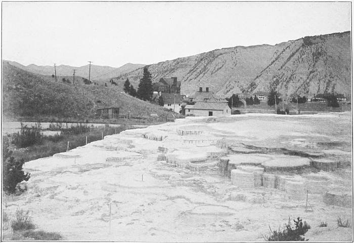 |
| HYMEN TERRACE |
The first collection of these natural gems is at 255 Mammoth Hot Springs, and here my camera, as if by instinct, led me quickly to the daintiest in form and most delicate in colorings of them all, a beautiful formation known as Hymen Terrace. A series of steps, covering a circular area of perhaps one hundred feet in diameter, has been formed by the overflow of a hot spring. The terraces consist of a series of semicircular and irregular curves or scallops, like a combination of hundreds of richly carved pulpits, wrought in a soft, white substance resembling coral. Little pools of glistening water reflect the sunlight from the tops of the steps, while a gently flowing stream spreads imperceptibly over about one half the surface, sprinkling it with millions of diamonds as the altar of Hymen ought to be. The pools are greens and blues of many shades, varying with the depth of the water. The sides of the steps are pure white in the places where the water has ceased to flow, but beneath the thin stream they range in color from a rich cream to a deep brown, with all the intermediate shades harmoniously blended. From the highest pools, and especially from the largest one at the very summit of the mound, rise filmy veils of steam, softening the exquisite tints into a rich harmony of color against the azure of the sky.
The Terrace of Hymen is the most exquisite of the formations, but there are others much larger and more magnificent. Minerva Terrace 256 gave me a foreground for a charming picture. Beyond its richly colored steps and sparkling pools were the splendid summits of the Gallatin Range towering more than ten thousand feet above the level of the sea and seeming, in the clear mountain air, to be much nearer than they really are. Hovering above their peaks were piles upon piles of foamy clouds, through which could be seen a background of the bluest of skies, while down below were the gray stone buildings with their bright red roofs that form the headquarters of the army guarding the park.
Jupiter Terrace, the most imposing of all these formations, extends a quarter of a mile along the edge of a brilliantly colored mound, rising about three hundred feet above the plain upon which Fort Yellowstone is built. Pulpit Terrace, on its eastern slope, reproduces upon a larger scale the rich carvings and exquisite tints of Hymen, though without the symmetry of structure. The springs at its summit are among the most strikingly beautiful of these unique formations which I like to call the “jewels” of Nature. Two large pools of steaming water lie side by side, apparently identical in structure, and separated only by a narrow ridge of lime. The one on the left is a clear turquoise blue, while its neighbor is distinctly Nile green. Surrounding these springs are several smaller pools, one a rich orange color, another light brown, and a third 257 brown of a much darker hue. The edges of all are tinted in yellow, brown, and gold of varied shades. The pools are apparently all a part of the same spring or group of springs, and subject to the same conditions of light; yet I noticed at least five distinct colors in as many pools. The water itself is colorless and the different hues must be imparted by the colorings of the lime deposits, influenced by the varying depth and temperature of the water.
What is known as “the formation” of the Mammoth Hot Springs covers perhaps fifty or sixty acres on the slope of Terrace Mountain. It is a heavy deposit of lime or travertine, essentially the same as the stalagmites and stalactites which one sees in certain caverns. When dry it is white and soft like chalk. The colorings of the terraces are of vegetable origin, caused by a thin, velvety growth, botanically classed as algæ, which flourishes only in warm water. The heat of rocks far beneath the surface warms the water of the springs, which, passing through a bed of limestone, brings to the surface a deposit of pure calcium carbonate. Wherever the flow of water remains warm the algæ appear and tint the growing formation with as many shades of brown as there are varying temperatures of the water. When the water is diverted, as is likely to happen from one season to the next, the algæ die and the surfaces become a chalky white.
Leaving the Hot Springs, the road passes through the Golden Gate, where, on one side, a perpendicular wall of rock rises to a height of two hundred feet or more, and on the other are the wooded slopes and rocky summit of Bunsen Peak—a beautiful cañon, where the view suggests the greater glories of Swiss mountain scenery, but for that very reason is not to be mentioned here among the rare gems of the park. Nor shall I include the “Hoodoos,” which, though distinctly unusual, are far from beautiful. An area of many acres is covered with huge fragments of massive rocks, piled in disorderly confusion, as though some Cyclops, in a fit of ugly temper, had torn away the whole side of a mountain and scattered the pieces. Through these rocks project the whitened trunks of thousands of dead trees,—a sort of ghostly nightmare through which we were glad to pass as quickly as possible.
| 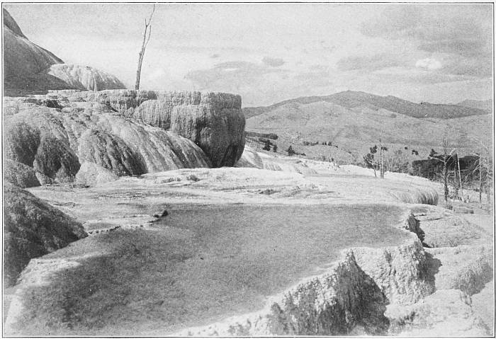 |
| PULPIT TERRACE |
We stopped for lunch at the Norris Geyser Basin, and here saw some miniature geysers, as a kind of preparation for the greater ones beyond. The “Constant,” true to its name, throws up a pretty little white fountain so often that it seems to prepare for a new eruption almost before the previous one has subsided. The “Minute Man” is always on duty and pops up his little spray of hot water, fifteen feet high, every minute or two. The “Monarch,” near by, is much 259 larger, but not at all pretty. It throws up a stream of black, muddy water seventy-five to one hundred feet high about every forty minutes.
Some of these geysers are steady old fellows who have found their appointed task in life and have settled down to perform it with commendable regularity. The Norris Basin, however, seems to be the favorite playground of the youngsters,—a frisky lot of geysers of no fixed habits and a playful disposition to burst out in unexpected places. Such is the New Crater, which asserted itself with a great commotion in 1891, bursting forth with the violence of an earthquake. Another erratic young fellow is the “Fountain Geyser,” in the Lower Basin. In July, 1899, he was seized with a fit of the “sulks” and for three months refused to play at all. In October he decided to resume operations and behaved quite well for ten years, when he suddenly took a notion to abandon his crater for the apartments of his neighbor next door. Apparently the furnishings of his new abode did not suit him, for he began at once to throw them out with great violence, hurling huge masses of rock with volcanic force to a height of two hundred feet. Amid terrific rumblings and the hissing of escaping steam, this angry outburst continued for several days, and did not wholly cease for nearly two months. Since then the “Fountain” has settled down to the ordinary daily occupation of 260 a self-respecting geyser. When I saw him he was as calm and serene as a summer’s day, and to all appearances had never been guilty of mischief, nor even exhibited a ruffled temper in all his life. Indeed, had I not known his history (inconceivable in one of the gentler sex), I should have personified this geyser in the feminine gender, because of his exquisite beauty. A great jewel seemed to be set into the surface of the earth. Its smooth upper face, about thirty feet in diameter, was level with the ground upon which we stood. Its color, at first glance, seemed to be a rich turquoise blue, but as we looked into the clear, transparent depths there seemed to be a hundred other shades of blue, all blending harmoniously. In the farthest corner, beneath a shelf or mound of geyserite, appeared the opening of a fathomless cave. All around its edges, and continuing in wavy lines of delicate tracery around the bottom of the bowl, were marvelous patterns of exquisite lacework, every angle seeming to catch and throw back its own particular ray of bluish light. There was not a ripple to disturb the surface, not a bubble to foretell the violent eruption which a few hours would bring forth, and only a thin film of vapor to suggest faintly the extraordinary character of this beautiful pool.
Only a few hundred feet away is another curious phenomenon in this region of surprises. It 261 is a cauldron of boiling mud, measuring forty or fifty feet in diameter, known as the “Mammoth Paint Pots,” where a mass of clay is kept in a state of continuous commotion. Millions of bubbles rise to the surface and explode, sputtering like a thick mess of porridge kept at the boiling point. The color is a creamy white where the ebullition is greatest, but thick masses thrown up around the edges and allowed to cool have assumed a delicate shade of pink. A smaller but more beautiful formation of the same kind is seen near the Thumb Station on the Yellowstone Lake.
As we proceeded, Nature’s jewels seemed to increase in number and magnificence. Turquoise Spring, a sheet of water one hundred feet wide, has all the beauty of the Fountain Geyser in the latter’s quiet state, with an added reputation for tranquillity, for it is not a geyser at all. Near by is Prismatic Lake, about four hundred feet long and two hundred and fifty feet wide. Its center is a very deep blue, changing to green of varying shades, and finally, in the shallowest parts, to yellow, orange, and brown. It is a great spring from the center of which the water flows in delicate, wavy ringlets. The mineral deposits have formed countless scallops, like miniature terraces, a few inches high, sculpturing a wonderful pattern in hues of reds, purples, and browns, delicately imposed upon a background of gray. A thin veil of rising steam was carried away by the 262 wind just enough to reveal the wonderful colorings to our eyes, while the sun added to the bewildering beauty of the spectacle by changing the vapor into a million prisms reflecting all the colors of the rainbow.
In this connection I must not fail to mention the Morning-Glory Spring, where the action of a geyser has carved out a deep bowl, twenty feet in diameter. It would seem as though Nature had sunk a gigantic morning-glory into the earth, leaving its rim flush with the surface and yet retaining, clearly visible beneath the smooth surface of the transparent water, all the delicate shades of the original flower.
The Sapphire Spring, not far away, is another of the little gems of the region. It is a small, pulsating spring, and the jewel itself is not less remarkable than its extraordinary setting, resembling coral. The constant flow of the waters from a center to all directions has caused the formation of a series of irregular concentric circles, broken into little knobs or mounds, from which the vicinity takes its name of the “Biscuit Basin.”
As we approached the Upper Geyser Region, the number and variety of these highly colored pools, hot springs, geysers, and strange formations increased steadily, until at last we stood in the presence of “Old Faithful,” the crown jewel of the collection, the Koh-i-noor of Nature’s casket.
A strong breeze from the north was blowing as I stood before the geyser for the first time, and for that reason, I decided to place my camera directly to the west. A small cloud of steam was rising, which seemed gradually to increase in volume. Then, as I watched, a small spray of water would shoot up occasionally above the rim of the crater. Then a puff of steam and another spray, breaking into globules as the wind carried it away. Then silence. Suddenly a large, full stream shot up a distance of twenty or thirty feet and fell back again, and the crater remained quiet for at least five minutes. Is that all? I thought. Does its boasted regularity only mean that while it plays once in sixty-five minutes, yet the height of some of the eruptions may be only trifling? I began to feel doubtful, not to say disappointed. The column of steam seemed smaller, and I wondered if I should have to wait another hour for a real eruption, when suddenly the lazily drifting cloud became a giant, like the genie in the Arabian Nights. Up into the air shot a huge column of water, followed instantly by another still higher, then another, until in a moment or two there towered above the earth a gigantic column of boiling water one hundred and fifty feet high. Straight as a flagstaff it seemed on the left, while to the right rolled the waving folds of a huge white banner, obscuring the blue of the sky in one great mass of snowy vapor. For several 264 minutes the puffs of steam rolled up, and the fountain continued to play. Then, little by little, its form grew less, its force weakened, and at last there was only the little lazy pillar of vapor outlined against the distant hills.
Again and again during the day I watched it with an ever-increasing sense of fascination, which reached its climax in the evening, when the eruption was lighted by the powerful search-light on the hotel. As the great clouds of steam rolled up, the strong light seemed to impart a vast variety of colors, ranging from rich cream to yellow, orange, brown, and purple, blended harmoniously but ever changing like the rich silk robes of some Oriental potentate,—a spectacle of bewildering beauty, defying the power of pen to describe or brush to paint.
| OLD FAITHFUL |
There are other geysers greater than “Old Faithful.” “The Giant” plays to a height of two hundred and fifty feet, and the “Grand” and “Beehive” nearly as high; the “Grotto” has a more fantastic crater; the “Castle” has the largest cone, and with its beautifully colored “Castle Well” is more unique; and the “Riverside,” which plays a stream diagonally across the Firehole River, makes a more striking scenic display. But all of these play at irregular intervals and with far less frequency, varying from a few hours to ten or twelve days between eruptions. On the other hand, the regularity with which 265 “Old Faithful” sends his straight, magnificent column to the skies is fascinating beyond description. Every sixty-five or seventy minutes, never varying more than five minutes, day and night, in all seasons and every kind of weather, “Old Faithful” has steadily performed his task since first discovered in 1870 until the present time, and no man can tell for how many centuries before.
| “O! Fountain of the Wilderness! Eternal Mystery! Whence came thy wondrous power? For ages,—long before the eye of Man Found access to thy charm, thou’st played Thy stream of marvelous beauty. In midnight dark no less than glorious day, In wintry storms as well as summer’s calm, Oblivious to the praise of men, Each hour to Heaven thou hast raised Thine offering pure, of dazzling white. Thy Maker’s eye alone has seen The tribute of thy faithfulness, And thou hast been content to play thy part In Nature’s solitude.” |
Not alone as the guardian of Nature’s jewels is the Yellowstone National Park remarkable. Even if the wonderful geysers, hot springs, and many-colored pools were taken away,—locked up in a strong box and hidden from sight as jewels often are,—the more familiar phases of natural scenery, such as mountains, rivers, lakes, and waterfalls would make it one of the wonder-places 266 of America. On the eastern boundary is the great Absaroka Range, with peaks rising over 10,000 feet. In the northwest corner is the Gallatin Range, dominated by the Electric Peak, 11,155 feet high, covered with snow, and so charged with electricity as to make the surveyor’s transit almost useless. The Yellowstone and Gardiner Rivers, which join at the northern boundary, are separated within the park by a range of mountains of which the highest is Mount Washburne (10,350 feet), named for the leader of the expedition of 1870. Farther south, and midway between the Upper Geyser Basin and the Yellowstone Lake, is the Continental Divide. The road passes between two small lakes, one of which discharges its waters into the Atlantic Ocean by way of the Yellowstone, the Missouri, and the Gulf of Mexico, while the other flows into the Pacific through Snake River and the Columbia. From a point a few miles to the east Lake Shoshone may be seen far below, and seeming to tower directly above it, but really fifty miles away, just beyond the southern boundary of the park, are the three sentinels of the Teton Range, the highest 13,741 feet above the sea. The entire park is in the heart of the Rocky Mountains, its lowest level being over 6000 feet elevation.
| 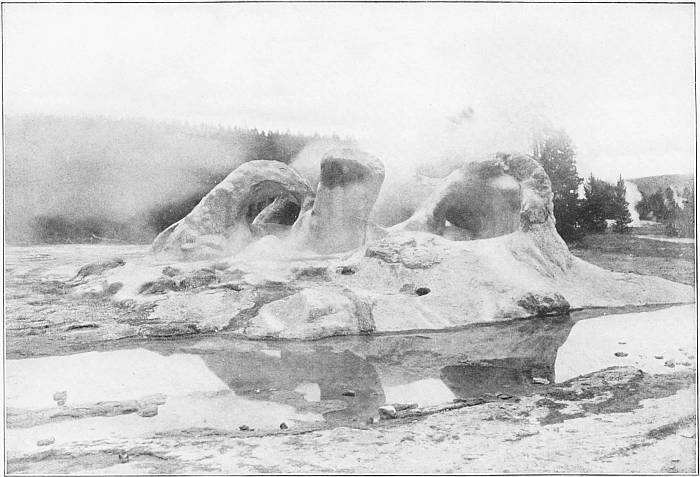 |
| THE GROTTO GEYSER |
The park is full of lakes and streams varying in size from the hundreds of little pools and brooks, hidden away among the rocks, to the 267 great Yellowstone Lake, twenty miles in width, and the picturesque river of the same name. Here and there are beautiful cascades which one would go miles to see anywhere else, but the surfeited travelers give them only a careless glance as the stages pass without stopping. The Kepler Cascades tumble over the rocks in a series of falls of more than a hundred feet, making a charming veil of white lace, against a dark background of rocks and pines. The Gibbon Falls, eighty feet high, are nearly as attractive, while the little Rustic Falls, of sixty feet, in Golden Gate Cañon, are really quite delightful. These, and many others, are passed in comparative indifference, for the traveler has already seen many wonderful sights and knows that greater ones are yet in store. His anticipations are realized with good measure running over, when at last he catches his first glimpse of the great Cañon of the Yellowstone.
With us this glimpse came at the Upper Falls, where the Yellowstone River suddenly drops one hundred and twelve feet, suggesting the American Fall at Niagara, though the volume of water is not so great. It is more beautiful, however, because of the wildness of the scenery. Lower down, the river takes another drop, falling to the very bottom of the cañon. Here the cataract is more than twice the height of Niagara, and though lacking the width of the stream 268 that makes the latter so impressive, is in every respect far more beautiful.
One must stand near the edge of the rocks at Inspiration Point to grasp the full majesty of the scene. We are now three miles below the Great Falls. The Upper Fall, which at close range is a great, beautiful white sheet of water, rolling with imperial force over a rocky precipice, seems only a trifling detail in the vast picture—a mere touch of dazzling white where all else is in color. At the bottom is the blue of the river, broken here and there into foamy white waves. Pines and mosses contribute touches of green. The rocky cliffs are yellow and gold, deepening into orange. In the distance a great rock of crimson stands like a fortress, with arched doorway, through which is seen a vista of green fields. But this is an optical illusion, as a strong glass will reveal. The doorway is only a pointed fir, which the distance has softened into the shadow of a pointed arch. Mediæval castles rear their buttressed fronts on inaccessible slopes. Cathedral spires, as majestic as those of Cologne, and numerous as the minarets of Milan, stand out in bold relief. Away down below is an eagle’s nest, into which we can look and see the birds, yet it is perched upon a pinnacle so high that if one were to stand at the level of the river and look up, it would tower above him higher than the tallest building in the world.
| 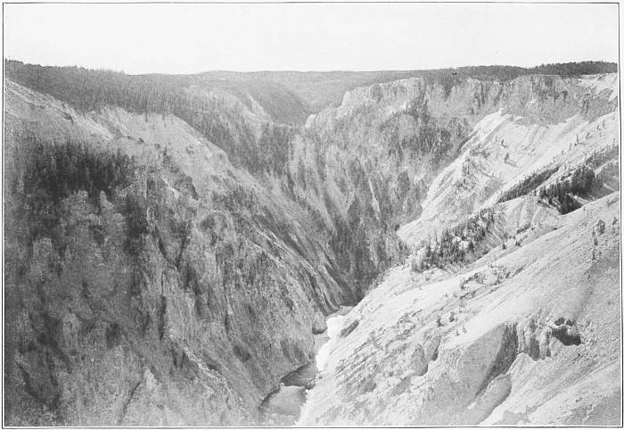 |
| THE CAÑON OF THE YELLOWSTONE RIVER |
Not a sign of the handiwork of man appears in any direction. The gorgeous spectacle, reveling in all the hues of the rainbow, is just as Nature made it—let the geologist say, if he can, how many thousands of years ago. And above all this splendid panorama, unequaled save by the glory of the sunset sky, is that same rich blue which Nature employs to add the final touch of loveliness to all her greatest works, and yet reserves enough to beautify the more familiar scenes at home.
X
THE GRAND CAÑON OF ARIZONA
X
THE GRAND CAÑON OF ARIZONA
I arrived at the cañon on a cold night in January, 1903, alone. There were few guests at the hotel, which was a capacious log cabin, with long, single-storied frame structures projecting in various directions, to serve the purposes of sleeping-rooms and kitchens. It had a primitive look, far more in keeping with the solitude of its surroundings than the present comfortable hotel. An old guide (I hoped he might be John Hance) sat by the fire talking with a group of loungers, and I sauntered near enough to hear the conversation, expecting to listen to some good tale of the cañon. But the talk was commonplace. Presently an Indian came in accompanied by a young squaw. He was said to be a hundred years old—a fact no doubt easily proved by the layers of dirt on his face and hands, if one could count them like the rings on a tree. He proved to be only a lazy old beggar and quite unromantic. The hotel management did not provide Indian dances and other forms of amusement then as now and I was obliged to spend a dull evening. I read the guidebooks and reached the conclusion that the cañon was not 274 worth visiting if one did not go “down the trail” to the bottom of it. So I inquired at the desk when the party would start in the morning, and was dismayed to be told that there would be none unless somebody wanted to go. I was told to put my name on the “list” and no doubt others would see it and we might “get up” a party. I therefore boldly signed my name at the top of a white sheet of paper, feeling much like a decoy, and awaited results. Again and again during the lonesome evening I sauntered over to the desk, but not one of the few guests had shown the slightest interest. At ten o’clock my autograph still headed an invisible list, as lonely as the man for whom it stood, and I went to bed, vowing to myself that if I could get only one companion, besides the guide, I would go down the trail.
It was still dark when I heard the strident voice of a Japanese porter calling through the corridor, “Brek-foos! Brek-foos”! and I rose quickly. The dawn was just breaking as I stepped out into the chill air and walked to the edge of the great chasm. Before me rolled a sea of vapor. It was as though a massive curtain of clouds had been let down from the sky to protect the cañon in the night. The spectacle was not to be exhibited until the proper hour arrived. The great white ocean stretched away to the north as far as the eye could reach, filling every nook and 275 corner of the vast depression. In the east the rosy tints of the morning brightened the sky. Suddenly a ray of light illumined what appeared to be a rock, far out in the filmy ocean, and the black mass blazed with the ruddy hue. The tip of another great butte suddenly projected itself and caught another ray of light. One by one the rugged domes of the great rock temples of Brahma and Buddha and Zoroaster and Isis, as they are called, peeped into view as the mists gradually disappeared, catching the morning sunbeams at a thousand different angles, and throwing back a kaleidoscope of purples, blues, reds, and yellows, until at last the whole superb cañon was revealed in a burst of color, over which the amethyst reigned supreme.
How long I should have stood enraptured before this scene of superlative grandeur, so marvelously unfolded to the sight, I do not know, had not the more prosaic call of “Brek-foos!” long since forgotten, again resounded to bring me back to human levels. I returned to the hotel and entered the breakfast-room, with an appetite well sharpened by the crisp wintry air, first taking a furtive glance at the “list,” where my name still presided in solitary dignity. It was still early and I was seated at the head of a long table, where there were as yet only two or three other guests. I felt sure that the day would be a busy one, particularly if I should find that one companion 276 with whom I was determined to attempt the trail. It would be well to lay in a good supply of fuel, and accordingly I asked the waiter to get me a good beefsteak and a cup of coffee. He suggested griddle cakes in addition, as appropriate for a cold morning, and I assented. Then suddenly remembering that country hotels have a way of serving microscopic portions in what a distinguished author has described as “bird bathtubs,” I called over my shoulder to bring me some ham and eggs also. “George” disappeared with a grin. When he returned, holding aloft a huge and well-loaded tray, that darky’s face was a vision of delight. His eyes sparkled and his thick lips had expanded into an upturned crescent, wherein two rows of gleaming ivory stood in military array, every one determined to be seen. He laid before me a porter-house steak, large enough for my entire family, an immense elliptical piece of ham sliced from rim to rim off the thigh of a huge porker, three fried eggs, a small mountain of buckwheat cakes, and a pot of coffee, remarking, as he made room for the generous repast, “Ah reckon you-all’s powerful hungry dis mawnin’, boss!”
By this time the table was well filled. There is no formality at such places and we were soon chatting together like old acquaintances. I resolved to open up the subject of the trail and asked my neighbor at the right whether he intended 277 to make the trip. He said “No,” rather indifferently, I thought, and I expressed my surprise. I had read the guidebooks to good purpose and was soon expatiating on the wonders of the trail, declaring that I could not understand why people should come from all parts of the world to see the cañon and miss the finest sight of all, the view from below. (Somebody said that in the guidebook.) They were all listening now. Some one asked if it was not dangerous. “Not in the least,” I replied; “no lives have ever been lost and there has never been an accident” (the guidebook said that, too)—“and, besides,” I continued, knowingly, “it’s lots of fun.” Just here a maiden lady of uncertain age, cadaverous cheeks, and a high, squeaky voice, piped out,—“I believe I’ll go.” I remembered my vow about the one companion and suddenly felt a strange, sickly feeling of irresolution. But it was only for a moment. A little girl of twelve was tugging at her father’s coat-tails—“Papa, can’t I go?” Papa conferred with Mamma, who agreed that Bessie might go if Papa went too. I was making progress. A masculine voice from the other end of the table then broke in with a few more questions, and its owner, a man from Minnesota, whom we afterward called the “Major,” was the next recruit. I had suddenly gained an unwonted influence. The guests were evidently inspired with a feeling of respect for a man who would 278 order such a regal breakfast! After the meal was over, a lady approached and prefacing her request with the flattering remark that I “looked respectable,” said that her daughter, a young lady of twenty, was anxious to go down the trail; she would consent if I would agree to see that no harm befell her. I thought I might as well be a chaperon as a cicerone, since I had had no experience as either, and promptly assured the mother of my willingness to accept the charge. It was a vain promise. The young lady was the first to mount her mule and fell into line behind the guide; before I could secure my animal others had taken their places and I found myself three mules astern, with no possibility of passing to the front or of exchanging a word with my “charge.” I fancied a slight gleam of mischievous triumph in her eyes as she looked back, seeming to say, “I can take care of myself, quite well, thank you, Mr. Chaperon!” After a slight delay, I secured my mule and taking the bridle firmly in hand said, “Get up, Sam.” The animal deliberately turned his head and looked back at me with a sardonic smile in his mulish eye that said clearly—“You imagine that you are guiding me, don’t you? Just wait and see!”
| 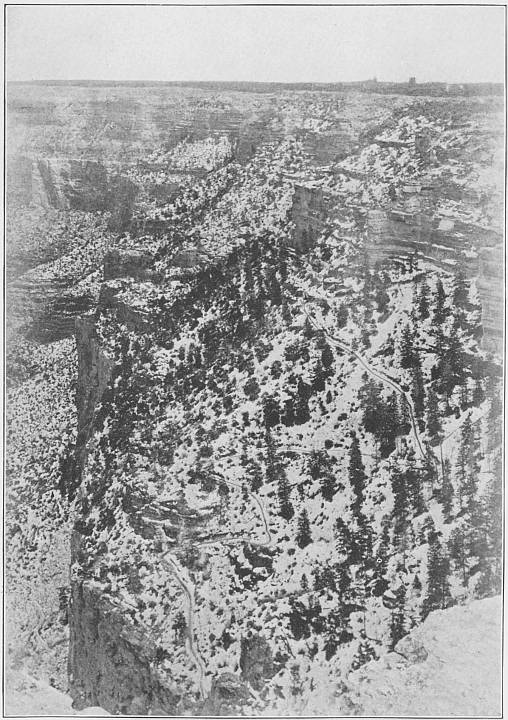 |
| THE TRAIL, GRAND CAÑON |
There were seven of us, including the guide, as we started down the long and crooked path. The guide rode a white horse, but the rest of the party were mounted, like myself, on big, sturdy 279 mules—none of your little, lazy burros, as most people imagine. At first the trail seemed to descend at a frightful angle, and the path seemed—oh, so narrow! I could put out my left hand against a perpendicular wall of rock and look down on the right into what seemed to be the bottomless pit. I noticed that the trail was covered with snow and ice. Suppose any of the mules should slip? Had we not embarked upon a foolhardy undertaking? And if there should be an accident, all the blame would justly fall upon my head. How silly of me to be so anxious to go! And how reckless to urge all these other poor innocents into such a trap!
Fortunately such notions lasted only a few minutes. The mules were sharp-shod and did not slip. They went down every day, nearly, and knew their business. They were born in the cañon. They would have been terribly frightened in Broadway, but here they were at home and followed the familiar path with a firm tread. I threw the bridle over the pommel of the saddle and gave Sam my implicit trust. He knew a great deal more about the job than I did. From that moment I had no further thought of danger.
I came to have a high respect for that mule. Most people respect a mule only because of the possibility that his hind legs may suddenly fly out at a tangent and hit something. I respected Sam because I knew his legs would do nothing of the 280 kind. He needed all of them under him and he knew it. He never swerved a hair’s breadth nearer the outer edge of the path than was absolutely necessary. The trail descends in a series of zigzag lines and sharp angles like the teeth of a saw. Sam would march straight down to one of these angles; then, with the precipice yawning thousands of feet below, he would slowly squirm around until his head was pointed down the next segment and then with great deliberation resume his journey. The guide thought him too deliberate and once came back to give me a small willow switch. I was riding on a narrow shelf of rock, less than a yard wide, where I could look down into a chasm thousands of feet deep. “That mule is too slow,” he said; “you must whip him up.” I took the switch and thanked him. But I wouldn’t have used it then for a million dollars!
It was a glorious ride. The trail itself was the only sign of human handiwork. Everything else in sight was as Nature made it—a wild, untouched ruggedness near at hand and a softer, gentler aspect in the distance, where the exposed strata of all the geologic ages caught the sunshine at millions of angles, each reflecting its own particular hue and all blending together in a rich harmony of color; where the bright blue sky and the fleecy clouds came down to join their earthly brethren in a revelry of rainbow tints, 281 and the sun overhead, despite the snow about the rim, was smiling his happiest summer benison upon the deep valley.
We came, presently, to a place called Jacob’s Ladder, where the path ceased to be an inclined plane and became a series of huge steps, each about as high as an ordinary table. Here we all dismounted, for the mules could not safely descend with such burdens. It was comical to watch them. My Sam would stand on each step for several minutes, gazing about as though enjoying the scenery. Then, as if struck by a sudden notion, he would drop his fore legs to the next step, and with hind legs still at the higher elevation, pause in further contemplation. At length it would occur to this deliberate animal that his hind legs, after all, really belonged on the same level with the other two, and he would suddenly drop them down and again become rapt in thought. This performance was repeated on every step for the entire descent of more than one hundred feet.
After traveling about three hours, during which we had descended three thousand feet below the rim, we came to Indian Garden, where an Indian family once found a fertile spot on which they could practice farming in their own crude way. Here we came to some tents belonging to a camping-party, and I found the solution of a problem that had puzzled me earlier in 282 the day. Standing on the rim and looking across the cañon I had seen what appeared to be a newspaper lying on the grass. I knew it must be three or four miles from where I stood, and that a newspaper would be invisible at that distance, yet I could not imagine how any natural object could appear white and rectangular so far away. Presently I saw some tiny objects moving slowly like a string of black ants, and realized that these must be some early trail party. We met them at Indian Garden. They proved to be prospectors and the “newspaper” was in reality the group of tents.
We had now left the steep zigzag path, and riding straight forward over a great plateau, we came to the brink of some granite cliffs, where we could at last see the Colorado River, thundering through the gorge thirteen hundred feet below. And what a river it is! From the rim we could only catch an occasional glimpse, looking like a narrow silver ribbon, threading in and out among a multitude of strangely fashioned domes and turrets. Here we saw something of its true character, though still too far away to feel its real power—a boiling, turbulent, angry, and useless stream dashing wildly through a barren valley of rock and sand, its waters capable of generating millions of horse-power, but too inaccessible to be harnessed, and its surface violently resisting the slightest attempt at navigation; 283 a veritable anarchist of a river! For more than a thousand miles it rushes through a deep cañon toward the sea, falling forty-two hundred feet between its source and mouth and for five hundred miles of its course tumbling in a series of five hundred and twenty cataracts and rapids—an average of slightly more than one to every mile.
Think of the courage of brave Major Powell and his men, who descended this terrible river for the first time, and you have a subject for contemplation as sublime as the cañon itself. In the spring of 1869, when John W. Powell started on his famous expedition, the Grand Cañon was totally unknown. Hunters and prospectors had seen enough to bring back wonderful stories. Parties had ventured into the gorge in boats and had never been heard of again. The Indians warned him that the cañon was sacred to the gods, who would consider any attempt to enter it an act of disobedience to their wishes and contempt for their authority, and vengeance would surely follow. The incessant roar of the waters told of many cataracts and it was currently reported that the river was lost underground for several hundred miles. Undaunted by these fearful tales, Major Powell, who had seen service in the Civil War, leaving an arm on the battlefield of Shiloh, determined, nevertheless, to descend the river. He had long been a student of botany, 284 zoölogy, and mineralogy and had devoted two years to a study of the geology of the region.
With nine other men as his companions, he started from Green River City, Wyoming, on the 24th of May, with one light boat of pine and three heavy ones built of oak. Nothing could be more modest than his report to the Government, yet it is an account of thrilling adventures and hair-breadth escapes, day by day, almost too marvelous for belief. Yet there is not the slightest doubt of its authenticity in every detail. At times the swift current carried them along with the speed of an express train, the waves breaking and rolling over the boats, which, but for the water-tight compartments, must have been swamped at the outset.
When a threatening roar gave warning of another cataract they would pull for the shore and prepare to make a portage. The boats were unloaded and the stores of provisions, instruments, etc., carried down to some convenient point below the falls. Then the boats were let down, one by one. The bow line would be taken below and made fast. Then with five or six men holding back on the stern line with all their strength, the boat would be allowed to go down as far as they could hold it, when the line would be cast off, the boat would leap over the falls, and be caught by the lower rope. Again and again, day after day throughout the entire summer, this 285 hard work was continued. In the early evenings and mornings Major Powell, with a companion or two, would climb to the top of the high cliffs, towering to a height of perhaps two thousand or three thousand feet above the river, to make his observations, frequently getting into dangerous positions where a man with two arms would have difficulty in clinging to the rocks, and where any one but a man of iron nerve would have met instant death.
Day by day they faced what seemed certain destruction, dashing through rapids, spinning about in whirlpools, capsizing in the breakers, and clinging to the upturned boats until rescued or thrown up on some rocky islet, breaking their oars, losing or spoiling their rations until they were nearly gone, and toiling incessantly every waking hour. One of the boats was completely wrecked before they had crossed the Arizona line, and one man, who barely escaped death in this accident, left the party on July 5, declaring that he had seen danger enough. The remaining eight, whether from loyalty to their chief or because it seemed impossible to climb to the top of the chasm, continued to brave the perils of the river until August 27, when they had reached a point well below the mouth of the Bright Angel River. Here the danger seemed more appalling than at any previous time. Lateral streams had washed great boulders into the river, forming a 286 dam over which the water fell eighteen or twenty feet; then appeared a rapid for two or three hundred yards on one side, the walls of the cañon projecting sharply into the river on the other; then a second fall so great that its height could not be determined, and beyond this more rapids, filled with huge rocks for one or two hundred yards, and at the bottom a great rock jutting halfway across the river, having a sloping side up which the tumbling waters dashed in huge breakers. After spending the afternoon clambering among the rocks to survey the river and coolly calculating his chances, the dauntless Powell announced his intention to proceed. But there were three men whose courage was not equal to this latest demand, and they firmly declined the risk.
On the morning of the 28th, after a breakfast that seemed like a funeral, the three deserters—one can scarcely find the heart to blame them—climbed a crag to see their former comrades depart. One boat is left behind. The other two push out into the stream and in less than a minute have safely run the dangerous rapids, which seemed bad enough from above, but were in reality less difficult than many others previously experienced. A succession of rapids and falls are safely run, but after dinner they find themselves in another bad place. The river is tumbling down over the rocks in whirlpools and great 287 waves and the angry waters are lashed into white foam. There is no possibility of a portage and both boats must go over the falls. Away they go, dashing and plunging, striking the rocks and rolling over and over until they reach the calmer waters below, when as if by miracle it is found that every man in the party is uninjured and both the boats are safe. By noon of the next day they have emerged from the Grand Cañon into a valley where low mountains can be seen in the distance. The river flows in silent majesty, the sky is bright overhead, the birds pour forth the music of a joyous welcome, the toil and pain are over, the gloomy shadows have disappeared, and their joy is exquisite as they realize that the first passage of the long and terrible river has been safely accomplished and all are alive and well.
But what of the three who left them? If only they could have known that safety and joy were little more than a day ahead! They successfully climbed the steep cañon walls, only to encounter a band of Indians who were looking for cattle thieves or other plunderers. They could give no other account of their presence except to say they had come down the river. This, to the Indian mind, was so obviously an impossibility that the truth seemed an audacious lie and the three unfortunate men were murdered.
We were obliged to content ourselves with a 288 view of the river from this height, though I had expected to descend to the river’s edge and felt correspondingly disappointed. We had started too late for so long a trip and now it was time to turn back. Looking back at the solid and apparently perpendicular rock, nearly a mile high, it seemed impossible that any one could ascend to the top. It is only when one looks out from the bottom of this vast chasm at the huge walls on every side that he begins to realize its awfulness. We are mere specks in the bottom of a gigantic mould wherein some great mountain range might have been cast. There are great mountains all about us and yet we are not on a mountain but in a vast hole. The surface of the earth is above us. A great gash has been cut into it, two hundred miles long, twelve to fifteen miles wide, and a mile deep, and we are in the depths of that frightful abyss with—to all appearance—no possible means of escape. Perpendicular cliffs of enormous height, which not even a mountain sheep could climb, hem us in on every side. The shadows are growing deep and it seems that the day must be nearly done. Yet we remount our mules and slowly retrace our steps over the steep ascent. It seems as though the strain would break the backs of the animals. As we approached the summit of the path some one remarked, “I should think these mules would be so tired they would be ready to drop.” “Wait and see,” said the guide. A few minutes later we 289 reached the top and dismounted, feeling pretty stiff from the exertion. The mules were unsaddled and turned loose. Away they scampered like a lot of schoolboys at recess, kicking their heels high in the air and racing madly across the field. “I guess they’re not as tired as we are,” said the Major, as he painfully tried to straighten up. Just then the little girl of twelve came up to me. “There is one thing,” she said, “that has been puzzling me all day. How in the world did you find out so quickly that your mule’s name was Sam?” “Name ain’t Sam,” interrupted the guide, bluntly. “Name’s Teddy—Teddy Roosevelt.”
Some years ago I had occasion to attend a stereopticon lecture on the Grand Cañon. The speaker was enthusiastic and his pictures excellent. But he fired off all his ammunition of adjectives with the first slide. For an hour and a half we sat listening to an endless repetition of “grand,” “magnificent,” “sublime,” “awe-inspiring,” etc. As we walked home a young lad in our party, who was evidently studying rhetoric in school, was heard to inquire, “Mother, wouldn’t you call that an example of tautology?” I fear I should merit the same criticism if I were to undertake a description of the cañon. Yet we may profitably stand, for a few moments, on Hopi Point, a promontory that projects far out from the rim, and try to measure it with our eyes.
That great wall on the opposite side is just 290 thirteen miles away. The strip of white at its upper edge, which in my photograph measures less than a quarter of an inch, is a stratum of limestone five hundred feet thick. Here and there we catch glimpses of the river. It is five miles away, and forty-six hundred feet—nearly a perpendicular mile—below the level upon which we are standing. We look to the east and then to the west, but we see only a small part of the chasm. It melts away in the distance like a ship at sea. From end to end it is two hundred and seventeen miles. It is not one cañon, but thousands. Every river that runs into the Colorado has cut out its own cañon, and each of these has its countless tributaries. It has been estimated that if all the cañons were placed end to end in a straight line they would stretch twenty thousand miles.
| 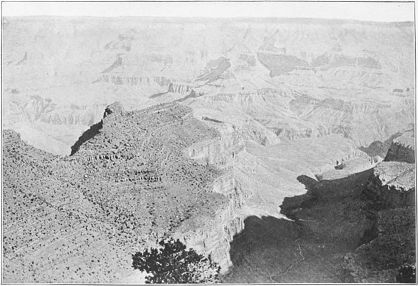 |
| THE GRAND CAÑON OF ARIZONA |
If this mighty gash in the earth’s surface were only a great valley with gently sloping sides and a level floor, it would still be impressive and inspiring, though not so picturesque. But its floor is filled with a multitude of temples and castles and amphitheaters of stupendous size, all sculptured into strange shapes by the erosion of the waters. Any one of these, if it could be transported to the level plains of the Middle West or set up on the Atlantic Coast, would be an object of wonder which hundreds of thousands would visit. Away off in the distance is the Temple of Shiva, towering seventy-six hundred and fifty 291 feet above the sea and fifty-two hundred and fourteen feet (nearly a mile) above the river. Take it to the White Mountains and set it down in the Crawford Notch. From its summit you would look down upon the old Tip-Top house of Mount Washington, eight hundred feet below. Much nearer, and a little to the right, is the “Pyramid of Cheops,” a much smaller butte but rising fifty-three hundred and fifty feet above the sea-level. If the “Great Pyramid of Cheops” in Egypt were to be placed by its side it would scarcely be visible from where we stand, for it would be lost in the mass of rocky formations. Mr. G. Wharton James, who has spent many years of his life in the study of the cañon, says that he gazed upon it from a certain point every year for twenty years and often daily for weeks at a time. He continues, “Such is the marvelousness of distance that never until two days ago did I discover that a giant detached mountain fully eight thousand feet high and with a base ten miles square ... stood in the direct line of my sight, and as it were, immediately before me.” He discovered it only because of a peculiarity of the light. It had always appeared as a part of the great north wall, though separated from it by a cañon fully eight miles wide.
How are we to realize these enormous depths? Those isolated peaks and mountains, of which there are hundreds, are really only details in 292 the vast stretch of the cañon. Not one of them reaches above the level of the plain on the north side. Tourists who have traveled much are familiar with the great cathedrals of Europe. Let us drop a few of them into the cañon. First, St. Peter’s, the greatest cathedral in the world. We lower it to the level of the river, and it disappears behind the granite cliff. Let the stately Duomo of Milan follow. Its beautiful minarets and multitude of statues are lost in the distance, and though we place it on the top of St. Peter’s, it, too, is out of sight behind the cliffs. We must have something larger, so we place on top of Milan the great cathedral of Cologne, five hundred and one feet high, and the tips of its two great spires barely appear above the point from which we watched the swiftly rolling river. Now let us poise on the top of Cologne’s spires, two great Gothic cathedrals of France, Notre Dame and Amiens, one above the other, then add St. Paul’s of London, the three great towers of Lincoln, the triple spires of Lichfield, Canterbury with its great central tower, and the single spire, four hundred and four feet high, of Salisbury. We are still far from the top. These units of measurement are too small. Let us add the tallest office building in the world, seven hundred and fifty feet high, and then the Eiffel Tower, of nine hundred and eighty-six feet. We shall still need the Washington Monument, and if my calculations are correct, 293 an extension ladder seventy-five feet long on top of that, to enable us to reach the top of the northern wall. One might amuse himself indefinitely with such comparisons. Perhaps they are futile, but it is only by some such method that one can form the faintest conception of the colossal dimensions of this, the greatest chasm in the world.
Still more bewildering is the attempt to measure the cañon in periods of time. There were two great periods in its history—first, the period of upheaval, and second, that of erosion. When the geologic movement was in process which created the continent, with the Rocky Mountains for its backbone, this entire region became a plateau, vastly higher than at present, with its greatest elevation far to the north. Then the rivers began to carry the rains and snows to the sea, carving channels for themselves through the rocky surface. The steep decline caused the waters to flow with swiftness. The little streamlets united to form larger ones, and these in turn joined their waters in still greater streams. The larger the stream and the swifter the flow, the faster the channel would be carved. The softer rocks gave slight resistance, but when the granite or harder formations were encountered, the streams would eddy and whirl about in search of new channels, the hard rocks forming a temporary dam. In this way the hundreds of buttes 294 were formed. The Green River and the Grand unite to form the Colorado, the entire course of this great waterway stretching for two thousand miles. The two streams carry down a mighty flood—in former ages it was far mightier than now—which in its swift descent has ground the rocks into sand and silt and with resistless force carried them down to the sea. Those great buttes and strangely sculptured temples, each a formidable mountain, were not thrown up by volcanic forces, but have been carved out of the solid earth by the erosion of the waters. That river five miles away, of which we see only glimpses here and there, was the tool with which the Great Sculptor carved all this wondrous chasm. Major Powell has calculated that the amount of rock thus ground to pieces and carried away would be equivalent to a mass two hundred thousand square miles in area and a full mile in thickness. Think of excavating a mile deep the entire territory of New England, New York, New Jersey, Pennsylvania, Delaware, Maryland, and West Virginia, and dumping it all into the Atlantic. Then think that this is the task the Colorado River and other geologic forces have accomplished, and pause to wonder how long it took to complete the process! If the Egyptian kings who built the pyramids had come here for material they would have seen the chasm substantially as we see it!
The geologic story of the cañon’s origin is too far beyond our comprehension. Let us turn to the Indian account. A great chief lost his wife and refused to be comforted. An Indian God, Ta-vwoats, came to him and offered to conduct him to a happier land where he might see her, if he would promise to cease mourning. Then Ta-vwoats made a trail through the mountains to the happy land and there the chief saw his wife. This trail was the cañon of the Colorado. The deity made the chief promise that he would reveal the path to no man, lest all might wish to go at once to heaven, and in order to block the way still more effectually he rolled a mad surging river through the gorges so swift and strong that it would destroy any one who dared attempt to enter heaven by that route.
I have often been asked which is the greater wonder, the Grand Cañon of the Colorado River or the Yellowstone National Park. The question is unanswerable. One might as well attempt to say whether the sea is more beautiful than the sky. If mere size is meant, the Grand Cañon is vastly greater. If all the geysers of the Yellowstone were placed down in the bottom of the Grand Cañon at the level of the river, and all were to play at once, the effect would be unnoticed from Hopi Point. The cañon of the Yellowstone River, impressive as it is, would be lost in one of the side cañons of the Colorado.
The Grand Cañon and the Yellowstone are creations of a totally different kind.
The Yellowstone is a garden of wonders. The Grand Cañon is a sublime spectacle.
The Yellowstone is a variety of interesting units. The Grand Cañon is a unit of infinite variety.
The Yellowstone contains a collection of individual marvels, each wondrous in structure and many of them exquisite in beauty. The Grand Cañon is one vast masterpiece of unimagined architecture, limitless grandeur, and ever-changing but splendidly harmonious brilliancy of color.
The Yellowstone fills the mind with wonder and amazement at all the varied resources of Nature. The Grand Cañon fills the soul with awe and reverence as one stands in silence upon the brink and humbly reflects upon the infinite power of God.
THE END
INDEX
INDEX
Alcott, Louisa M., 193.
Aldrich, Thomas Bailey, 207-20.
Amiel, Henri Frédéric, 118; 124-27.
Anderson, Mary, 110, 112, 113.
Arbury Hall, 20-28.
Arizona, The Grand Cañon of, 271-96.
Arona, 156.
Authari, the Long-haired, 164.
Ayrshire, 46-48.
Bashkirtseff, Marie, 132, 133.
Bastien-Lepage, 133.
Battlefield of Concord, 186, 187.
Belgirate, 155-56.
Bellagio, 168.
Borromeo, Count Vitaliano, 154.
Burns, Robert, 43-48.
Burroughs, John, A Day with, 233-50.
Cañon of the Yellowstone, the, 267-69.
Caroline, Queen, 168.
Catskill Mountains, 237, 238, 239, 242, 243, 246.
Channing, Ellery, 186.
Coleridge, Hartley, 62.
Coleridge, Samuel T., 51, 61, 62.
Colorado River, the, 282-88; 293-95.
Colvin, Sir Sidney, 19-21.
Como, Lake, 95-98; 137; 138; 150; 158-68.
Concord, Massachusetts, 179-95.
Deffand, Marquise du, 140.
De Quincey, Thomas, 52, 59, 63, 64.
Drummond, William, 77-84.
Ecclefechan, 41-44.
Eliot George, 20-35.
Ellastone, original of “Hayslope,” 31.
Emerson, Ralph Waldo, 17; 181-92; 249.
Esk, Vale of the, 75-92.
Esthwaite, Lake, 56.
Evans, Rev. Frederick R., 28-29.
Gaeta vase, 170.
Gallio, Cardinal, 168.
Grand Cañon of Arizona, the, 271-96.
Grant, Gen. U. S., 244.
Gravedona, palace of Cardinal Gallio, 168.
Great Britain, Literary Rambles in, 15-48.
Green, Thomas H., 117, 118, 122, 123, 124, 127.
Haines, George, 170-74.
Hawthorne, Elizabeth, 198, 199.
Hawthorne, Nathaniel; in Concord, 179-95; in Salem, 196-206.
Hawthorne, Sophia Peabody, 180, 185; 198; 199.
Hawthornden to Roslin Glen, From, 73-92.
Holmes, Oliver Wendell, 17.
“House of the Seven Gables, The,” 196, 202-06.
Il Medeghino, 160-63.
Iron Crown of Lombardy, 165.
Isles of Shoals, the, 222-32.
Isola Bella, 152-55.
Isola dei Pescatori, 155.
Isola Madre, 155.
Italian Lakes, A Tour of the, 147-74.
Jonson, Ben, 81-84.
Lacus Larius. See Como.
Lacus Verbanus. See Maggiore.
“Lady Wentworth,” scenes of, 220, 221.
Laighton, Oscar, 229.
Lamb, William and Caroline, 141-44.
Lasswade, 75-76.
Lespinasse, Julie de, 139-41.
Longfellow, Henry Wadsworth, 17; 159; 220; 221.
Lowell, James Russell, 17; 55; 232.
Lugano, Lake, 96, 151, 157, 159.
Maggiore, Lake, 96, 149, 150, 152-56, 159.
Mammoth Hot Springs, 255-57.
Medici, Gian Giacomo de (Il Medeghino), 160-63.
Melbourne, Lord, 141-44.
Menaggio, 160.
Minute-Man, the, Concord, 186, 187.
Monument, the, on battlefield of Concord, 186, 187.
Musketaquid, river at Concord, 185.
New England, Literary Landmarks of, 175-232.
Nutter House, the, 207-16.
Old Manse, the, 179-86.
Oxford, 99-100.
Passmore Edwards Settlement, London, 103-09, 127.
Pattison, Mark, 100; 117-21; 126, 127.
Peabody, Elizabeth Palmer, 198.
Peabody, Mary (Mrs. Horace Mann), 198.
Peabody, Dr. Nathaniel, 197.
Peabody, Sophia. See Hawthorne, Sophia Peabody.
Pogliaghi, Lombard decorator, 170, 171.
Portsmouth, N.H., 207-21.
Powell, Major John W., 283-87.
Ripley, Rev. Ezra, 182.
Ripley, Rev. Samuel, 182.
“Robert Elsmere,” 102, 109, 110-27.
Roslin Castle, 86-88.
Roslin Glen, 75-92.
St. Clair family, of Roslin, 87, 88, 91, 92.
Salem, Massachusetts, 196-206.
Salpion, Greek sculptor, 170.
“Scarlet Letter, The,” 201-02.
Scott, Sir Walter, 37, 38, 39, 45, 46, 75, 76, 89, 90, 239.
Sleepy Hollow Cemetery, Concord, 187-89.
Southey, Robert, 51.
Theodelinda, Queen of the Lombards, 163-65.
Thoreau, Henry D., 182-91; 228.
Tower of London, 18.
Tremezzo, 168.
Varenna, 163.
Victoria Monument, London, 40.
Villa Bonaventura, 169.
Villa d’Este, 168.
Villa Maria, 169-74.
Walden Pond, 191.
Ward, Mrs. Humphry, The Country of, 93-146.
Ward, Mrs. Humphry, scenes of novels, 36, 37, 111-17; 128-31; 134-38; 145; 169.
Washburn, Gen. Henry D., 253.
Wayside, the, Hawthorne’s house in Concord, 193, 194.
Wentworth House, 220-21.
Westmoreland, 51-72; 98; 131; 134; 135; 136; 239; 241.
White, Gilbert, 228.
Wilson, John (Christopher North), 52.
Windermere, Lake, 54; 68; 70; 98.
Windermere village, 51.
Wordsworth’s Country, A Day in, 49-72.
Wordsworth, Dorothy, 41, 63, 64, 65.
Wordsworth, Mrs., 63.
Wordsworth, William, 41; 51-72; 98; 158; 239-43.
Yellowstone, Glimpses of the, 251-69.
Yellowstone Lake, the, 261; 267.
The Riverside Press
CAMBRIDGE . MASSACHUSETTS
U. S. A.